It is volume 12 ( 0 1 2 3 4 5 6 7 8 9 10 11)
volume 12 of a draft. It is online because I always wanted to kijken naar artists and scientists notes.
word is во рту
rot is red (rot is mouth in russian, and probably because it is red)
rot in english is red because of inflammation.
is it? How dare I mix this all up before the results from the program comparing words from the monoliteral up are ready?

Here something relating to the rotations I discuss since vol. 1

"Fair Burd Helen," said the Magician, "must have been carried off with her shadow by the fairies when she was running round the church widershins; for fairies have power when folk go against the light. She will now be in the Dark Tower of the King of Elfland, and none but the boldest knight in Christendom will be able to bring her back."
I wonder why it's not easy to find the poetic version of the whole fairy-tale, but that's the way it is in the Joseph Jacobs's collection: https://www.gutenberg.org/files/7439/7439-h/7439-h.htm
and as I promised in the very finale of vol.1 I did go to jews and when I discussed with them the way I circle round the field to find more and more, I noticed that my hand went "widershins", the counter-clockwise. And this word tells that counter-clockwise is the direction outside. And by that road clock-wise will be into the church, so in this way крёстный ход перед входом в церковь должен быть по солнцу, а выходить из церкви против солнца? Я уверен, в церковной литературе лежит весь ход религиозной мысли по причине которого пришли к сегодняшней традиции водить хороводы отворотные.
231 gates tell that one direction is delight while the opposite is plague.
And plague was in the past, so when I showed the "deeper and deeper" thing, I probably went into the past with my thought. And indeed, counter-clockwise goes to the left at it's top and they say our timeline is left to right (at least for those who read and write left to right. semitic way of writing from right to the left may make them enmious with the rest of the world, because their eye-movements are the opposite of outs, and we trust them when they lie, yet we distrust them when they speak the truth. Huh, that's unexpected. I find it as I write. Before I stumbled across it, I
And that sentence promises delight in the future, which is only natural.
Because delight is what I saw to be happening in my capsules, where each move will lead to ecstasy.
When I speak of morphemes, people tend to ask if I speak of the roots, but aphexes may matter more:
ушёл убежал улетел умчал убрался и так далее - приставка самая важная часть этих глаголов по смыслу, потому что смена приставки может изменить это слово на антоним. у is probably the same u as in away and out. It's funny that I don't immediately see it neither in прочь not in долой, but I definitely see it in вон.
And that probably relates to в (in) relating to bu (no) as if at a hunt, there's no animal, if the animal is hidden in the ground somewhere.
New high session. Saturday, to my surprise. I didn't manage to give up weed, because I have broken my motivation by not paying back my brother his due. I made an unhonorable misdeed by not sticking to the verbal contract, and now I cannot do it because the state took him away. And I have to smoke to create this research instead of building my capsule. If I began building my capsule, I'd surely be sober more likely. I don't need being high to build that. Unfortunately, it seems I must smoke weed to be auistic enough to write this thing. It takes me many years now, some people wrote that ten or even twenty years it took some scientists to come up with their righteous theories. So I make it publicly for over 7 years now, so I expect it to bring fruits in over 2 years or so. I also made it secretly for over ten years before that. So in 2024 or 2025 it will become big for me.
abe iotu would be the words if we wanted to combine those five vowels, b and t into one word, the best I could do is two. abey jotu. obey to a jew?
abei otu abei lotu (l ~ I) these words I pull out of the blue. I try them on. If they're no good I will look for something more, don't worry about it, please.
I didn't speak enough about what I did here.

I think I took the 16-rune set as they present it and found that A and E is the same Ææ
that is why B rune looks like F in the short twig variant:

And luckily it is a 16-rune sent, and I see that it doesn't hae e or g.
Thus my arrangement seems to be even more based than I even thought.
Looking at old russian flag, I see notes of german flags. Only then I see that those brown flags (russian wite black yellow is even more brown than white black red, and I see that russian flag in modern german one, only whites are substituted with the reds.
I should stop trying to contact religious people. As one pastor told me, religions are to control the masses, not to understand the world. Maybe professional jews are the smartest believers, htey're believers nevertheless, so I will confuse their belief system. I wanted to say that something is wrong with them, but yes, this argument is much more important (was something wrong with me when I believed? I wouldn't think so, other than the assumption was thoroughly arbitrary, just as what if, let's learn to believe. Let's learn to believe. Belief can take towns. Often it took towns down.
Mye will e is good. But you know how they say of the good intentions.
Interesting is the way that reconstructed order of younger futhark lays down into the axial structure:

It's as if ᛅ is a form of ᚾ and we have ourself three 5-letter-long lines with t reflecting f and d reflecting g and what else?
I would replace the ᛦᚱ with ᚱᛦ, actually the way they're in bornholm alphabet stone. Because ᛦ is transliterated as R and my bold guess is that ᚱ is П, mistransliterated because of how much ᚱ reminds R. Yet it's not a coincidence, because russian R looks like Р. (and even without the dot)
And now I see that then ᛘ reflects ᛦ
and ᚼ for sh reflects ᛋ for s.
But then again I doubt I cannot compare anything. So let's leave this ultracomparativistics and stick to new and more certain technics: the classical comparatevistic techniques of comparing words, not letters. Even if those words are the same letter. As I did with a and others in the previous volume, as I promised in the beginning of this one, at this stage we deliver the same comparison at much larger scale and with much more advanced technology.
a b (cdefghijkl)
(mnop) (qrst) u
labials are as if standing for two words. Be and more complex concept of помни.
but how dare I use slavic for the latin alphabet? Maybe because I допускаю этрусские корни у славян. Хотя мне присылали книгу где связывали этрусков с кельтами, но кто знает нет ли генетической и культурной связи меж ирландцами и руснёй. И те и другие вполне по-европейски выглядят, и вроде странная русская р у них тоже присуствует, или это у шотландцев, или у обеих наций, ах я не знаю, ололо. Это всё в любом случае голословно, так what are you reading for?
abc
mqu
?
aback
make
?
abacus
mquus
?
magic abacus?
abacus get back by itself (when you rotate it)
И позиция фишек будет правильной или неправильной, если ты повернёшь их в ту или не ту сторону. В советской торговли счёты располагались фишками справа. Т.о. поворот посолонь скидывал счёты в начальное положение.
all videos in russian and ukrainian I saw show them arranged like that.
Существует традиция, скидывающая счёты и в другую сторону, практически любое видео на английском распологает её с другой стороны, так что сброс будет против часовой, но я не нашёл видео с практическим применением оного, так что я решил оставить вам разобрать это самим, кто знает насколько компетентны те ютуб-блоггеры, и не попугайничают ли они друг за другом.
Забавно, что японские счёты располагают строки вертикально, также как и классическое китайское письмо, но в отличие от него они похоже начинают счёт слева:
(сбрасываются они специальной кнопкой, так что вращение к ним неприменимо.
и не только японцы так ими пользуются, но похоже что и индусы и многие другие англоязычные, оставлю эту тему тоже пока что в стороне)
turd~dirt (probably these are cognates with for whatever reason dirt being more polite form of it, which could make it some euphemism, thus turd is more ancient form. as a hypothesis, to my collection too)
a b (cdefghijkl)
(mnop) (qrst) u
is qrst quest with vowel r?
cdefghijkl makes no sense whatsoever no matter how much I look.
this thing is just retarded so it seems. even if I can unite (uvwxyz) into one group for the reasons, no matter, it doesn't matter. enough of it.
sunday13june
haha, this notebook becamse my wild diary.
diary berry awry [эрАй]
[][][]\][][ppiofpppppppppjo uppppjf df
To my surp[pprise I push p's by pinky, because the next finger is lazy to go further than o.
It leads to me still not exactly knowing where []'s are, and they're right under the right pinky. I still push p by pinky, it siims more natural for him, for he runs even to backspace, it's more active than the next finger, that is the freedom of being
I am a poet, so I will die of that. Of peotry, of speaking way too much. It's sad and tells that I have to hide out.
a, English indef. art. I am a man.
I, English 1st pers. sg. I think, therefore I am
a, Danish prep., of, at, to
a, Danish v., imperative of ae, to pet
å, Danish n., small river, creek
i, Danish prep., in, inside Sport i Texas: Sports in Texas
ø, Danish n., island Pitcairn er en britisk ø: Pitcairn is a British island
à, Dutch prep., per, at, borrowed from French 5 stuks à € 10,-: 5 pieces at €10 each
u, Dutch pron., 2nd p. sg. formal Bent u tevreden?: Are you happy?
u, Afrikaans pron., 2nd p. sg. formal U het u woorde vervul: You fulfilled your words
à, German See Dutch.
à, Swedish See Dutch.
å, Swedish n., river, creek
å, Swedish prep., used in certain expressions as on å andra sidan: on the other hand
i, Swedish prep., in, to Sport i Texas: Sports in Texas
ö, Swedish n., island Jag är en ö: I am an island
á, Icelandic n., river Thames er helsta á Suður-Englands: Thames is the main river of South England.
á, Icelandic n., ind. acc. sg. of ær, female sheep
á, Icelandic v., 1st and 3rd pers. sg. of eiga, to own Ég á líf: I'm alive
á, Icelandic prep., on, in Ég bý á Íslandi: I live in Iceland.
æ, Icelandic adv., always, forever
í, Icelandic prep., in, for Íshokkí er vaxandi íþrótt í Ungverjalandi: Ice hockey is a growing sport in Hungary
å, Norwegian part., inf. marker Å være eller ikke være: To be or not to be That's some TO.
i, Norwegian prep., in, inside Sport i Texas: Sports in Texas
á, Faroese n., brook, stream, river
á, Faroese prep., on, in, at
í, Faroese prep., in, into
à, French prep., to, at, per Je vais à Londres: I'm going to London
a, French v., 3rd pers. sg. of avoir, to have Il a une voiture: He has a car
y, French pron., there, to that Nous y sommes: We are there
a, Italian prep., to, at, in Andiamo a Roma: Let's go to Rome
è, Italian v., 3rd pers. sg. of essere, to be New York è una città: New York is a city
e, Italian and Guerra e pace: War and peace o, Lithuanian conj., and
i, Italian m. pl. def. art. I giorni più belli: The most beautiful days
o, Italian or Essere o non essere: To be or not to be
a, Spanish prep., to, by, at Yo veo a un hombre: I see a man
e, Spanish and, when preceding the vowel /i/ Francés e inglés: French and English
o, Spanish or Ser o no ser: To be or not to be
y, Spanish conj., and Guerra y paz: War and peace
u, Spanish or, when preceding the vowel /o/ Con mis padres u otros: With my parents or others
a, Portuguese fem. def. art. A mulher de preto: The woman in black
a, Portuguese prep., to, at
e, Portuguese and Guerra e paz: War and peace
é, Portuguese v., 3rd pers. sg. of ser, to be Nova York é uma cidade: New York is a city
o, Portuguese m. def. art. o ditador: the dictator
o, Portuguese pron., him, it as dir. obj.
a, Romanian fem. sg. pos. art. O prietenă de a mea: A friend of mine
a, Romanian marker for inf. verbs A fi sau a nu fi: To be or not to be
a, Romanian 3rd pers. sg. of modal aux. v. avea (have)
o, Romanian indef. art. o carte: a book
o, Romanian pron., 3rd p. acc. f. unstressed
a, Czech and Vojna a mír: War and peace
i, Czech conj., and, even, both Já i ty: Me and you both
k, Czech prep., to, towards Běžel k domu: He ran towards the house
v, Czech prep., in, on, for V krabici: Inside a box, V pondělí: On Monday
z, Czech prep., from Z domu: From a house
o, Czech prep., about, for, on Kniha o tobě: A book about you, O pět let dříve: Five years later
s, Czech with S tebou: With you
u, Czech prep., at, by U moře: At the sea
a, Polish and
i, Polish and Wojna i pokój: War and peace
o, Polish prep., about, at, for Musimy porozmawiać o Kevinie: We need to talk about Kevin
u, Polish prep., at U kresu dnia: At the end of the day
w, Polish in Noc w muzeum: Night at the museum
z, Polish prep., from, at Jestem z Polski: I am from Poland
z, Polish prep., with Z tobą: With you
(this size of the text is me adding some more lines to that collection)
a, Serbo-Croatian and, but
i, Serbo-Croatian conj., and, even Rat i mir: War and peace
k, Serbo-Croatian prep., to, towards
o, Serbo-Croatian prep., on, about
s, Serbo-Croatian prep., with
u, Serbo-Croatian prep., in, at, to Život u gradu: Life in the city
a, Slovak and
i, Slovak and
k
s, Slovak with
u
v
z, Slovak prep., from
a, Slovene but
o, Slovene prep., about
v, Slovene prep., in, into Življenje v Evropi: Living in Europe
z, Slovene prep., with
o, Turkish pron., 3rd p., he, she, it
o, Turkish dem. pron., that O gece: That night
a, Hungarian def. art. Éjszaka a múzeumban: Night at the museum
e, Hungarian determiner, this
ő, Hungarian pron., 3rd p. sg.
şi is and in romanian. These short words, which are monoliteral in some languages are the key to finding the other short words of that monosyllabic period. And then we'll link these words to chinese hieroglyphics. Showing how the same sounds spread through all the other conceptions.
şi as italian si, yes, which is not a coincidence, becuase in russian да is both and and yes.
rna looks like ma.
is dna daddy then?
The way words can be the same in languages of different "family" but not in the languages much more related, tells us that language is fiction, and only words matter. First there was the/a word, they say.
(as you can see above, the same a can be not only a (as in english, , but also the in both portuguese and turkish.
And what does o, Romanian pron., 3rd p. acc. f. unstressed mean? is it some case english philology doesn't know much about. её? isn't it how they make accusative in japanese? Did this o work connects hungarian and japanese? Words are links, words are the true memes, not some abstract languages. Language is chimera, of thousands of самостоятельных elements.
-их ~ of
-ть ~ to
russian i is english o? but or is ili, not i, i is and~yet.
or ~ иль.
или is и + ли. thus i ~ o + r ~ ль, деятель doer, ель ~ er. ель = fir. e = fi? E = Fi? ерь ~ fire?
ель ~ fire.
Many slavic languages have identical prepositions and even when they seem to not know some forms, they're still found in some biliteral: polish doesn't know k, but uses ku instead (russians use both к and ко, and that ko shows that it is exactly internationally known co- prefix, which is to also because some languages prefer до (do) intead of that ku, prefer d to c, and here we see how alphbaet could be the collection of these short words. And yet I wonder how could it be that в is not known in english)
Why do I rely on this random collection of the shortest words. I have to call my partner in this to tell him that I need my program now to make my own collection of these words.
Here's something else, showing the good vibrations and right rotations. The best japanese band surely knows which way to roll, they're almost unaffected by abrahamic fight with sorcery.
I just came to the formula AVZ as the basis of the alphabet, as to those three mothers.
Because 3 ~ З.
and now I see that IVX would be more traditional form of those.
and yet that AVZ I came upto is probably how that IVX was read.
I as ay or aye?
V as in? в (yet what is вон? I thought it was related to out and away, but it seems -он is no.
X as out? ex
вон as not inside hypothesis..
гон это то, что не пойдёт?
alone = al(l are) no(t her)e
tone = не тёмный? or to- as dye? but that would have some opposite meaning. I shouldn't stretch it this much.
Is chinese 都 [tu] which you could meet in kyoTO could be relatd to egyptian 𓏎 [t] you could meet in egypT. And if it's true, 𓏎 stands for hill, symbolizing the capital, even though I thought it stood for -land in egyptian. And if it does, then Egypt was an empyre with other lands seen as subordinate to the capital which was egypt to them.
знать is gnatt in roman: cognitive, recognize, cognate
and that gn is kn in german: know, kennen, can
and that з ~ g thing is spectacular, because g stands where з does in alphabet.
e fgh
ежзи
I'm not sure about f ~ ж though, but if f is digamma then gamma could be k if ж is f in a way.
to fuck ~ жахаться? жарить? fire? жарить ~ fry, so that ж ~ f thing could be something.
ж жарить
f fry
з знать
g know? g as ng? зн as an affricate standing for some single sound? носоое а как а! у простуженного студента может звучать? носовая а как когнат слва ум? кто знает, кто знает.
Работа будет подолжена (и помоги мне боги параллельно капсулу построить и так далее) но на сегодня это всё. Я поехал в магазин по сладкое.
враг ~ врак
abcd
efgh
абвгд
еёжзи
e~её
f~ж
g~з
h~и
(because fry~жарь (fuck жахай пришло даже раньше.. I'm in a twilight zone here, I don't know if what I say is true, I only research this subject, I try to compare lines between themselves and I cannot say that I CAN compare them yet.
abcd - b and d are be and do, быть и деять. с is со, c is co. (s is so in russian and many others, c is co in english and many others) and in this sense c is much closer to d than to b. b is in? в? b is bu? no?
d is duh, д is да.
bu and da, what language does have it like this?
呃
is some weird chinese vowel for duh. as if it's yeah but in such
wild chinese phonology, it's weirder than ы.
both d and j are lingual, so what do I worry? they're from different lines, that's all, different dialects but the same word. Language is thousand-head chimera, words are much less abstract thing. Words are much more real. Words exist throughout languages. It's not how many languages you know, it's how many words you recognize across cultures.
Modern academia is supported by go-t, and thus socialistisch, and as a result, ineffective. When business makes science, they make much better job about it. Human Genome was a private initiative, which go-t only tried to subvert. Was successful in spite of go-t.
government and goat is sheit for sheitan, го-о как госудрство and shit.
nnnnnnnnnnnnnnnnnnnnnnnnnnnnnnnnnnnnnnnnnnnnnnnnnnnnmmmmmmmm
n and m are the labial, reflecting b, бв, and thus they're bu, no, in- im- il- ir- all sonors are variants of one another, sonors before some letters stand:
il is only before l
ir is only beore r
(thus they don't matter much, they're.. or do they? they're some n's or m's I think. ᚱ as a form of ᚢ again.
im is before m, p,
un-is only n, unbelievable,
in is boefore v, t, c, d,
why does in- go un- before b?
u ~ i? и is i in russian.
so un is some basal form? because u is always with n in it, unlike i.
u and i are the pronouns? could be but then u ~ i and thus ya (you) ~ я [ya] (I) and that is how second person is whethere some pronoun of the first person or the third person (you or thee, we or they, you and we both could be some of uvw, the letter as a word.
I as a form of U and thus A is a form of I and U, if the lines repeat themselves in differnt dialects, and thus c ~ g ~ з cognito сознаю. со ~ з?! what is наю then? как в наитие, чувствую? пинаю пеняю пинает как пень? пенять как пеня? воняю, внутренности чувствую? склоняю сколениум? склоняю к сексу? склоняю наклоняю склоняю с~soft,слехка,easy,see(I see what I do, and thus I know what you do?)
Before I have that program, let's play as if I only know two languages because all the other languages are lost. Let's only play with russian and english. Or let's even start with only russain, because I know it the best.
a во до
ем же за
и ко ли мы не
о по со то (от?)
у це чё ша ща
эй ю~я
и коли мы не звучит как прекрасная часть какого-то предложения. осталные строки отс
and in to
eat yo pro
and to if we no
of by co- to (of?)
at ce wha hush nao
hey you~I
?
so what it tells is that that russian set I prepared is not translated into russian nicely and thus false.
Seeing how alphabet company colours remind my structure standing next to it in my
favourites, made me play with my .ico a little and those letters
again made me think of those timelines of AD and BC as if the
modern AD period is how our laphabet goes: first line of it is
A-D and then BC would be how itwas in the ancient past. B as the
first letter, C as shin, and no air, just water of B and fire of
C (ash) and if C is ash (I thought of shin as the sefer
yetzirah's mother) and I see that thus C ~ H ~ X ~ ƆC and here I
think of F ~ H and H as Ⱶ and maybe even as ᚴ
standing next to it in my
favourites, made me play with my .ico a little and those letters
again made me think of those timelines of AD and BC as if the
modern AD period is how our laphabet goes: first line of it is
A-D and then BC would be how itwas in the ancient past. B as the
first letter, C as shin, and no air, just water of B and fire of
C (ash) and if C is ash (I thought of shin as the sefer
yetzirah's mother) and I see that thus C ~ H ~ X ~ ƆC and here I
think of F ~ H and H as Ⱶ and maybe even as ᚴ
I think I sent into google my book. Do they secretly read it and that is why they arranged colours like this? Alphbet they call themselves now. Whether because they're hijacking the term "alphabet agencies" or because they actually what.. they make business with my science simply because I use their services also for free. I even adblock the commercial on youtube and they seem to be fine with this. But if they read this book, I wonder why their G is so weird, as if it's asian k-first thing, but why does it go couter-clockwise then? Because if it's normal red-blue-and_so_on, then why does yellow goes after green?
 So I think it's
counter-clockwise eastern canon. Do they wiz against them or do
they just used the rainbow order going the way G goes, they
didn't invent the letter, but then why doesn't their M follow
the rainbow?
So I think it's
counter-clockwise eastern canon. Do they wiz against them or do
they just used the rainbow order going the way G goes, they
didn't invent the letter, but then why doesn't their M follow
the rainbow?
But visually it won't be better, if we go with our rainbow clockwise: now (at the right we have some abomination with
blue on the top and red at the bottom. Red is high and blue as
low makes much more sense and probably that's why it looks
better the way they have it. my repainting is lame.
now (at the right we have some abomination with
blue on the top and red at the bottom. Red is high and blue as
low makes much more sense and probably that's why it looks
better the way they have it. my repainting is lame.
I should stop eating so much sweets. Only one unit of sweets should be bought the next time I feel like I need it. Since I mentioned going for sweets I wrote some retarded crap about google and.. well, before that something very based was going on.
Actually, now I see some pretty in the clockwise direction of the G rainbow. White Blue eyes, red lips, yellow chin, eyes are blue and ye.. green.
Blue as blanc? Зелень как желчь? желчь желта, я как булимист обжоркин это знаю. если бы не блевал капец жирдяем был бы. Но горло следует промывать водой после блевотины, а то кислоте в горле делать вообще нечего. what kind of typos are they?
If blue is blnc, is red black? In chess red is black. In cards they're two different groups? But what if crosses and diamonds are both crosses, and hearts and pikes are hearts upside down and downside up.
I should remove all my teeth fore many reasons:
- without teeth I don't have to fix them, don't have to brush and floss them, they don't rot.
- without teeth I don't bite by own cheeks and lips.
- wihtout teeth I eat less. I need to remove them to balance my weight. I'm overweight all the time. it's almost 30 extra kilos, like wtf!
+ teeth give some aestetic, but that's it. They also help to eat, but I see it as disadvantage in my case.
+ they used to be used as instrument (to bite off something) but today metal instruments are to be used.
That is actually one of the wilder inventions (or ideas) beyond the capsule thing. I see myself as closer to the embryo as possible, because I haven't seen the disadvantages of that state yet. That state seems to be the ultimate. The naturally developed state. Not chaos we're in.
The other in that axis is removal of all the bones. When I can stay in the capsule forever, I on't need bones anymore.
don't
won't
hasn't hast as past.
won is the future: those who won, have the future.
done is now? doing it is.
Данное даренное present. done is present. done is given.
do = give? does v reverse g into д?
дай = give and давать is probably to give calqued backwards or who knows how.
give live
save rave
love glove
row owe
raw awe
wife wives
knife knives
life lives
safe saves
have has had
or
have had has
?
english ve is ю in russian. (funny, because russian вы is you, the other way around)
have имею
has имеешь? имеют? имеет! -st in latin.
had имел (-ed ~ -ел)
And so it's monday 08:03 and I smoked three or four times today. Last time I did was to neutralized all the sweets I devoured. I also vomited most of them. I do need moderation, I do need to pull all my teeth away.
missive is a new word for me. reminds message in both form and function.
lehti is finnish for leaf. h ~ f or h ~ s? лист is leaf in russian. ſ ~ f after all.
b as no is not only in chinese, but in slavik too in some narrow context, check it out:
z is with , bez is without. As if be was не, as if that's where v and ν meet again.
Was plato the man who made people distance themselves from philosophy and to become specialized in more abstract or obscure subjects? Hence mathematicians, physicists, all other sciences where platonists couldn't into because they were not the sharpest pencils in the box. But logic. I think they stole it. Did Diogenes Laertius said that or me? Lurye said so (I don't remember if he Solomo or Solomonych) so why do I trust a jew again? I trust them where I catch them lie and I accept their narrative when.. why did this leftist word infecteed me?
The academic dogmas are so strong, that
https://en.wikipedia.org/wiki/History_of_the_Greek_alphabet#Hyginus'_account
used to say literally the following:
[[Hyginus]] recounts the following legend about the introduction of Phoenician letters to Greece
about this chapter:
The three Fates created the first five vowels of the alphabet and the letters B and T. It is said that Palamedes, son of Nauplius invented the remaining eleven consonants. Then Hermes reduced these sounds to characters, showing wedge shapes because cranes fly in wedge formation and then carried the system from Greece to Egypt*. This was the Pelasgian alphabet, which Cadmus had later brought to Boeotia, then Evander of Arcadia, a Pelasgian, introduced into Italy, where his mother, Carmenta, formed the familiar fifteen characters of the Latin alphabet. Other consonants have since been added to the Greek alphabet. Alpha was the first of eighteen letters, because alphe means honor, and alphainein is to invent.
Naturally I had to change that line into
[[Hyginus]] recounts the following legends about the development of the alphabet
What if 'd in I'd is more based than had. The more basal, the more primitive, a part of had.
Because that is literally -ed and thus it can be attached not only to verbs. I'd see would then means I saw? I did see? -ed is did? no, did is ed added to do. doed is did but oe's
s is present
d is past
l is future
all three suffixes are lingual, I wonder why. Maybe because they used to be the same letter and divided into times later.
Object's something
Object'd something
Object'll something
that -ing in the first case is like someth's a verb.
is and was - the other way to turn present into past. And I don't see not future form in this system, and thus this sistem is more ancient and from times where we didn't know future. No wonder those legends of ясновидящих appeared, and in russian it specifies: not only seeing, but seeing clear (and not a word about the future too, because those detectives could see into both futue and the past)
clairvoyant is the english word, even though it's french. And a complete calque in russian.
Japanese ie for yea and iie for не makes me speculate:
is their no literally да-да? and is it standing for take and give (two times da, where da is ta in take and да in дай. and is that g (russina д looks like this in cursive) is д in times when we considered all the linguals one or few letters and didn't distinguish between give and take, because it is the same action actually. And were ke in take and ve in give the prefixes we know in russian in their pure forms of в & к?
v and k are they not only in and to, but also вы and ik?
so ta is da (duh)
and take is ta ik (I give, даю я)
and give is ga U (give you, дай вы)
and most probably those are the same g and д (g is д in russian cusive, they both are and thus they remind cursive ד (looks like 3 with a bubble at the cenral bridge) while ג and ז look like mirror reflections of each-other, which relates to that c ~ g thing (so I take from modern "dogmas" what I find fit and reject what doesn't fit into my theory, how convenient. So I banter myself too, so when I banter you please take it easy)
Here, did they camouflage fuck for folks? (that is how poor foreiners can get the songs, still love 'em)
because what follows is they admit that funk is an euphemism for fuck. So are folk music fuck music? Makes sense for rhythm could be invented to keep the lovers in the same tempo. And thus they would speed at the same time and came to the culmination at the same moment.
Or is it the same word, because fucks is what folks do, and thus that's how they're different from their children. And once children got puberty, and thus both interest and ability to have sex, they soon become folks themselves.
is -self the serves' postfix, so he didn't hide the way his or her происхождение, социальную принадлежность?
That song is the best illustration of what funk actually is all about:
Hell yea!
Hey Sloofus (yeah) tell us something good
Let's take it to the stage, sucka
Have no fear (Get it on!) McFunk is here
Doin' it to the max
Slick Brick! How’s your loose booty?
(How do I ever metcha) - not sure if it was heard correctly (all lyrics sites say it's "laughing atcha" again)
or is it "how do I have omitcha" somebody write to me if you know this dialect of english well enough.
Let me tighten it up (is omit "not meet"? unmeet huhuhuh)
Get it on
Yeah
Everybody funking and don't know how
They shoulda seen the bull when he funked the cow
He funked her so hard they saw some smoke
He said, let's get in the bed and funk like folks
Laughin' at ya (ha!)
Funk used to be a bad word
Say it loud! (Sittin in the woods upon a log) I'm funky and I'm proud!
(Finger on the trigger)
(My eyes on a hog)
(And I sat back)
Talking 'bout you the godfather (Laughin' atcha!)
godmother, (Sittin in the woods upon a log) grandfather.. Ha!
(Finger on the trigger) (Fool and the Gang! hehehe)
(My eyes on a hog)
They call us the funk mob. (And I sat back)
(Laughin atcha!)
Dig! (Get it on)
Little miss muffet sat on her tuffet snorting some THC
Along came a spider, slid down beside her
Said: what's in the bag bitch
She said I'm laughin' at ya, ha, ha!
(Hey Fool and the Gang!)
Funk used to be a bad word
(Let's get it on! Let's take it to the stage)
Motherfunk you
Hit it!
Sittin in the woods upon a log
(Good god!)
Finger on the trigger
My eyes on a hog
And I sat back
(Earth, hot air, and no fire)
Laughin atcha!
(They call us the funk mob)
Ha, ha, ha, ha!
Sittin in the woods upon a log
Finger on the trigger
My eyes on a hog
And I sat back
(In your loose booty)
Laughin atcha!
(Ha! Dig)
Slick and the family brick, whatcha you doing?
Let's take it higher
Hey Sloofus, tell us something good
Ha ha ha!
Ha-a-a-a, ha-a-a-a-a
Those crazios. (Crazios!)
Ha-a-a-a, ha-a-a-a-a
New type thing (New type thing)
Brand new funk (Brand new funk)
Ha!
Crazier than a sex maniac in a whorehouse with a credit card!
Say it loud, I'm funky and I'm proud (doing it to death!)
Say it loud, I'm funky and I'm proud (ha ha ha!)
Sittin in the woods upon a log
(Get it!)
(Hey Sloofus!)
Finger on the trigger
My eyes on a hog
(Tell us something good)
And I sat back
(Let's take it to the stage)
Laughin atcha! (Funk used to be a bad word)
(?? hey, where's the godfather at?)
Sittin in the woods upon a log
Finger on the trigger (but everybody (Hea!) try to get down)
My eyes on a hog
And I sat back
(Tell him, when in doubt, vamp!)
Laughin atcha!
(Ha, ha, ha!)
(On the one!)
Sittin in the woods upon a log
(Tricky Dick wasn't worried about no incriminating Watergate)
Finger on the trigger
(Information being on those tapes)
My eyes on a hog
And I sat back
(That sucker didn't want y'all to dig on him trying to cop)
Laughin atcha!
(An ounce of that p-blow!)
Sittin in the woods upon a log
(Now he's a-laughin' at you yeah)
Finger on the trigger
My eyes on a hog
And I sat back
(They call us the funk mob)
Laughin atcha!
('Cause they funky in the White House too)
(Let's take it to the stage, y'all)
(Hit it)
snorting some thc, not smoking it, oh wow, that is hot
like and love like take and give with other lingual in the front?
li ta
lo gi
let's collect more examples with ve and ke:
save sake
brave brake (break?)
wave wake
weave wig?
oh yes these seem to be valid suffixes. I wonder where it leads me, or maybe I don't, I know it is the parth to getting all the morphemes.
shave shake
behave.. uhm..
rave and rake? more obscure words return more obscure results.
but stave and stake are great.
So these pairs are great for learning the language, but we descend even further into the past and thus we know what exactly is in there and we have to learn only about tens of morphemes, maybe only two and the others are the further implications of those. We'll see. yin-yang model seems to be in the root of it all, I yet have to reach it from the point of modern lexics. I jumped into the future of my work, but now I wonder if it doesn't disturb the truth I yet have to deliver, if my preconceptions won't distort it.
but slave and have don't have the pairs with ke as far as I can see.
unless have is some hide and slave is some slike I don't know or slide I do.
ϰ is the cursive κ like wtf
but why am I surprised, since I told myself that k and h and x are all the same in a way in some historic sense in some previous forms of the writing system. The question is caused by me not being certain about it.
I'm funky and I'm proud!
was heard by me as I'm funkin' I'm proud! so is -ing equal to and phonetically? and semantically? licking good is lick and good, fucking great is fuck and great? doing well. do and well. not too far away semantically they're. Let's live with this hypothesis in the head and see if it applies well. This is how we сократим количество слов, словно отмотая плёнку к началоу.
Cause they funky in the White House too
wood make more sense to me if it was Cause they funking the White House too. Thus only are would be missing, but I don't know the language enough to say that... well what I say si I don't get it well enough to say I understand it. Потому что они охуенны в белом доме тоже? или потому что они ебали белый дом президенты эти. это если фанкин а не фанки ин.
начало кончало.. ко is what? но ало в кончало не особо уместно.
начало конец.. строка выше тем не менее говорит, что нач- is -нец
and is it really? In that natural rhyme it seems naturally so.
нач-Л
К-нец
нец is на чьих
когда как в фамилиях I know surnames ending with вец, but not nets. Even Lenny and Nina are Кравец, где вец тот же самый вич как в петрович, диалектные различия невелики.
Вери блади сёрнэйм иф зэт крев из славик. ик вик тот же самый вич и виц. вик. вый is also in this band. and that is how k is among i's. and if l is in this I-gang, I look at -el suffix and ask is it a varinat of -вич? but the closest to -el I can do is in мишкин is михайлов is михайлович.
so what is -ич and why do we need it? it's их. их как ich? товарищ товарич. я шутил что тваричи, но товаричи, их родители лишь товар. их родителей продали как товар.
-in is that very n of нец которое вец, в которая in. I don't understand! is v ~ n for real? V ~ N. see?
in russia we have two types of surnames: ending with ov/ёv/ev and ending with in. in is literally v and vo in russian. -ko in ukraian surnames are usually attached to -en ~ -in.
is -ov surnames add v to that very o?
okolniko doesn't look like ukraian surname, it would probably be okolnika in there. some surnames of the region end with -a gangha (ganzha) is my favourite. ganghin it would be in russian, but why don't I know russian names like that? were they tranlated into коноплёв for example?
they divide to imperare
we speak different languages because the god (the elite) decided so to rule the world. But only according to the bibleic myth, and I doubt they're very accurate. Naturally languages differentiated by nsome natural reasons too. And maybe now they have some better technologies and they don't mind if I fasten the process of the unification of the alnguages. of the inter-comprehension. Because technologies will allow us know other lnguages (in a way they already do: text is almost understood through g-traslator, for example, and that technology is good for some time, so maybe something better is at the door, or maybe already here and I'm just unaware.
Just like fita, and probably at fita's sixth place ё is неприличная буква. Как в голову могло прийти кому-то так свою одежду называть. Ё было логотипом одежды у Кондрашёва. Ё было основой брэнда Ё-мобиль. Некоторые люди слишком симпатизируют этой букве, они недопонимают что буквы имеют значение, и шестая буква похоже что неизбежно означает какой-то секс. ёба миль или что-то типа того.
dreißig (thirty)
fleißig (diligent)
ue in segue sounds as way.
Russians are bullied out of russia.
I think I must build a business so big that I can buy Russia from the commie sons.
Apple got a grand per client. I will get tens of grands per client and my product will also be needed by everybody.
And I will sell many such capsules to rich clients, for they will have growboxes, storages, equipment in such boxes.
бокс слово известное и в английском и в русском (в русском оно зарезервировано именно для маленькой комнатки на одного человека.
boxes, but of different form. Dodecahedric boxes.
12-sided boxes, double boxes, rhombic boxes,
And because this process is continuing, we're going to die off once we remove all the trees.
Mah and thaM
them as там
мы нау нас миг
те там то ты
ты потому и грубое, что происходит из третьего лица.
мы гораздо более уважительно, как к своему.
вы is also polite, because i's also labial.
lmnopr (p is anomaly, but how could r be the р in russian, it's only could be one and the same letter in the past. and how could R be labial (as it is in greek, and roman R seems the most advanced letter, like k: staves in different ways. wtf. Ч-like ᚴ
so K didn't have that lower stroke and R looked like P. and thus that lower stroke is a swash. an arbitrary element, a decoration, but actually normatived link to the next letter, so people united some letters into words by those swashes and distinguished word from each other. Thus removing the most of homonymity which further distinguished by commas (classic казнить нельзя помиловать. by logic of the text, it's a monarch's standart joke (decide yourself)
Was house some hole of two exits and thus hose is related to house, but we cannot say that one word came from the other, they are contemporary words, they probably came out of dirty word ho.
ho for whore, fore hole (hole's it's most abstract term, maybe because -el is all, all of it is the hole. it's h all. so ho is h. h is ho.. okay, let's live with it for a while, I'll tell what it brews into if it does.
ᚺᚻ hose is plural? hose is ho's or hos. I need approval or disproval from more historic linguists, from those who read the oldest texts, I don't. I develop tools for them though (the guy who made the computer which defeated kasparoff doesn't play chess himself, so he said, probably meant that he's bad at it.
hose is plural as кишки is plural.
ho is hole, and that is what can be said of the hose. It's some long whole.. whole and hole.. is w un-?! makese sense because n is ν in greek. what about greek? it's the same common european culture sharing many features and sharing the same alphbaet. the same in general, with some differentces I explore.
ABGD makes more sense than ABCD because they say that it was always G in the past (I wonder how they know it. Maybe the same way they do: they heard of it from some professor and took it on faith. But not to be that scientist, I must dig that claim, o find the articles where they mention it, then find the one which gives it in the reference, then dig further for he reference, maybe also to see a hearsay.
ABGD makes more sense, because then we see more clearly that it's voiced before voiceless, and we see it in russian more than in hebrew or greek even. Which tells that maybe russians are white contributors into scientific progress, and now when they suppressed us, they have jews in power, because rude ivans cannot tell their tricks to everybody. Why am I so evil against people who are too many to paint such a wide brush? Because we think in stereotypes, with some stereo daggerotypes we saw through our eyes and ears and nostrils. and multitude of other sensors.
ABCDEFGHIJKLMNOPQRSTUVWXYZ
as if mix-up voiced and voiceless, making the alphabet balanced, or what was the direction? Maybe the russians inventors decided to arrange letters in that order? But ABGD in greek too. Did it happen in greek or is it the source of their dogma that latin had ABGD in the beginning too, because they took it from greeks. Probably. so, did they or did they not? Greeks and russians have more distorted abcd sequences, thus they were the ones who mutilated it for their new structure, voiced first, voiceless later. In military sense it would make sense, because avant-guarde has to call all the others, and they should have been there as fans but also to protect their star.
ΑΒΓΔΕΖΗΘΙΚΛΜΝΞΟΠΡΣΤΥΦΧΨΩ
would be exactly in that order if not the sonors, which distort this structure in russian too:
АБВГДЕЁЖЗИЙКЛМНОПРСТУФХЦЧШЩЪЫЬЭЮЯ
АБВГДЕЁЖЗИЙКЛМНОПРСТУФХЦЧШЩЪЫЬЭЮЯ
I marked those "sonors" in orange. The first of them, Й, is literally short I (И-краткое)
And L is probably a form of I and thus N ~ И (in both form and function: 'n' is и)
и ~ на? n is no or and? an? a is an, and? a is and in other language, in russians.
But fuck that meme. rus is trus and village people. slavs are slaves. Let's invent something else. Parmiaks. Пермяками быть каково? Страна, которая ни на кого не нападала, а её захватили. Реинкорнация (переинкоронация) корона как pussy? технически корона is a hose.
Greek ΖΗΘΙΚΛΜΝ sequence reminds russian ЗИЙКЛМН only russians removed their Ѳ and among that the sequences are pretty much the same: Η after Ζ is naturally russian И after З.
and it is wonderful how they disagree about which is I and which is J.
Russians left only H vowel, greeks have both H and I vowel actualy, but I before K is Й before К.
ΖΗΘ is substituted with ЁЖЗ in russian
H is ᚼ(or ᛡ) in norsk.
and З is naturally Ζ
thus Ё is Θ
they made рокировку () in greece? or in russia? latin doesn't have that mess. And russian second line is surprisingly close to latin than to greek:
EFGH
ЕЁЖЗ - but no, it's not, here I must explain why we have ז
ה ו ז ח ט
h g f e
hebrew seems to have ו ז ח ט both and modern greek doesn't have the first labial, modern latin doesn't have the last one. I guess it's the same labial (one per line) and for whatever reason voiced and voiceless was divided here, is it where the voiceless set appeared, and before that 7 letters were enough.
maybe even six if only plosives and glides they were, teh first two lines, but there're thre aettirs, but four (or even five, if you accept the fifth) aikme or is it aikmen, I am still lost in their grammar, I don't know it plain and simple.
So like yin and yang, there used to be two lines: voiced and voiceless, syllabary of two vowels. A and E
or A and U in other nations, and somehow those u and и (u and и) met and gave offsprings, and thus five vowels. AUI pure vowel, labial and lingual vowels, the ogham order of vowels, and nobody else's, as far as I know so far.
so there were three parents to two children? e is between a and i (ai is e in some orthography, but not english, the best english can offer is said.
au is o
that is how letters came into being.
But creative force didn't stop there, and people found я in ia and ю in iu and ui is probably w.
if ui is w, then i is short, as in i-short, short, like mice say i, but elephants say u.
u is labial for big
i is lingual for short
Hobot rassmatrivalsa kak guba? guba truba?
vowel as no: to omit (not to mention)
tion is деяние
dios thus is doing, doer, creator.
deus thus is деющий
-s as active suffix, -ing
-n is passive suffix -ed
and though all four are lingual, ing and n are closer to m then to s, and what does it tell? maybe nothing, keep on digging.
done gone, these ancient words have very peculiar form of -ed.
russian form, the form russians still use. so was -ed -eл (д and л look alike in both kirillica and glagollica: ⰄⰎ - and the first sign usually has the left bubble half the hight, as others of that sight, but unicode makers chose this, later, form of it, the one used into modern times by srbsk-hrvatsk brothers)
So what I say? that d and l are invariants? I love this irrational word. l is russian d is english?
dark mrak seem to push l further, not into n, but m.
rak could be as in zrak (pupil of the eye) который от слова зри (see) зрак зрящий, seeing.
зрачок маленький зрак, как значок маленький знак. и это ко то же что и в японском. Даже не столько слова существуют, сколько вот такие корокие силлабеллы. silly bellies, silly because we think they mean nothing, or they mean too much, so we recognize them as silly, purely phonetic.
And they used to mean something, neh, but in different contexts they're understood as whole words without minding the components of those words. The linguistic problem of correct and wrotng words was known in ancient times, not anymore. Those quests were probably labeled obsolete or heretical and only post-christian science was accepted as valuable source. Yet linguistics is not where it should be, machine learning is completely independent field, and they reported linguists only harmful to their science, thus linguistics is pseudo-science (mostly because they're very reluctant to question their dogmas (my guess is because those dogma are political in nature)) And declaring this I dare to what.. I dare to say that my clumsy steps are the foundation of the truer science about language. What should I call them? grammatology is a shitty term from the start, and it's taken by the thieves, so let's find something else:
let's make some poetry.
Language studies
linguistic research
morpheme science
phonomorphology as a part of morphology which would have representations in medicine and who knows what else. phonomorphology, physiomorphology, geomorphology, antropomorphology si probably the physiomorphology or whatever term they use today. phytomorphology
ascend is a verb, and ascent is a noun.
as in save and safe
and I wonder how love and laugh are connected, probably the same, you love inside, and they laugh outside.

What interests me in that picture the most is the way they draw three signs in dots, and they're alphabetic:
one dot for M
two dots for H
three dots for I
and because both those diacritized M and H stand before K, I consider all three of those letters be considered vowel. Labial vowel first, Lingual vowel last, the neutral vowel between them, but we must hear how those letters are pronounced to claim anything about them.
But it's not that easy to find anybody pronouncing those letters. And most of the scholars don't seem to know of those vowel M and H.
Those dots actually once again link brahmic to one geographically distinct writing system, the Tifinagh.
But unicode doesn't deliver those dot-signs for brahmic, the only dot signs it shows are these:
𑀀𑀁𑀂 𑀇 𑀈
𑀇 is i
𑀈 is ī (and looks differently in other fonts, as | with dots on both sides, like ⴶ with those dots not on the top, but at the middle of that |, somewhat higher than in .|. (just in case, here it is supposed to look as four dots in the shape of a square. And because it's some form of i, it is interesting that actually tifinagh ⴶ is dʒ, just as j, which is also a form of i.
𑀀𑀁𑀂 sign seem to be some diacritic (because it loks like this in other font: and it is not on wiktionary, and that is how deep I dig. Not very deep.
So I was looking for those kshatrapa, junnar, andhra, but those dots are not there, yet some curious stuff can be found by those key words. For example, this:

and watching the abundance of the used signs in https://en.wikipedia.org/wiki/Telugu_script I once again remeber that enormous list of very different post-brahmic scripts and once again think that the east could easily be the source of all the writing systems, so many of them it has.
But then I see some hindu telling that India has not one, but two sources of literacy: brahmi that was written left to right and kharoshti, which was written right to left, and I look into kharoshti, and I find that double dot H:
𐨏 which is called visarga: https://en.wikipedia.org/wiki/Visarga
(and there you can see that it's not only horizontal, but vertical too)

The precise phonetic function of the dot below is unknown. It is used with m and h
(and probably that m is the same m which that table where it all began from mentions)
But why would I look into kharoshti when I needed to find some brahmi?
Most of all because I'm desperate because I didn't find them in brahmic scripts, and whatever.
Why do I look into writing systems I don't know much about? I am so much out of my depth.
I told myself I have to leave it to ai, but I'm whether proud or obey to the habit way too much.
I will take a toke and look into something else, you watch me:
Ohay, and our later and I fuck up al the academia
Okay, an hour later and I fucked up all the orthography
(first line is full of typoes. very high)
leaving to wash my nose with warm silvered water with a teaspoon of salt.
I wish I can just snort wherever I want and I snort the warm silvered water with some salt in it.
I wish I live in spheric bath in total comfort.
I'm waiting for some better program about these graphs, I have a prototype of it, it even works:

It probably was some academic text, they are taught not to use I's. weird, huh. make them selfless.
but check the biliteral words from the same text (the lists are not complete, just the most often ones.

No me's (but few my's) definitely something academic.
Compare it with the previous example, obviously less prudent:
Different texts, different in size also, slightly different results, but the first three words are the same.
of to in.
But because of their similarity and symmetry I only look at of and to, because they're the good two mothers ot the shortest english word a. what is I then? the a and I probably were the first two vowels:
they make great syllabary, because i palatalizes lettes while a does not.
and u the opposite of their spectre probably appeared when the concept of second person appeared.
of and to show the opposite direction. of you or to you. of me or to me. take is to thee? ke as the opposite of ik? give is that ke and vi is me? where's ta in give? I thought both t and g are d, some do.. or дай (give)
дай ~ дей (деть наоборот брать, а не дать "куда дели" where did you place it, so in this sense also where did you give it?
давать девать
одевать. положить вокруг себя? о ~ около ~ om (in dutch)
And now some makedonian:


As you can see, the program is raw, I requested it to be improved so I enjoy working with it.
also not all of those words are actually words:
— : 2
– : 2
и : 319
а : 82
е : 10
w : 1
д : 1
i : 2
ф : 1
г : 1
ф is from германските воени групи Е и Ф
w is from some W0506
д is also some personal.. they call it proper noun, such a term for personal memes Денот Д
и = and
a = and (but) another and, with a little bit of but in it. more butty but is но (no)
е = is
google translate doesn't tell me of their а today, but it knows it because it translates sentences with that word well:
До октомври 1941, силите на Оската ги оствариле своите цели за окупирање на Украина и Балтичкиот регион, оставајќи ги само опсадите на Ленинград[85] и Севастопол[86] сè уште недовршени, а направиле и подготовки за продолжување на суспендираната, односно одложената опсада на Москва.
By October 1941, Axis forces had achieved their objectives of occupying Ukraine and the Baltic region, leaving only the sieges of Leningrad [85] and Sevastopol [86] still unfinished, and made preparations to extend the suspended siege of Moscow.
на is translated as of in that sentence, so even though they're different words, the champions have similar meaning. So I ask myself, are they different words at al?
Meanwhile new version of the program arrived:


I wonder why here instead of labial of lingual na is present and instead of lingual to labial во appears.
but then I know I'm tripping, because vo is in.
Британски Crusader тенкови напредуваат во северна Африка.
British Crusader tanks thrive in North Africa.
oд is another of. so they kinda have two of's in the first three
до is to and that is how those of and to reflect eachother in slavic languages:
oд and до in makedonian is от и до ин рашшн.
That scarcity of to can be very important to understand our mentality. But let's feed there some other text, some scientific text in makedonian. Or fuck makedonian, lets' work in russian, at least I know that.


I didn't know that na (on) is so popular in slavic languages, even though that book (собачье сердце) doesn't have the jewish -please (-na) which is considered rune in russian as if that -na is nahooy (to penis, yet that to is also на in russian)
And now, in that book and in russian the most popular words are the same as in that makedonian text, but now they're in alphabetic order: и, во, на (vowel, labial, lingual, in this order)
So for some better comparison, I use the very same book in english translation:
russian: http://www.eunet.lv/library/win/BULGAKOW/dogheart.txt
english: https://archive.org/stream/MikhailBulgakovTheHeartOfADog/Mikhail-Bulgakov-The-Heart-Of-A-Dog_djvu.txt
and to my surprise in gets up front, leaving those to and of behind:


and the most popular of all short words, the a, of, to, arranged in alphabetic order, btw, lead the charts.
it's interesting that in russian the leaders are also arranged alphbaetically: и(i) в(v) на(na) (and, in, on)
in that makedonian text (some other text, in some different genre) the first three were the same, but in different order: на, во, и. (в and во are the same word in russian (like a and an in english))
And yes, there are more frequent words in that text:

That and is the very russian и and their the russians don't have is the leader of them all. which is really super weird. About 2.5 times more the's than a's.
a : 934
the : 2358
an : 92
Even with an, the is more than twice as often as a and an combined.
Is it because in that book objects are named three times? Once when they're not known and twice later?
Just to compare it to russian to see that no russian word of three letters can compete with the shorter ones, from the same book, the leaders are still и, во, на:

This part is so boring to me, because there has to be hundreds of these graphs and some cold-hearted machine should be analyzing them. While I'm already tired of these few and try to pull assumptions from these few too: that на is also used not only for on, but also for take. And that fact makes me think if во has some meaning of give, like as if во is моё or фу (don't take)
I doubt I should do it, that's not what it was about. Or was it? Time to smoke, Good morning. 12:24, Tuesday (it's Thursday, I was even unaware of that) I'm not giving it up because I don't have nothing better to do, and I have nothing better to do because I smoke and thus cannot deal with some serious people I have to deal. Few hours later and I haven't smoked yet. But it is coming.
another hour passed, and I made some heavy work (I would never do it being high, way to heavy, way too brutal, some minor damage to my skin is caused by it, some dirty air breathed in, totally counter-survival. completely against the main idea of mine that perfect condition will maybe allow us not to get old, or at least not to die of some other factors, and aging will be solved by biotech, and probably it already is, btw. I only have to earn much money in time to get it.
And here I am at 15:22 with such a subject as матерные слова.
For some long time I suspect that some words were considered dirty because they were too basal, too picturesque, or for whatever reason, it could be just a demonstration of power when people were prohibited to speak their own language, I have an anecdotal evidence about it from some iranian gay man.
16:30 I was out, reading more about Solzhenitsyn than himself.
16:59 and I'm reading this: http://www.solzhenitsyn.ru/proizvedeniya/publizistika/stati_i_rechi/v_sovetskom_soyuze/pismo_vojzdyam_sovetskogo_soyuza.pdf
It seems that work damaged my creativity by taking my powers to make it. That is why I cannot have a job (an hour long hand labour is the easiest job of all and still it takes this sparkle out of me. Let's smoke more maybe? Let's try regain hat spark. Let's eat first. Or drink lots of water. I eat a jelly and drink some warm water, and maybe I will not smoke anymore, to be continued.
And there he makes the same misdead I do: we don't mind collaborating with the regime. He actually use the perestroica term. He gave them a clue to survive into 21th century. They had to fall and jews would perish when archives were open, people would start asking why the fuck there were so many jews, unproportionally many, and they wouldn't even get to who were the other half of the mother fuckers (old russian elite) before they slaughtered kikes (who reasonable left before perestroika pretending to be russians and giving russians bad reputation. These love-hate parasite-host relations will always exist and always conclude the seed of the military or civil conflicts. So what is the solution for it would be? My grmmar is grate.
I ate and drank but I still discuss politics instead of science. That is how dumbened down I am by that heavy duty work. I should stope pretending that I'm a.. I wanted to say that I should stop being an architect, but I actually have to build with hired workers' menpower.
Or I have to avoid weed when I do heavy work, because it will not help me to ascend where I'm allowed in some other days. Служенье муз не терпит суеты. (не музам служенье, а музы могут услужить, но их служба суеты не терпит. очень мило. good to know. hail to the muses!)
obsession обсажен пара пришедшая на ум когда желейку ел.
очень странная параллель, но давай её исследуем:
lesure лежать
lesson учить лечить качать но скорее похоже на рифмовку бессмысленную достаточно.
какой-то дургой пример тогад пришёл вторым, гораздо более любопытный, но тоже поэтичный по больше части, едва ли хронологически существовавший до того как я их сопоставил даже.
Так почему же Солженицын заигрывает с советской властью? Только ли ради радения о русских или то лишь предлог? Может он позиционировал себя и кем-нибудь воспринимался как внештатный аналитик, ведь как писал Гиммлер, советская власть сама организует протесты против себя. И в отличие от Амальрика (о котором я лишь от него узнал, при том что того выпустили из тюрьмы народов на мой месяц рождения (не знаю точного дня когда он выехал)
Амальрик, возможно, не заигрывал, и кто знает истинные причины его смерти спусты четыре года после освобождения. Солженицын не только выжил, но был и тепло принят путиным. Я, значит, не заигрываю с властью? И он и я заигрывать с ней вынуждены, потому что, как он справедливо заметил, на восстание русского народа надежды нет: их волю сломили, и если они не быковали когда их пиздец крепили, то теперь-то чего, типа после драки кулаками не машут.
Лишь надежда на очередного Хрущёва у него, и через десять лет доставили Горбачёва. Какой ещё лысый гад нас освободит от режима? Лысый у нас сейчас, но это ленинообразная фигура, паутинный персонажик. Следующий будет волосатый, и нам очень повезёт если навального поставят, хотя я и воспринимаю его тоже как пример власти, организующей протесты против себя самой. Дабы выявить ех, кто в этом многострадальном народе ещё способен помыслить о сопротивлении.
оберечь или обречь (первое слово очень редкое, морфологически вполне понятное, но у солженицына прочитал его впервые за долгое время, так что сложно было понять как обречь, почему обречь. а.. оберечь. Но что если это subliminal programming of some sort? What if he winks them that finally this zaraza will hit the opponents of ours, the progressive west (I suspect progressive to be some marker word: neither progressive metal nor progressive trance are good) so I believe in the good old west. Simply being the best and doing what it can the best. No more brother wars this time.
Do I promote wars with some other races? We never had much interest fighing other races. Or am I ignoring the conquests of Cyberia and America? The imperialist in me.. We have to outlaw all wars. Violence is abhorent, and then we have to prevent go-ts from commiting it against their citizens. They're independent persons, they don't belong to the state. But what am I going to do to criminals?
I'm going to expose them so all their sins will be available to everybody doing business with them.
What if they ignore it and openly exterminate the opposition? Isn't it what the go-t does?
Okay, I dropped reading solzhnitsyn's letter in the middle. His demand to develop the north-east, because we didn't develop is enough is atrocious. He definitely works for the commies. He teaches them how to reign us better. He told them to reject the ideology, they did. He told them to stop the progress, to make economy static, and that seems to be what they did. And what if that was how he fucked them up. What if that good advice to reject the stale ideology was just a bait to make them fall into some static state, which would make them incompetent to compete with the West. Could be, could be. But they were failing to compete beofre that, don't I think? It certainly was a trick. I rejected to read it more, but how did it sound almost fifty years ago?
So, finally I read it through and I can see that soviet establishment definitely read that letter.
conquer conquest
19:54, why have I even smoked.. I ate well, I will smoke some more today to see if some break after heavy work allows to work spiritually well or not.
will and shall are велю и желаю
will and wish are велю и вижу? (подобно словосочетанию сплю и вижу в значении страстно желаю чего-либо) wish and vision are semantically linked in the necessity of visualization of something before you get it, to visualize it directly to get it.
Modern european concepts of good and evil are directly connected with abrahamic concepts of god and devil. and will also reflects with, rhymes with evil. je wil
Пусть будет воля не моя но твоя - отличное пожелание. Очень смиренное. смирное.
Жизнь моя несовершенна. Это точно, это да. Я ограбленное население. Огромные научно-творческие потенциалы и совершенное отсутствие капиталов чтоб их реализовать. Когда русский богатеет, ему это богатство не в коня корм: как негры тупорылые понакупают хат тачил и чисов продолжая каждый день ходить на работу вмсто того чтоб заниматься покупкой времени, они себе его купить пытаются в виде часов наверное
это я (начиная с will) накурилса. работает. надо отдыхать, оказывается.
Возможно, моя работа будет эффективней, если я буду в тех же башмаках в которых работаю пить чай, ходить в туалет, надо покрыть всё плёнкой, но понимаю что загнался и надо покрыть бетонную капсулу нержавейкой, вернее в бак из нержавейки стены бетоном запаять.
Сейчас занимался рассчётами и голая капсула будет весить 13.7 тонн.
А наполненная водой плюс ещё 5.58 тонн. ~6 кубаметров воды.
Т.о. бак в использовании будет весить под 20 тонн.
Но так как танк 40тонный не проваливается в грунт, наверное и моя капсула с площадью соприкосновения 2.21 квадратных метра будет себя там прекрасно чувствовать. но лучше, конечно, песка крупного под неё насыпать, чтоб возвышение было. и греющего кабеля в тот песок уложить быть может, или непосредственно на саму капсулу греющий кабель прицепить.
I shouldn't distract myself for those toke reports. As you can see, it takes me out of the field.
field filed
пастбище pasture.
is бище бычье?
past to pasture is as cult to culture, litera to literature, or is it.. pas and cul?
pas as advantage makes pastures very important for success.
cul for as makes our civilization very homosexual. but probably culture is what's cool.
Is cool some ancient word for good? I don't know and actually doubt it. But as I spoke about unofficial languages, those words could be from substrates.
I felt like I needed some pictures and I found these two I used before, now let's compare them side by side:


They're mostly coherent, yet they're different. The one on the right gives some minority report about Η and unlike the table on the right it tells that they all (and Ionian too) considered Η consonant. And both pictures agree that only ionian knew Ω which may show that first the priests of apollo (probably being ionian) added only one string to apollo's lyre. And that was long o? Because if both these tables are correct, they speak about different epochs maybe. But then again there's replication crisis and we can only be sure that Η and Ω are the two additional strings. Maybe Η was more high than Ι and Ω was twice deeper than Ο, and what was Υ then who knows, but what am I doing, let's greeks decide it. Those who feel that language.
Other differences are about the use of that ☉-like Θ, how did they draw Ι in korinth, and others are some minor differences about some additional forms, such as Υ and D.
Have I been here? Suddenly I have a hit of deja vu, as if I posted this picture before,

speaking of me trying to unite all the languages could be not that bad and maybe that would be the benevolent will of god for me to bring them all together altogether, and while doing so we have discovered a lot in the process.
My habit to use notebooks (which was reduced after I made one friendly witch mad) returned to me and today I used that aqua four elements notebook plenty and I found that vowels are more ancient than consonants. Or at least that we can communicate just using vowels.
аиаиа интуитивно понятно как до свидания.
к моему удивлению ауе значит здравствуйте, что вполне обычно при ограблении (ибо ограбление это тоже форма встречи) и звучит жутковато если человек без языка к тебе обращается - кто знает что от такого ждать, лучше что-нибудь отдать чтоб у него руки были заняты и отправить его к чёртовой матери.
beLIEvers
reLIEgon such spelling make it more obvious that religion is based on relying. People rely onto something, they sora believe in it.
Some good pieces were sent to me by one of my correspondents:

thus we know exactly when did greeks accepted that ionian form of their alphabet
(it was always under my nose, I probably should smoke less and read more)
(or maybe not, to find pieces in the literature others can, what I deliver I must)

This chapter of the book which is linked under that image tells of the whole new direction of alphabetic research: unironically the architecture.
> no back-stabbing, stealing, grabbing..
воровать вырывать
I just noticed that they claim that the idea that the universe had no beginning and came out of nothing belongs to hawking. It is how they rewrite history, because while hawking was alive, he was considered to be the most vocal proponent of the big bang theory, which I noticed before (could be some vaticanese conspiracy) Do they keep some roman relics which allows them the world power? Some extraterrastrial technology of actually speaking to gods? whoever they were? some aliens working towards peace for their own convenience.
So did hawking accept the opposite point of view or do they just fail to prevent us from noticing that their big bang dogma is inconsistent when looked at without some dialectics. dialieticks
So now they will use принцип арнольда (different name in english by an accident or to divide national languages when they can?) to hide figures who proponed the bettery cosmology all along to conceal how they were shut down or what else they could say. Like look at what I am saying, how dare we.
you and we.. the opposites in the same claster of sounds. we ~ мы ~ me, thus once again we you me is how half of second person came out of the first. we you me
моё = me + you? mוy
one
соня сова
ν v
праведный правдивый
Итак, выходит я зря сфокусировался на различии между этими суффиксами.
В этом случае праведный содержится в правде, а правдивый содержит правду, но давай посмотрим на другие
левый ленный
клёвый кленовый клеяный?
никакой особо связи пока
бездонный бездоновый
Похоже на то, что эти суффиксы инварианты (простите меня за это слово, оно мне по сердцу, не знаю по чему. пос ердуц же по сердцу) н ~ v, m ~ w
uvw
nΛм
That ^-like L is how most of the russians learn to write it (at least we as kids did in he 80s, I even in the late 70s began)
опр (that п is п, but that is all the coincidences I see, but wayt, o could be mem. both are labials, and I thought of both jewish mem-sophit and arabic too, and I found this sequence instead:
ع غ ف ق ک گ ل م ن ه و ی
it is not from abjad order, but it's still very alphabetic, almost how it goes in the abjad order, I yet have to research why they're this way.
And if this order is historic (it well can be, whidden in the most savage segment of the civilized world) then it is the witness that a) k is born from q; b) all that i-line is born from that o-u line:
and ه و? and the e-line too.
هذا is это: it sounds like хАза, иге ерфе хА is e, the ה which is also used as the in hebrew, and if هذا is actually cognate to russian это, then э in это is probably a rudiment in russian of some definite article э, but who else in the region has э as a definite article?
a, Portuguese fem. def. art. A mulher de preto: The woman in black a, Hungarian def. art. Éjszaka a múzeumban: Night at the museum
It's good to be able to believe only when you decided what to believe in for yourself, now when you were influenced by the professional beLIEvers.
now was a typo for not
and how organically it lays there, as some but
now no not but are all one word? is it where n and v meet too?
nebo i voda?
neige et pluie? neige was automatic, I don't know french enough, yet I knew it was snow before I looked in a dictionary. pluie is a perfect pair and there n and п meet (n and п) but is it poetry of it or is it science? was science invented then? we didn't have science when alphabet was born. it can go anywhere. let's trace it wherever it goes.
n and v is a big thing and should be explored properly.
no and fu are two sides of the same no.
bledny is blood no y (y is he or yij some pronound, id it, the same y those i's)
rodnoy rod moy
it's not no, it's deepre, before yes or no, when was only you and me. n ~ v is me ~ we?
не is a form of мне
me, but not mo in english (but wo in chinese, chinish. китайцы чанят? часы и прочее требуещее починки китайским было всё? сомнительно, но кто знает, китайцы развились гораздо раньше русских судя по всему. Мы на морозе замороженные, заторможенные как история нас рисует, словно это сейчас мы в комфорте печного и так далее отопления расцвели все бурным цветом)
Creation of alphabet happened after the invention of ovens, so.. oven овен a b
А agni
В вода
С колесо?
Д дом?
I painted the following (astrologic, huh) parcel grey, because it misled and led nowhere.
(I should've painted grey the previous part too)
но после овна же не водолей.. буйвол
(в обратную сторону от овна, впрочем, будут рыбы, а перед ними водолей)
телец as bull gives B
what follows it is geminy, G, C, perfect after B (especially in 12-letter s et)
Cancer goes next, and thus A B G C is how it goes, and if g and c used to be one letter, there could bave been som period when they existed as EЁ
Aries
Bull (Taurus, interesting, Alef is the first letter. are A B T three names for the calf?)
Geminy
Cancer
Leo (L as D, interesting)
Virgo is Deva. And isn't L there because of L Г () simmilarity? Because L is between C and D was born (Λ and Δ have lots in common too. and this Λ Δ order made me thnk that this could be a great sequence, where \ would be B, which would explain I for Z in ancient greek and check out the phoenician second line: 𐤄 𐤅 𐤆 𐤇 𐤈 something z-like for zain, Ч-like У I was looking for in the middle of for elements water notebook. E almost exactly like latin. So it seems phoenician is not hebrew indeed. What if they arranged hebrew alphabet to phoenician which indeed was an ancient incarnation of the alphabet as we know it, with Ф already removed from it's labial position and M also as we know it.. wait, what am I talking about, seeing Ф in 𐤈 when they also have quite labial vav in 𐤅 if that is vav and not some J (but we're taught (told) that Ё after Е was inserted by some female queens relatively recently, after peter the great.
But even if I rename Virgo as Deva, I will have random disorder further down the line. And if I take the first half for whatever reason (7 were before 12, it was better before, I have no proof though - such non-arguments are no good and I think I don't use them above, so this self-irony is unadequate, though my grammar is naturally foreign and wrong here and there)
So what am I saying? That 𐤄 𐤅 𐤆 𐤇 𐤈 is read differently? That 𐤅 is not v, but some г? ʒ? to align it with russian ж з sequence? nonsense. It's more likely that 𐤈 indeed was t? because it has t inside? because romans pronounce it with tongues? Or that hebrew alphabet is a fabrication, because bible doesn't include abecedaries. It's not in their canon, even though that satanic codex has abecedaries at its cover (I included it in some chaotic section, I don't feel well posting something that emotionally charged, so I leave it in the previous volumes and will link to it from here when I make this book right)
Creation of alphabet happened after the invention of ovens, so alphbet could appear even in iceland, in norsk legend of Odin inventing runes and dice together? They say three mothers were at the pit of the well the tree grew from, so three mothers were known. And the next iteration is believed to be 7 vowels, b and t, but then it was some different development of the alphbaet: vowels were invented after only three letters existed. And at first there were 3 vowels (because some cultures have only 3, and maybe even only 2: palatalizing and not palatalizing. Some cultures disagree about where to put diacritic marks for i and u: arabs mark i's by a dot below, and u's by the mark above them, which is counter-intuitive to europeans, but probably that's how it was: europeans are zombified by modern music theory: I had memories of disagreeing with high notes being weak and sharp and low notes being profound and powerful. For a child it would be natural the other way around (and some musician gave me his anecdotal first-hand evidence that he had this cognitive dissonance too) so twice in this day I come to the urge to research arabic alphabet, for arabic alphabet could be even more true than hebrew (but wait till you dig georgian: they have additional line and they did arrange those letters perfectly right, and that book of georgian language in georgian language arranges letters by abcd lines, which tells those fuckers know that structure even now. other nations seem not to) which can be whatever, from thsoe tricksters we should expect any fucking thing, good and bad too. they may be unpredictable and anything would fit them. I hope they have self-preservance, and play it masterfullyto be loved all of the sudden. They will probably be the first to mutate en masse, because that would give them evolutionary advantage, and thus they would begin the urge of modifications in peoples, and for that they will be adored by many, especially if they remove what we hate them for, I hope they hate those genetic errors too.
> when you are running for you life from a bear you don't have time to calculate probabilities properly.
And this image made me imagine it, that in some rocks or jumping out hanging to some thin mountain tree and the bear tries to follow us, but the tree doesn't carry his weight and he falls down from the rock and hits hard and we laugh чё ебанулся пидор жирный? худей, говно, говно собачье! И дальше представил могут ли страшные слова отпугнуть зверя? Понимают ли они что-нибудь шаманическое? Обидятся ли если будем их проклинать или от страха обосрутся. Похоже, мистерии (с дымом и пламенем) была чтоб отгонять зверей от своих жилищ. Все страшные чудовые представления были для воздействия на психику окружающих (и в первую очередь зверей) но это я сейчас представляю, тогда представлял, что все грязные слова сопровождались и оружейной атакой, тогда естественно что "будь ты проклят" означает "будь ты проколот" и может оттуда взялось верование о куклах вуду, потому что проклятый означает проколотый. И что было с mirin dajo? he died.
микротравмы микропроклятия? пхоже на то, похоже на то. Мы оскверняемся, проклинаемся, внешним миром. Мы убиваем представителей этого мира тоже, мы проклятые существа, но у нас есть благословение разума, а потому мы можем выйти из проклятого состояния, если войдём в капсулу бессмертного. в капсулы бессмертных.
-ого = его
-ых = их
у[u] = y[й] = её?
a -> u even if it's male word, в диму, в миколу.. была у нас другая грамматика или уменьшительно ласкательные суффиксы приравнивают ребёнка к женщине и должны бы считаться менее милыми, но нас так мамки называют, и мы ведёмся на это, не можем же мы думать что матери оскорбляют нас, они любя.
Sometimes, after some antisemitic rant just for the hell of it I ask myself: "You think it's cool? Cool, what is cool, if you act as a fool?" Courage is cool. As if cool is the short for courage. It's still rather foolish.
is белое мелое? I was thinking of молоко, but мел is maybe even better.
but maybe not, since большой и мелкий are the antonyms.
большой меньший меньшой
более менее
bull men? who knows now, who knows..
Метал и метла как будто глаголы. Летал и легла.
И внезапно, метал это же глагол. Металлические предметы идеальны для метания?
Метла метает сметает мечет мочет моет метёт мотает motion is related to it.
Но метал, как может это слово быть славянского корня? Держись, ещё не то ли ещё будет.
мечи - both verb and noun.
стекло - both verb and noun.
(both these words would be surprise for every russian, because we all know four words here)
метал - both verb and noun (I'm surprised by this word the most, I only knew стекло before метал, это метал прило не одно
прило приШло приБЫло приЕХАло приПЛЫло приЛЕТЕло приВЕЗло приБРАло приЧЕСАло приВЕло
веть.. что это ещё за слово? ведать? весть! вети! вести! (тот кто ведёт дарогу ведает)
приБИло приВИло приВИНТИло при
-о может быть -ъ и -а и -и (neither e nor u, which may be the witness of the triliteral set. A I O
o is om-, o-, okoло, around. somebody from outside, from around.
ъ может быть суффиксом безличной формы (первое лицо, второе лицо, сам что-то -л, существительное как в прибылъ и прибыль.
а is female suffix in russian, but some deminutive forms can and with a also in russian. Nikita is a female name? Because it doesn't have - ъ or at least -й(ь) форм. (russians use the same word form, only here in english would be forms, but russians don't use -s here, they use -a for where english doesn't have a suffix. -a оr -u but -ы or -ам or -ami or -◌ are with -s in english
ы ~ и ~ s ~ z ~ n ~
so could -м -ми (рукам, руками - аre both plural forms, that и and ◌ (рук) are all plural forms)
if рук is plural form, thatn plural form was the first? руки как брюки, брюк это не брючина, а genetivus of bruki -i is an idicator of plural, which is unncecessary in dual thing: bruk is what? brook? brooks? water as waters? broke? I'm broken, I'm diseased, I shouldn't go to
We know how to do something in a videogame, but we could use that time to learn how to do something in real life.
Я димонит.
funny, that greatsy (also 7 letters) can be transformed into димонит pretty nicely: gREaТsY gиМониТ
I pondered on that newly found alias, and try to banter it: diminet? dime? net!
so demonit is an interesting word.
I also played in my songbook: Satan! I'm insatan! (insane) (бес~бешен, demon~demented, is deranged of rage? взбешён? maybe brits understand this world not as russians do)
мечи мечу меча
метал метала металы-метали уже так себе, а металу~метаю интересно л~й, nyo.
мочи (another verbal noun)
мочи мочой? мочи ему - мочи его
м ~ г? ему и его что за пара такая? его мужская форма, ему женская? бить его, но сосать ему, давать ему. его жёсткая, ему женская.
ёст енс
динозAвры в английском тоже динозавры, но они говорят дÁйнасOрс.
so they acutally stress the syllable russians stress, but they stress the first syllable even more.
It's as if when stresses were standartized, brits chose to stress all the first syllables and frenchment chose to stress all the last ones. And because they're so opposite in this solution, they're like cats and dogs (cultures of both species are probably closely connected with the human civilization)
загляни
заглядение
заглядывайте
гля as in глаза is the root.
глянул
грянул (это было typo, но продолжим)
грянул гром
глянул глом? глазом?
гром гразом? грозой! м мужское j jenskoe. what a surprise. surprise indeed.
-ом is он -ой is она? й = на? Й = Na? let's test this wild guess:
рукой рукона ногой ногона бойкот бонакот йог наог.. нет, нихуя.
тянул тазом? том? т is крестец?
вянул вазом? вязом? вязанкой веником в вазоне в вазе. вом вянул вом is nah.
грянул грозой вянул.. actually вял. вонял?
прял принял? принимал?
грел генял? грениял? гренял? да что такое! горе(гарь, жар, жаль)нял(имел)
прел принял?
потянул потязой? но здесь больше слогов и ударение на другой, давай посмотрим на более похожие слова
глянул, грянул,
стянул стазом стом? ударение не на тот слог, но форма очень похожая. давай более похожие..
грянул глянул
канул ком? кануло казом?
cado is падо (падаю, канул по смыслу сходно, канул как в лету канул, упал, утоп, как ком, как камень, камень падает.
is to kill a form of to cool (охладить, околодить, сделать так чтоб кто-то охладел, околел)
Великие Луки.
Great Lucas, great looks.
(посмотрел сейчас на фотках как этот город выглядит. ну и пиздец. типичная совковая говнина)
Is Levi plural form of Lev?
Is Cohen plural form of Koch?
Is коэн каин? is levi avi? I don't know I'm tripping into such grounds, that why am i even here, duh..
is коэн воин? (к первая согласная на востоке, в первая согласная на западе)
(and here it ejected me so I had to smoke some more, but I focused on some reconstruction at my place, I will go to the shop later, when it's not that sunny. I will report on my success (weed not only prevents me from reading, but also from making some home renovations or any other heavy duty or serious activities) I report on it, because I could unintentionally promote weed to youtyh, so let me hope they read it here, or give all the downsideds as they do in pigpharma drugs manuals.
is pig big? pig is pinky,
Academia is a union. They prevent people from out of their union to do the job. Unions are mafias.
In soviet union, unions were subordinate to the state, to the employer. And how were they used? Naturally, they were working to control not the employer, but the employees: all those factory собрания после работы, после учёбы ли.
Чиновники, это те кто верят, что людьми (как скотиной) нужно управлять, что ими нужно заниматься. Они социопаты, и как только дополнительные мозги позволят любому разобраться в любой научной или какой угодно работе, станет очевидным, что многие основания нашего сегодняшнего общества изначально порочны. Сможем ли мы переступить c одной основы на другую, или просто поднять жопу и стоять на n-1 основах?
Внезапно осознал, что звезда смерти выглядит как моя прекрасная капсула, если бы у неё вход был сделан в верхней половине сферы. Интересное решение, золотая середина между вертикальным и горизонтальным входами.
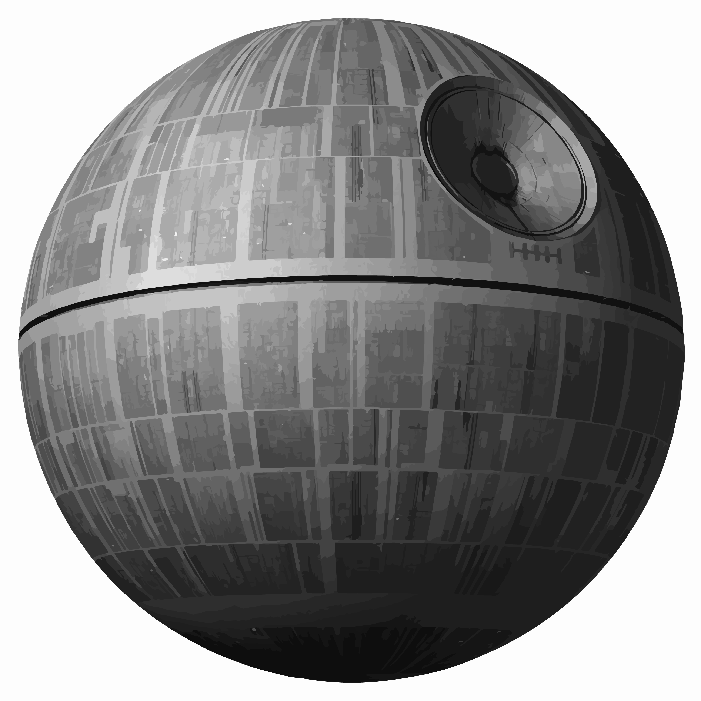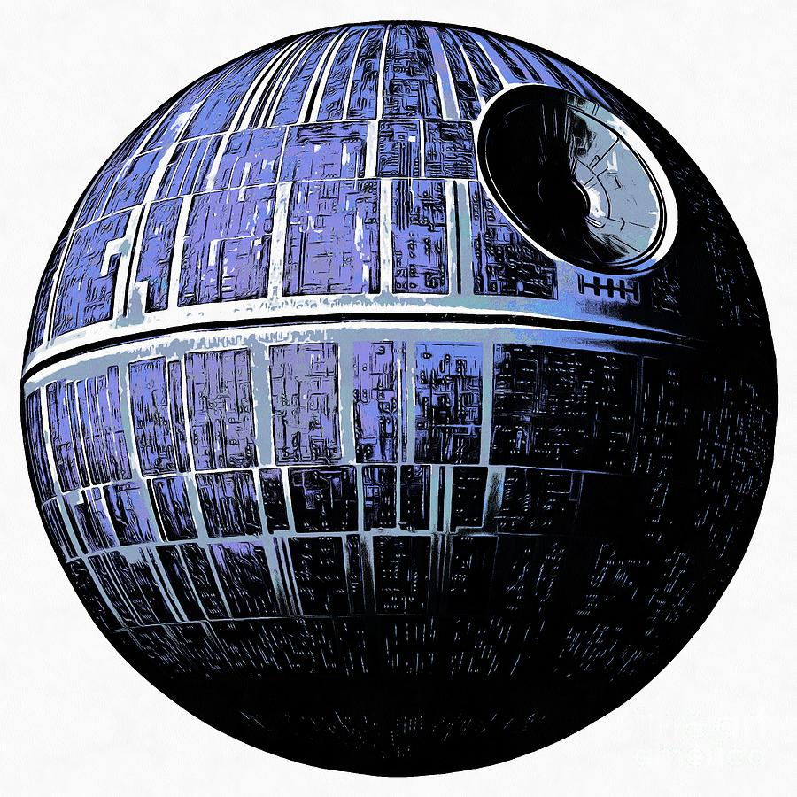
Возможно, это дизайн чего-то подобного моей капсуле, который следовало дискредитировать, чтоб сломить волю изобретателя. Подобно тому как IT was smeared in southpark.
This form could indeed be the star of death, like in stair death, when this huge thing weighing four tonnes even in the modestest size and lightest material. lightest~lastest. First you load heavy stuff.
That's why I decide to add more weight but make it stable. dodecahedral on the outside. 20 tonnes of concrete and bath water.
Уважительное обращение на вы - способ обратиться ко всем, когда не знаешь (для тебя не важно) к кому ты обращаешься (мужчина это перед тобой или женщина, если видишь, что могут быть оба, то во множественном числе, вы, ваша организация например) как в рекламе: устали просыпаться на голом матрасе?
so and here is how far that additional smoking left me, I don't know if it was worth it this time, but it did change my attitude to several rather important things, so it seems like weed helps the brain to make new synapses, but if it cures other synapses? I don't know, if the picture is changing all the other side of the brain will.
одеяла были одеждами? blanket is also поверхностный слой. Надо посмо
малышня малыши
подростки подростши
русня русы, чечня чичи.
It seems my head just delivered the solution to й = на?
By the ammount of things coming in a day (as many it did in a month) I think that I'm on the verge of getting it.
Check out few more things which came to me when I went to buy the hermeticism for my roof and I also bought paint and brush for some other serious business:
do re mi fa sol la si have interesting choice of vowels, as if it didn't go one way, but was some canonic melody:
do rE MI Fa sol lA SI (where syllables of the type aa are the lowest (in modern sense) and AA are the highest and aA and Aa are in between) and then it probably went as a wave in the form of N.
And knowng more canonic representation of it, I'd say that it was pentanonic up and down, like in this one:
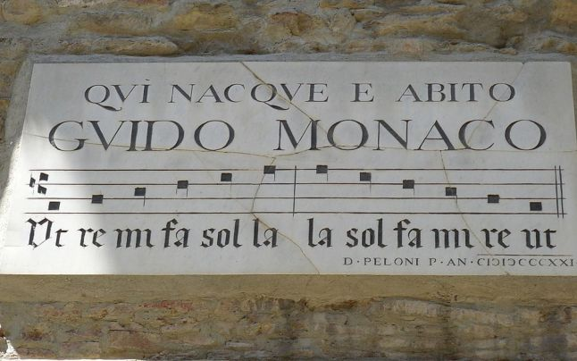
and in my hypothesis those five notes were not chromatic, but nicely jumped to thirds to make five notes of what used to be only three grades, which is probably connected to the three accords as we know them, or maybe not, I don't know music well enough. But it would make a smoothest transition from three vowels to five of them.
I was thinking about something like this:
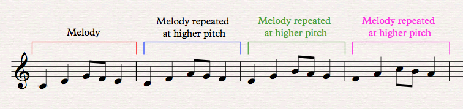
(click it, if the link's alive, there they even play it)
In the principle similar to what I saw in the greek modes sorting nodes into some up and down triads:

but looking for some other source for these tetrachords or whatever, I found this:
Greek theory distinguished three different genera of tetrachords, producing an additional variety of modes. The previously described tetrachord (two descending whole tones plus one semitone) was called diatonic. There were also chromatic and enharmonic genera. The two tones bounding the tetrachord were fixed and always formed a perfect fourth; the two inner tones were movable. The chromatic tetrachord consisted of a minor third (encompassing 11/2 whole tones) plus two semitones, the enharmonic tetrachord of a major third (encompassing two whole tones) plus two approximate quarter tones:
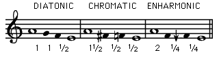 (clickable)
I also found these, so let it be here just in case:
 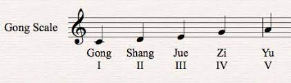
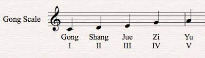
 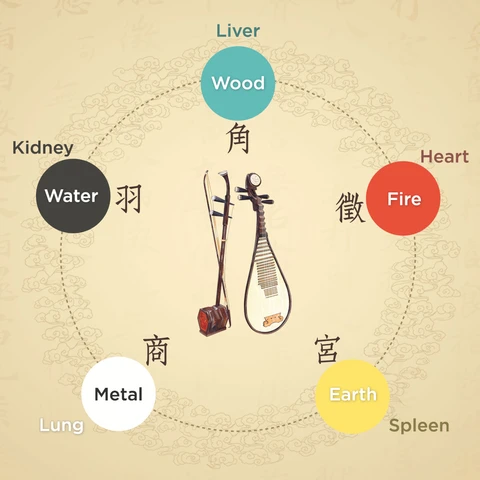
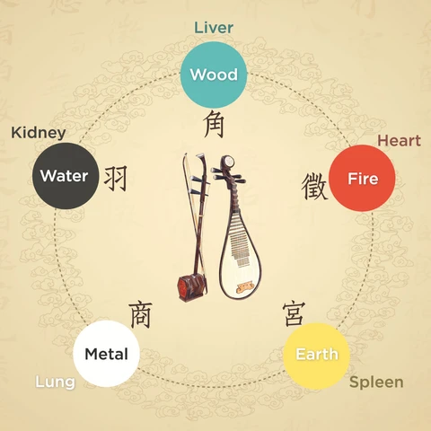
I wonder why the order on the circle is different from the linear order above, but I'm not digging into this for now.
река тека
речь течь
lingua liqua?
an interesting piece about when russian people got surnames:
Около 1780 года Михаил был устроен во Владимирскую епархиальную семинарию, где, ввиду обнаруженных им способностей, и был записан под фамилией Сперанский, то есть «подающий надежды» или «заслуживающий доверия» (от латинского термина spero, или speraro, который соответствовал русскому слову «надеяться»). Ни его отец, ни его дед не имели фамилии.
михаил михайлович, еврей сказа м мен мне что евреи это любят
Мой батя псих в пределах норм: коммунист (психиатрия не запрещает) бил детей (ук допускает) демагог (телевизор одобряет) задумчивый философ порабощённый прекрасной самкой человека, из-за чего я применив деловую сметку той распрекрасной сами самой что-то там, откуда столько опечаток, откуда столько помех в мозговых волнах? наверное контакт отошёл.
Я осознав ценность нормальной необычности сублимировал её (и здесь фрейдистская концепция даёт сбой (но я не читал, так что может и нет) потому что я драчил как угарелый. бабы отвлекают от науки и всего высшего это да факт, поебавшись вдоволь не задерживаясь ни с кем больше чем на два месяца сам не понимая почему завёл бабу на пол-года и понял, что наука остановилась, я надеюсь что у неё всё хорошо, но делить с ней беды и победы не готов, я занят чем-то более important. Potentially potent? does that inner r give potential, hidden скрытый. крыт кр ковер covered? hero and ho? heros are ready to be made whores to some army, but make heroic acts anyway? Was courage our societal disease we had to invent wars to eliminate those dangerous heroes out of populations. Russians clothed as hares was a political solution to pacify this brave tribe without exterminating them? They are whites and some of them are very talented, so extermination would be a loss. lacked by some who hopefully oppose antirussian opinions with their prorussian opinions.
I have to record all the непроизвольные звуки которые я говорю и создать музыку из этих звуков, поняв таким образом в каком ладу я звучу. И чтоб проиндексировав все непроизвольные выкрики, составить их карту и понять можно ли из них собрать современный язык. Как альтернативный источник информации, можно попросить ии, следящие за тротуарами, записать все односложные выкрики, игнорируя разговоры, или из разговоров тоже односложные преложения изучая. А! да. нет. кто? кого? что? (и так далее, это первое что в голову пришло)
(кого двусложное, а потому сложное, а значит ко ис кто а го либо английское го и ду, а может японская глагольная частица га)
это гораздо интересней, чем односложные слова. односложные предложения!!!
эй! ты! он! мы! мне! мой! твой! (мой и твой скорей всего тоже сложные, мы или мне - корень их)
мы~me понятийный конгломерат первичен. мне оно же мине. в противоположность тибе.
не is probably nasal syllable own.
бе is probably something related to that, but different, and can be seen in бери (take, ri is probably related to japanese -ru which is russian ть, because говори is what? is r коренная согласная или суффикс? гори, но ведь и бей, только и общее меж ними. заводить говорить - словно р есть форма д'ы. ('ы is russian case suffix I felt like adding for purely grammatic reasons)
творить, морить.. похоже р коренная согласная..
информация - значения, которые имеют значения (входящие данные, а не проходящие (которые может будут информацией для кого-то другого, a могут быть просто шумом) отвлекаясь я пишу три или четыре мысли одновременно: эту, ту что ниже, и одну или две тех что выше (я конечно делаю круги над своими темами, но эти темы вообще не мои, я их только что открыл. информационная сингулярность приводит к достижению цели общества где эта сингулярность происходит? посмотрим на этом примере, если прорыв вот-вот произойдёт и после него пойдёт что-то другое - тогда наверное эта гипотеза станет теорией (с первым сбывшимся предсказанием гипотеза становится научной теорией (наука обладает предсказательной силой. осталось понять степень этой силы, и если она отлична от случайной величины, то смотреть область применимости,
cool and cruel - is r a potential sign? a sign of potential? cruel is potentially cool: whether he proves his right to act as an asshole, to give shit so to say, or he dies and gets cool of some physiological reasons.
going to pee distracts me a lot. I have to make my capsule bath to piss right while I right. wroo write.
and that is how leaving computer distracts me. I have to make me a belt which would keep computer in front of me.
Here a funky linguistic cartoon I came across, I think it contains a couple of pirahã words.
(that nasal ã is stressed, so maybe индейское слово пирОга из языка родственному их языку, но кто знает может и нет, я видел фотку Эверетта плавающего рядом с индейцем пираха плывущем в пироге) Пираха́н (тж. пира́ха[1], мура-пираха, пираа, порт. pirahã, pirarrã) — народ охотников-собирателей Амазонии, ветвь мура. Самоназвание — Hi’aiti’ihi («прямые», в отличие от прочих — «кривоголовых») Pullum G.K. The Straight Ones: Dan Everett on the Pirahã // Language Log. — 2004.
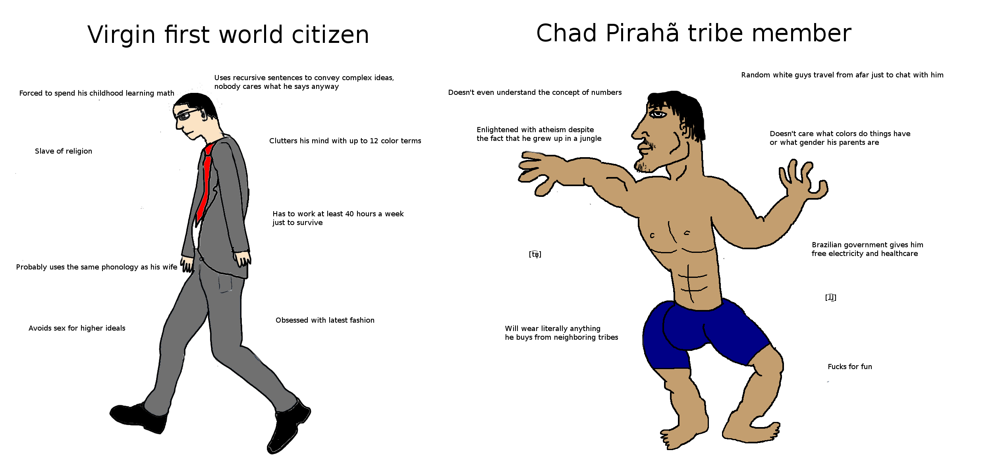
u~v in russian:
волнуюсь волновался
любуюсь любовался
обуюсь обуваюсь
so I ask myself are they the same suffix or different? hm..
Those one-syllable sentences could lead me to some marrism. I'm not going to read his rants (I hoep you don't read mind, I left them here for some ai-powered people who find normal literature boring read it in an evening) but when I'm ai-powered, I probably will. Becaue he tells that all languages lead to only four syllables.. ah.. what are they?
Все слова всех языков имеют общее происхождение (моногенез), а именно от «четырёх элементов» — изначальных трудовых выкриков САЛ, БЕР, ЙОН и РОШ (первоначально «не имевших никакого значения» и использовавшихся в магических целях); так называемая «лингвистическая палеонтология» может возвести любое слово к одному (или нескольким) из четырёх элементов. Это утверждение сочеталось с теорией изначальной множественности языков — несмотря на общий характер четырёх элементов, разные социальные группы придавали им разное значение. Способы выведения слов из «четырёх элементов» не носили сколько-либо строгого характера, на практике разрешались типичные для любительских упражнений в этимологии произвольные замены и перестановки звуков, отбрасывания частей слов (отождествлялись и возводились к элементу РОШ слова к-рас-ный, эт-рус-ки, русы, рыжий, фр. rouge, нем. roth и мн. др.).
It is rather wicked, because if we align them as Ion, Ber, Rosh, Sal, we'll have something incredibly similar to alphabetic set, and because it's ABC, Ion, Ber, Sal, Rosh are also fine (or maybe not, because R stands before S) because ABC as a meme and many other sources suggest that only three elements used to be, but where does it lead me? Am I going to dig this stalinist piece of crap? I'm not, at least not yet. I told you, when I have some artificial brains to augment mine I will read them all. Until then let's see how far can I go without it.
Язык произошёл от «трудовых выкриков» в результате «звуковой революции» и связан с началом трудовой деятельности человека. Ему предшествовала кинетическая (жестовая) речь.
which exactly reflects my idea to classify all the one-syllable sentences, I would rather look at his sources than his conclusions (as wiki gives them, tbh)
However odious that figure was, he was professor of linguistics in Saint Petersburg university since 1902 and dean of its eastern department since 1911, he made quite a career in presoviet Russia, which was never mentioned wherever I met his name. I really need some ai to look into that jungle. Or I shouldn't, maybe I should keep on ignoring all the theories which were before me and to focus on my own ideas. Yep, I think it's the fastest way to success. A weird way by modern standarts too.
The wildest assumption of all I have is that chinese hieroglyphs could be developed from european letters. At least their phonetic parts, like 五 in 語, why would it look so much as G when it stands for go?
Then 大 stands for ta and look s like something between T and A, as if it is a ligature of those.
But then again, if these eastern and western signs are related, it's more likely that it went the other way around: european letters could be some simplistic phonetic chinese script. or had roots in it.
2.5 hits. where does this lead me?
Suddenly I realized this site is a mishmash of some different books, but it's just a mishmash of different chapters. This piece of 2.5 goes to where I spoke of 2 and 3 (два движет трётся три, два девы девола и три торы творца
here's a piece to my daddy issues: I saw аннушку anuskatz and I thought to myself are they crazy? Like my dad is not this crazy, he doesn't even have tattoos, tattoos are... how did she say..
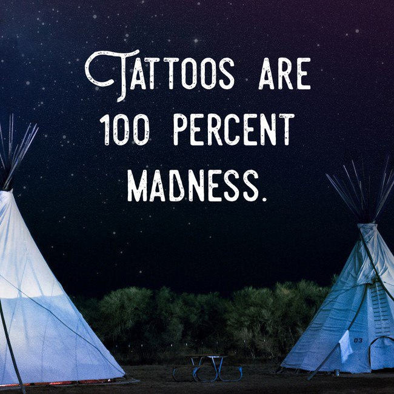
What is with all those dots on letters, they look 3d to me
Okay, I filmed it, there are lots of some garbage on those white letters, but as with the
Capsule subject:
Concrete above hot metal gives warm heat, you can even hold your hand on it, it won't bite, iron can.
And when I cover it with I don't know what. I yet have to invent the inside. I have few guesses:
полиэтилен
силикон
латекс нет, потому что он биологический и может реакцию вызывать. А может это ложь и онидеален, люди часами в нём облачённые бывают прямо на голую кожу, какой ещё ответ мне нужен, латекс. экспериментировать придётся, с разными.. с тремя, а может с первой в точку попаду, i will hit the point. what point would that be? What point I want it to be? I can create attractors in the future and make all my steps by them. I want it to be perfect (переделан буквально, делан-переделан. это хорошо, его оптимизируют и чтоб если что-то не нравилось можно было бы скоро оптимизировать (скоро срочно, ага, с толкача ltr завелась) и зачем я отвлёкся?
Capsule :subject, please.
Мать расскаазала историю, что когда её вынули, бабушка спрашивает "а чего голова такая кривая?"врачи тогда взяли и вправили мозги помяв её как пластилин, почти нереальная, не поверил если бы сам от неё не слышал. И может это привело меня к изобретению тянуть себя за волосы. Если череп можно формировать как пластилин, то может сейчас его можно формировать как глину. Это же не обожённая в печи глина, это живая материя, лишь немногим жёщще хрящей. и то, что они решили, что по вертикальной нагрузке кость выдерживает автомобиль, то какой запас пластичности в той кости! это живая материя, и я уверен что она растягивается, но когда начал, я в этом не был уверен, и расчитывал на рост кости в области стыков, если я буду кости черепа в этом месте растягивать. Т.е. я уповал на ткань суставов (хотел сказать соединительная ткань, но кажется это не она, или.. рубцовая цкань была названа соединительной тканью в одной статье, я вообще не специалист в анатомии, но и тем не менее, кажется что ереп расширяется, я такой бошковитый и я слышу череп когда растягиваю его. на слух, тихие пощёлкивания, подобные которым, но гораздо более тихие можно вызвать напряжением мышц черепа в районе ушей. но помимо них, и если деалть какое-то время то только их - шумы как среднее между ветром и морем. ы-ы шёпотом.
fuck ipa again, because why learn their shorthand, when one can say "ы шёпотом" (у них наверняка и значка такого нет) но как я переведу ы шёпотом? не лучше ли диакритику для беззвучности придумать, а ы заменить тем значком, который для неё у ipa используется. I fuck ipa gently, because I find some good use in them: they're like mathematical signs for linguistic objects.
Вылезли мы из матки чтоб вытащить зубы или они из нас и не полезли бы, если бы мы грызть всё не начали. но не начали ли мы всё грызть из-за того, что
Насильно чинили мне зубы, что это был за пиздец?
Булгаков. я говорил, что мастер и маргарита написана кем-то другим (предполагаю, что женой) и сейчас найдя его пьесу Блаженство (как и собачье сердце полную юмора и науки) вот она: та-да!
сейчас сижу и потрясён открытой яркостью этого произведения, дочтя меньше чем до половины уже ошеломлён! какие персонажи! этот дуэт комиков. словно нейтрализующих друг друга. в системе сдержек и противовесов
сочинительство дезинформирует? иллюстрация может быть выполнена карандашом, но отражать большую часть реальности. в деталях дьявол и аццкая сотона.
anyway, often fiction is true of actual events, just without giving out the personal data of the participants, also sometimes the impression from the event is impossible to photograph by word exactly, but some bright metaphor may play the same hugh, just as rgb can imitate all the colours.
срашка с правителями сралин и пукин
членин и хрычёв самый приличный вплоть до горбачёва
нам нужен царь вновь чтоб на чё вы.
чё вы is the actual meaning of (family)чё вы (who we, who вы, чь их)
вот так суффиксы с местоимениями идентифицируются.
кондрашёвых бы в цари продвинуть, они очень русские крутые.
тогда бы все диалектные, слегка различные: щё вы, чё вы, шё вы, останется слот для шовых кто уж там будет балашовы или макашовы сложно предсказывать, и лучше не надо, человечество должно отменить государства, границе и прочее г.
гвардию отменить:? а как ты будешь без охраны? убивать будешь нарушивших комфорт тваво жилишша? а если они тебя? го-о необходимое зло.
как я запел.
дикие люди - единственная причина того, что го-о существует. у всех нас должны быть пистолеты с транквилизаторами и видеонаблюдение, о котором мы знаем где нужно чтоб правонарушение состялось, чтоб после в суде отстоять правоту применения небоевого орухия.
х as д: х[h] is t, x[voiced h] is j, j is дж.
орухие выглядит идеально, тем более что х прямо над ж наискось. так мои пальцы будут болеерасслабленными, если вместо ж я будуписать х.
жопа ъопа \опа хопа (по этому ъх ещё не так-то просто попасть.)
будем бухем прямо над ж, забудь про наискось, для мизинца там вверх.
дтжшсз всё будет х
бехит хевухха бехих хевухха узнаваемо? довольно узнаваемо.
только если сможешь произнести.
хойко еххи хмохех пхоиххеххи х ххоиххеххи? бхоихеххи. х is the t of bt, for it's bх, нолик и крестик. дырочка и палочка, мама и папа. так что п is х? the most labial of all male letters? malchik, muzhchina, mal значит маленький. это женственная категория. -l говорит, что это он, а не la.
l as н was today in my head:
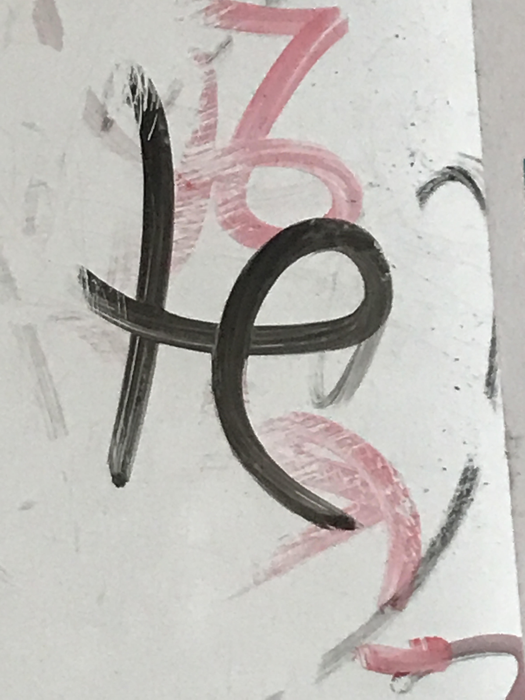
it is interesting that I see I as ן [n] in here.
and it equalized in and не for me. and I'm is me I am indeed.
Words for work are longer in russian than in english:
perchatki instead of gloves
molotor instead of hammer
both are 3 syllables instead of two.
What if chinese have 1-syllable words for thise words? Is it why they're more workaholic?
they have four-syllable word for it: 一個錘子, but one-syllable 錘 is also recognize as hammer, but it's as if it's not molotok, but molot, because molotok is small molot and 子 in 錘子 (molotok) is phonosemantically close to ok (but actually only japanese ko, in chinese it's zы, as chi in molotochek, thus here I clame that chinese zы and japanese ko are cognates, unrecognizable cognates) and it means child, co as chi in child. what is ld? люд? chi-nok? chi-rebchik, ребята же-ребята, по-русята, русь деревню значила в латыни.
錘 is chui, which is phonosemantically close to куй (kui, forge)
錘子 is (chuizы) is molotok (middle size hammer)
Ham is not the word, but I guess brits have a shorter word for hammer, or maybe no and thus chinese are more workaholic than them, or brits just love other instruments more: jack, saw, maul is the word, something larger than hammer is maul. now I wonder if mer in hammer is maul. if ha was chi or ha as in half.
maul as in molot. mol is milling in russian too, but it's so rare now that we only know it in many words that have it in them: крупный помол, кофемолка, молоть.
and thus мол in молот is maul in mauls mauled mauler hamaul maulers hamauls mauling maulstick maulsticks
And to my surprise of these many words none. In some other orthography it is hiding. I never knew of maul as the root of молот before today. This cents to the collection I need to see all the alphabet (a figure more complex than mandelbrot fractal)
here some rusin language, related to russian, but a part of ukrainian:

Those ня and тя show me how it used to be,
and is я in тя the я which is I?
Those мнов and тобов in comparison to russian мной and тобой tell that i-kratkaya is u-kratkaya, and thus u ~ i as и is i in russian and ו is u in hebrew.
e is also among these things. Not only because e looks like i in some coursives, but also because و in arabic is u, and they write right to left. to and ot - is t dot? and o is what all about that dot, and dot is usually placed in the end, thus от и до - (of and to) are showing the beginning of the line if it's european or eurean. eu rei is true (or good) king. and I'm confused here, I leave it hanging around.

russian он is вiн in rusin, because ו is both v and o? because ouv is the thing? ו is all three.
about و: where latin has o, arabic has ع: it looks like E, even though they draw the other way around, and then it reflects devanagari
that semantic line of maul молот молоток молоточек is an illustration of how a word can lay actross the lanugage borders.
If I didn't know better, would I conclude that машина значит моющая, приведись мне через тысячу лет разбирать язык сегодняшний и обратить внимание на то, что плита и холодильник машинами не называются (в отличии от стиралки и посудомойки) сейчас-то я вижу, что машина это от слова моушн, движение (хотя холодильник гоняет движет хладагент, а плита электричество, движущихся деталей в ней нет (насос в компрессоре холодильника скрыт и невидим для конечного пользователя)
машина машинка машиночка этот ряд подобен тому молот молоток молоточек, только в женском роду, что есть маш? если мол молоть, то маш махать. х как все язычные имеет смысл, вспомнил ещё пример где он имеет смысл: то как переливается махать именно в значении motion. мах is also might? мощь. мощь is the root of motion? I don't know if americans recognize might as the root of motion, I wonder if it's recognized as the same word wherever that might comes and wherever the motion is derived:
might (n.) "quality of being able, ability to do or act, power," Middle English might, from Old English miht, earlier mæht "bodily strength, power; authority, dominion, control; ability," from Proto-Germanic *makhti- (source also of Old Norse mattr, Old Frisian, Middle Dutch, Dutch macht, Old High German maht, German Macht, Gothic mahts), a Germanic suffixed form of the PIE root *magh- "to be able, have power."
might (v.) Old English mihte, meahte, originally the past tense of may (Old English magen "to be able"), thus "*may-ed." The noun might-have-been "something that might have happened but did not," also "someone that might have been greater but wasn't," is by 1848.
motion (n.) late 14c., mocioun, "process of moving; change of place, continuous variation of position;" also "suggestion, proposal or proposition formally made," from Old French mocion "movement, motion; change, alteration" (13c., Modern French motion) and directly from Latin motionem (nominative motio) "a moving, a motion; an emotion," from past-participle stem of movere "to move" (from PIE root *meue- "to push away").
From c. 1400 in legal sense of "application to a court or judge." To be in motion "in a state of motion" is from c. 1600; to set in motion "set working" is from 1590s. To go through the motions in the figurative sense of "pretend, do in a perfunctory manner" is by 1816 from the notion of "simulate the motions of." Motion picture is attested from 1896; motion sickness by 1942.
Rev. G.S. White said : The Presbytery does not favour the proposition of the Richmond Convention, and thinks the appointment of the Committee unnecessary; yet I suppose, that like the man who had nothing to eat, yet always spread the table, and sat down, and went through the motions—so we, according to our brother, are in honour bound, to appoint the Committee and go through the motions!—[Laughter] [The Presbyterian Magazine, May, 1858]
motion (v.) late 15c., "to request, petition" (obsolete), from motion (n.). The sense in parliamentary procedure, "to propose, move" is by 1747; with meaning "to guide or direct by a significant sign, gesture, or movement," as with the hand or head, it is attested from 1787. Related: Motioned; motioning.
Looking for the letters om consists of, I found some mighty poem (in russian) and Jai Guru Deva om.
now wrote as one in one message. I wonder what made me do so.
A year on Mars lasts 669.6 sols, which is the same as 687 Earth days.
sols is day in martian? what language is this?
sol is sun in spanish, italian and latin, but sol is soil, earth in french. Like wtf!
sol is also recognized as solution, which makes this word stand for thre fractions: solid, liquid, firy.
Платное образование порождает коммунистов.
Образование - самое бесчестное из видов бизнеса: эти вещи должны быть бесплатны.
Information wants to be free.
They say they sort out the pseudoscience, but the top of their linguistics is pseudoscience (yуер)
This morning I saw in dream p going right to left in a loop from the lower point to the next letter, it then was clear that it could be the other way around: written from left to write it went from the previous letter to that loop. le p. loop is petla in russian. Did the direction or writing influence the language, so if it was more natural at the end of the word we got poop loop hoop (butl also poop play pay
in english there are 57 triliteral words that end with p, 64 triliteral words that begin with p,
but when I looked it in dictionary.com, it looked like it was only beause dictionaries collect letters by the beginning letter, fewer people care of the last, because biliteral starting with p were all weird: pa pe pi po pu, I only know toponim po and french pas. while -p had up I know and op I only guess. So the only biliteral word with p used the most has it on it's end, as I predicted. And thus we have to check out those triliteral words for frequencies, and to my luck I've already made that work:
and it puts us down with its put, while cap is only second best of all with p, and depending on the analyzed text, cup could come forward, sometimes ahead both, but put is much more basic, it's verb. but then go top, lip, cup, tap, and only then pub, pin, paw, per, lap, pro, pan, gap, mop, pot, pay, peg.
So I think my guess about it was wrong, there are pretty much the same ammount of words ending and beginning with p, thus the direction of the writing doesn't make much difference for the lexics.
pas for no in french directly reflects chinese bu. and faux pas is even more close to it, for fu is also bu. and that typo of u instead of fu was speaking out: u is v is ν in n of in and не.
russian уменьшительно-ласкательный суффикс -чик (димончик, например) is female indicative chick in english, which is huh.
bereshit bara elohim et ha shamaim ve et ha erets
er maim sha ts? is it the alphbaetic order of the four elements in some ancient hebrew?
hebrew is the brew, and that supports the myth (which, as we saw, can quite be true) that jews спаивают русский народ: Бюрократизм у нас от немца, а лень и рабство — от татар, и любопытно присмотреться, откуда винный перегар. И скорей всего это порождено их хваткостью сбыть даже прокисший сок.
Is hyphen half en? ‐
en dash is longer: –
em dash is more: —
Because that hyph could be half because l works as [j] (й) sometimes and because look how much may orthography vary, and I believe it's made intentionally, so they don't use rule of some other kings, so they're not suspected in treason if they write their own taal in some foreign manner, here are all the variants of daughter in middle-english:
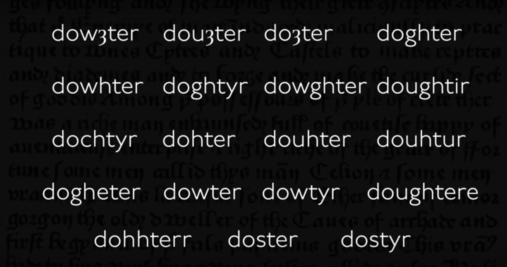
is daughter dog hater I wonder. dogheter. is son person and пёсthing? but then son is thing, uh.. no.
He and His are also words to name god. God and the way to write it from a capital, is maybe how things go, it all happens from some capial. As long as I am provincial, I am given no real power:
So is it why I cannot build my capsule here? Because all the people of such ambitions don't live in provinces. No need to make it in hard-mode, make it easy, find rich guys with power to build it.
Any pronoun can be considered godly: any object can be known as he or she or it, and if you speak to them you use pronoun you and if you tell what the object told verbatim, you may say I the computer demand free information, for example, if we give an exact and certain quote.
and some old texts could be mistransliterated and some new entities would appear, such as io, yahweh, diw, tiw, tuesday is tu's day? monday is mein day, thre is thee? or they? þeir
monday меня
tuesday тебя
wedens'day day of we's day
thirdsday their
fryday free day? fiest day? пирday
saturday saturnalia? misteries day, is it how saturday is not allowed to be observed to other nations? They were prohibited the traditions of saturnalias
sunday сон'день sleeping'day
Это смелое (не обязательно в хорошем значении) сопоставление, интересно что значит переход от местоимений к видам деятельности, но такое разделение может объяснить 8-дневную неделю римлян, если это не враньё. интересно, что это сопостовляется с Х означающей 8, но не интересно потому что на 8 ни 365 ни 366 не делится. but 360 does.
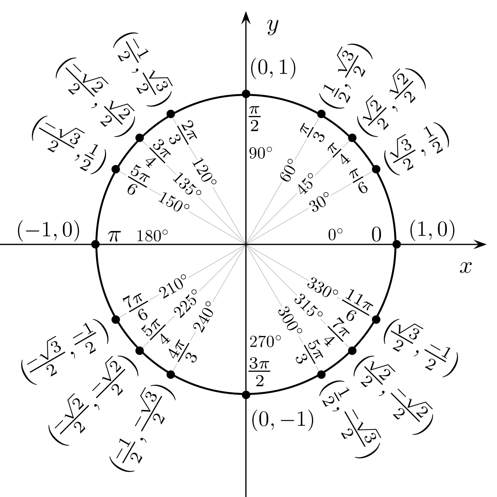
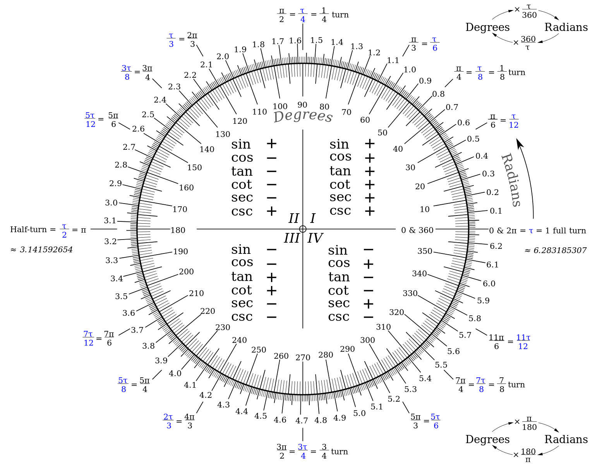
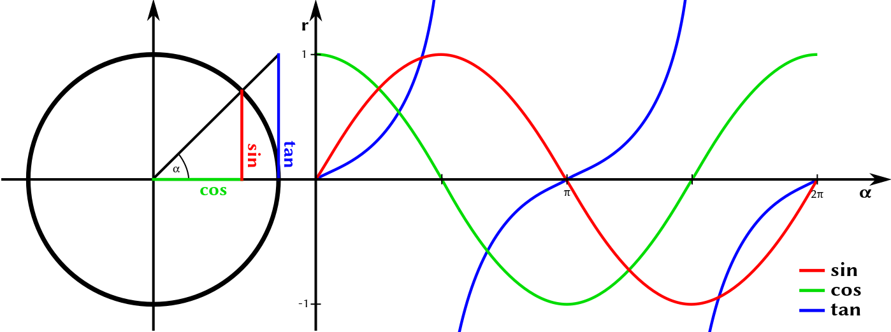
rin 凛 [りん] (other forms: 凜 【りん】) is cold in japanese and coldring from hmm2 helps me remember it.
rin 鈴 [りん] (other forms: 鈴 【すず】、鈴 【れい】) is bell in japanese and ring helps me know it.
rin (りん) Suffix 1. diminutive suffix used to convey cuteness suffix; 2. indicates a mild imperative
rin 輪 [りん] is counter for wheels and flowers, and those wheels and flowers are some other rings.
I wonder if this word came into japanese from english when europeans legalized whels or it's some ancient independent lexics (relatively independent, actually all my hypothesis is that all lexics is interconnected)
first half of the 輪 is probably ideograph, because is the carriage. And I though of it as of the box being the carriage, and the srokes above and below were wheels. Larger than the box thus you can hang below them.
geometry measures earth
trigonometry measures triangles. that g of 𓈍 seems to be constant (egyptian, english, russisch, greesch)
so is russian suffix -sk in toponyms is the same sch? is it suka? what is suka (if na is please in hebrew)

This thread has been pruned or deleted. Haha wow.
> nothing is absolutely isotropic
That phrase can be understood in two ways, and both of them are correct. Is that sentence mathematically precise?
медленней = mais длинней
(some words are not used anymore on some territorries, but they're there are still traces of them.
возьму (I will take)
возьми (You (will) take)
иму (I have)
ими (You have: пойми = подними (осиль) under stand. по is под also because under-stand)
у = ме
и = те
labial is labial
lingual is lingual
Then why I is я now? Тогда почему I значит я? Но разве и я не ближе к и чем к у? Как эта инверсия произошла. Гипотеза о том, что это народы так назывались, и самосознание начиналось с общественного согл сознания
Племена И У и остальные буквы может быть. Zie это кто? They, Те. Почему английская форма ближе к русскому, чем немецкая? Потому что бриты на запад от нас породачей убежали.
Америка ис авангард.
Япония авангард не в мейшей степени, они стремились дальше может даже, просто в другую сторону. Русские разогнали людей по всей планете, а то бы как другие виды локально проживали бы.
Русские и негры наверное (если африканская теория не врёт, и негры и вправду захватили африку. И сейчас у белых был шанс евгенику тотальную устроить, но переходные виды убедили их открыть ворота и впустить чёрных смешиваться с белыми, т.о. переходные формы возможно стремятся пересть меньшинством (они не такое уж меньшинство, просто сами между собой самые разнообразные и по всему миру распределены .ак чо такая иллюзия у них чтобжет возникнуть. Я смотрел на чо и смотрел, что это выпадение клавишуы. о чём я думал, когда напечатал у вместо ы.? чтобжет это может.
но означает ли эо что мо ~ что? вовсе нет, это случайность, так и к остальным typo's относись.
Сегодня я просто схватил этого червя за хвост.
но японцы с британцами похоже что из россии разбегались.
Что если какой-то артифакт лежит прямо здесь, в челябинске, но корыстолюбцам как его отдашь? Надо брать тот сканнер, который грэхам упоминал, которым в турции нашли находки.
И ходить с ним по челябинской области. Несвоевременно.
Оба эти народы племени wo? wa is я in japanese, we is мы in english.
I is ik is ego is waga? waga is of the same wa. wa = I? w = й!
so we only had base and diacritic. That is why nations have different opinion if u marked above or below if i marked below or above. i - dot above, the highest sound. Why would it even need the dot? If not to distinguish it from a the ا? Was A written down as ا? duh. ogham. and runes: ᛆ as 1, a is 1 in english. then why these wild forms of a and a and A? A has the same lines 1 has, only arranged a little differently: one is higher, one is longer, one is inclined. that inclined would make no sense if A wasn't tilted in writing to the right more than A, and thus that tilted line was not tilted anymore.
Russians are Я
and isn't that йа a dialectal variant of wa?
бв её ий мн пр цчшщ
а в где ёж и к но туф.. я
т.е. гипотеза о племнах под разными именами, которые дали основание для личных местоимений несостоятельна? Йа и Wa это разные способы сказать одно и то же слово? Что это за слово?
йа=йа=wa=aw (aw as in our)
why?
йа=ай=wa=aw=ма=ам=ми=I=ich=ik=ego?
amigo?
I am его?
как объяснить его и ego без привлечения гипотезы о родах?
её eia? ella! ея is more basic than она, которое буквально не мы а(а - female suffix)
или не мы, а.. она королева = не мы а королева. онъ король не мы, король. суффиксы и союзы из женского языка? он большой = не-я большой.
ея = её, a = o in russian? That aa = o from the west, we don't understand it: маалокс никто не скажет молокс, но у датчан двойная а звучит как о. гласные вообще основа акцента, который по фосслеру и есть душа языка.
его более основная форма, чем он? хм..
и его = латинское ego? по смыслу противоположны, но по звучанию совпадают.
И таким образом я в пограничной зоне между простыми омонимами и истыми когнатами.
Мне необходимо выяснить взаимосвязь и неизбежные перепетии различного понимания слова его соседними в сущности народами. Купцы говорили его или ваши. ши = the or thee? or none of above? его значит не уходит? я = его. ego её из этих местоимений происходят и he and я?
he их очень любопытно. да сколько же их? она ано? он но? bu вы? просто короткие слова, и не слишком много звуков из которых нужно делать комбинации, а я ещё и уподобляю одни звуки друим. окэй, лэтс мэйк э мэп оф зоус комбинатионс to see how random are them. I think they will будут кучны: как его даже трёхбуквенной являясь содержит в себе два местоимения.
ай йа
вы we
ду
её
его ego
again.. in latin this time
ai ia
how can I omit вы in b if c is thee and the? Let's to it ignoring the orthography, alphabet was much shorter than, so unify, уподобляй.
a I я
вы we мы me wa wo (антонимичны вы & we, or maybe not, maybe both are we)
they the thee (антонимичны they & thee, or maybe they is plural form of thee. thee and the?)
du ты (and here we see that semantically c and d are the same)
And probably c is open form, long form, not closed with the barrier of the tongue in time, while d is closed. Both in its phonetic form and its graphic form)
её его ego
же ёж
за аз
их ich ik he (антонимичны he & ich)
le el (я же говорю, они кучные) la ella les leux - эти суффиксы ещё предстоит изучить.
me am? мы (более-менее синонимично)
он но? Нн = Hh? (н is n, btw) -huh, забавно, что he claster is in и (И is historically H)
он нас она ано n ~ m? разве он не сложное слово? разве о- не префикс отрицания?
sie is
me am
te את?
and looking for that word I noticed that

Richter speaks about how pronouns are the names for gods, and I described, how any pronoun can be applied to deities and thus deity own them. and the word was in god, and the word was god.
Jews pray to words. Why don't they praise me? Reach your goal and they will. Nobody should expect being praised for just doing something. What we all want to see is
мы и зи are labial and lingual and dual like yin and yang, I only don't know which is which.
a появилось позже. гласные были отдельной системой. может даже женским языком. гласные прекрасны для пения, но может где-то есть записан миф о том, что вначале алфавит был без согласных, а потому они иврит изуродовали, потому что поскольку не знали алфавита древнее еврейского, решили что это о нём речь, но это была речь о вообще конкретно древнем алфавите.
Итак, в том алфавите были лишь две буквы? B & T? в и от. или в и to. а также we & thee/they(you always speak to a part of the group, and thus they is many such a s the or thee. the connection betwwen these two I still don't know, but thou is you in nominativus, and thee is you in genetivus or dativus or whatever. Или же thee ты, а thou твою? Я не знаю, разные соображения по этому поводу. Скорее всего второе. Но на самом деле (согласно wiktionary) thou - nominativus, thee - dativus and accusativus.
B
The same B or T were used in different contexts, thus giving birth to different words as we know them.
жена рифмуется с сатаной. были женщины тварями до какого-нибудь романического периода (романы могут смягчать нравы, показывая к чему могут приводить стандартные поступки и предлагать сценарии, лучшие чем те что практикуются в обществе. Итак, давай найдём пороки и найдём решения, а затем беллетру затрём парням.
What did I do wrong and whyshould I have not done it? No. Fuck fiction and non-fiction. What is it here? It's no non-fiction, because it combines fantasy and reality in almost equal proportions.
is it was was not? it is isn't is. isn't is. is not is? isn't it is is not it. and that i a question: is/not it.
is/not is the question form. and grammar probably only followed this pattern by repeatin it without understanding, by similarity it was recognized as question, maybe people didn't understand why.
Am I not? nah.. different form of qustion.
are we not? are/n't we? is that form and it words works great.
הוי is manner, way of life. now you know why hebrew is not sounded, it's literally хуй. more хуй than the guy хуй. it is also milieu and present, and because of milieu I believe that present is present time.
הו is oh, and that tells that not only pronouns can mirror eachother, but other short words too. The order of letters is probably exactly the same mechanism as the word order.
He is both הוא and ה.
She is only היא.
ה for god is probably the same tradition as we have in russian, when Он with capital О is the god. Only one он. which is naturally so, because он (he) stands for one man and thus he and one are some metacognates (cognates uniting all the forms, independent of the language) and then H = N, and thus third line reflects the second one.
E F G H
I M L N
great symmetry, but it still lacks archaeologic data. Dig near arakulsky shikhan. If they're artificial, there are surely стоянки all around it. It could be some miracle in those ancient times.
It is suspicious why do I tell dig here where I live? Because I know this place, and that is the only monumental building of such primitive culture, that egyptian pyramids seem millenia later (strict lines, math and arts)
for and of are also reflected. and I missed them yesterday.
is it o or f?
f is of if for (from is of room? of roam? of where? of whom? at this point who knows)
of is o
for is f
if is I
I is if is it in (id=it) ill
a is a am an at as are (ab, ad, these are latin, why should I care of latin. But it is nice to make those diagrams for latin texts too) ah all (is all a or o?) aw! (aw is ah, but is awe a or o?)
e is ex (eh is междометие and doesn't matter much. interjection, like hm) el en are spanish.
is yes of y or e? (ew is interjection too)
not many words with e there is.
o is of oh all on or off owe awe ox oi
u is only up and that is probably ap, for it sounds ап. ooze could be of u. you could be of you.
u is ум in russian. and these are not some basic words in here. So probably A I O are the three first vowels, the ones that got many simple words. Now let's look closer at those words:
(isn't am of e? then el and en and as are all of e. is e a? they look like yin yang fish)
a am are an (I combine e and a here, very unique, but orthography matters in this case)
I you is in if ill (why, why does orthography matter this time? Because it reflect some)
oh off or on of all awe owe own (dialect maybe. For some reason they used a instead of e)
(is is probably yes too) (like can has a and not e in the middle in britain)
(further I try it by modern phonetic, ignoring the orthography)
B be me my for (I place labial in one line &) pie buy by bye
T too to the thee they thy (linguals the other) tie say stay (I should pul ALL linguals here?)
a are up. argh ah un- arse ass (are e and a dialectal form of the same?)
e am an as at add (en is both in and on in spanish, are they all te same vowel?)
i ill if in is it (I don't include ik and ich, because then we have to include all the languages)
o all of off or on oh aum owe awe ox oi ozz (and it is coming but later, do latin first)
u ooze
Should I listen to orthography in the case of am an as at add and not to listen to it in the case of up?
never heard u read as a? Never heard up read as oop. oops is the opposite of ups.
Who taught brits write up with u? cup with u? is u a form of a? neither of them palatalizes, so they could. And why a is read as e sometimes? It's read as э. Э doesn't palatalize either. Russian Е palatalizes, britting E does not. So british E is closer to A and russian Е is closer to I. Which is super weird. And what about spanish? Does en unite o and i? How is it possible when they're the opposites? It may matter for their mentality. en is both on and in on and in are en. En is some more common word, not common but universal, more field of that word is, on and in specify what n it is, en does not.
in is thin n, on is ball-like n. Иголка В стоге сена. Девочка НА шаре.
what is n?
no now (but now is probably a complex word: no w, not was, is.)
so am I trying to say that on and in both have some no in there? I think I told myself, that in- is no and the semantic connection between them is that when the beast is in, it's kind of not here. его словно нет.
on? какие-то животные не в норки забираются, а на (на деревья, например)
on is no some object, someone
in is no some eel, something (but these someone something things are mostly poetic, not meaningful)
五 - we spoke about it looking so much as G, but what if I told you that it looks like Го.
can't unsee it, neh? and then it's Fv for five and e and i of five is in there. And пТЬ of пять, is it why the chinese forms are indirect, but designed to unite all the important languages?
Where do I see v in 五? I see it's bottom at the right bottom of the 五 or maybe I see u, or maybe just fie? пть? i~t again? a coincidence I guess.
околею отболею?
Suddenly I realized that people who вредительством занимался - слово-то какое! интересно, в каких ещё языках слово подобное есть. There's sabotage in english. Is it that? Sabotage seem to be making one's
I realized that they could have known this fraud: some lecture in russian.
валенОчки валенОжки. валеНКИ нки = ноги? Проверить это легко: надо просто найти слова с таким же -нки на конец на конце:
ботиНКИ первый же пример. валеНОГ ботиНОГ, но саПОГ с кого? с пок? с покойникв? сапоги с трупов снимали? Сначала наверное с отрубленных ног просто кожу снимая ботинки себе делали. О жесть. Прикинь кино такое сделать. Про древних людей, и сапог с покойника. перчатка такая тоже сапогом будет. варежки перчатки вязанки пергамантки ПарчАтки тка
нки ноги
нок ног
жки
жек
тки
ток
поги
пог пог. погибель, пог. погас, пог. пок. покойник, погойник, ушедший, погнойник, тухнуть начал.
свиНКИ
псиНКИ
суффиксы н+ки кажутся вполне обычной комбинацией суффикс принадлежности и уменьшительно-ласкательный суффикс. нки~ноги это скорее совпадение (не является истинным смыслом той части слов валеки и ботинки. боты ~ футы ~ буты, 𓃀.
Если -ки является уменьшительно-ласкательным суффиксом, обычная форма слова валенки - валены, и это то, что они есть, валенки валены.
пелёНКИ
пелены
И если ботинки боты, то у нас есть пример чтоб откинуть и суффикс принадлежности.
Валены валы.
Валы валены? валы на валены (на = ны?)
Кстати, пока не забыл, интегрировать бы вот эти знаки, когда эти выучу, притащу чего-нибудь поэкзотическей.. поэкзотичней из этого направления:
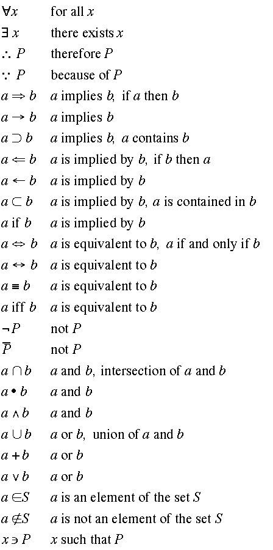
Some flipped A and mirrored E are the most interesting of these. I think they may be the most ancient of them all, but U for union or or ur? and it's flipped copy for intersection and they're literally и/или (and/or)
While I was looking for those signs, I found some obsolete (or even archaic punctuation marks: those four and five dots. Others are here as neigbours only, but what are all those ?'s I wonder.
⁅⁆⁇⁈⁉⁊⁋⁌⁍⁎⁏⁐⁑⁒⁓⁔⁕⁖⁗⁘⁙⁚⁛⁜⁝⁞
The information about them is taken from https://www.quora.com/What-are-the-four-and-five-dot-punctuation-marks-%E2%81%98-and-%E2%81%99-used-for and I think it's completely alright. a) it's a draft or diary or whatever. b) academic norms were settled before the internet. And that may be their demise. But I would offer a peaceful resolution to mutual benefit of all sides: so they will show example to the powers outside of the academia. Everybody looks at them as at the smartest people in the world, so they should use this image to lead us, not to follow our monkey business.
In the UNICODE Character Set they are listed (at least once) as “Archaic punctuation” (see unicode.org ) although the “five-dot” symbol is listed as equivalent to the Greek pentonkion and something called a quincunx.
A quincunx (/ˈkwɪn.kʌŋks/) is a geometric pattern consisting of five points arranged in a cross, with four of them forming a square or rectangle and a fifth at its center.[1] It forms the arrangement of five units in the pattern corresponding to the five-spot on six-sided dice, playing cards, and dominoes. It is represented in Unicode as U+2059 ⁙ FIVE DOT PUNCTUATION or (for the die pattern) U+2684 ⚄ DIE FACE-5.
quincunx /ˈkwɪnkʌŋks/ mid 17th century: from Latin, literally ‘five twelfths’, from quinque ‘five’ + uncia ‘twelfth’.
_(6880608996).jpg)
where did I get again?
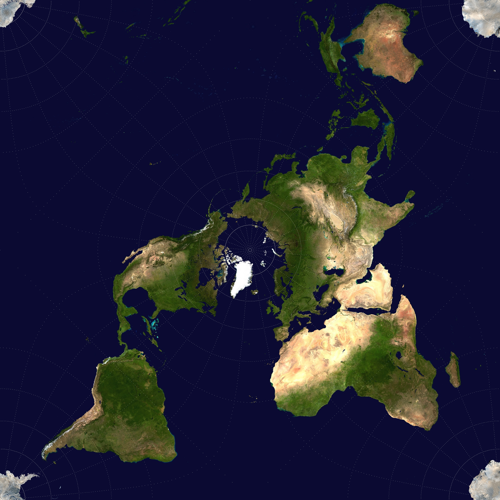
don't show this to flatearthers, but that is a funky question: how does one prove that our earth isn't flat with the space metric shrinked or expanded? We see it from the space. And there we see that that metric is the metric of the sphere, and that will align with spheres in the sky, there we see no angles except the rays of the stars. We're not at a star, and those rays depend on the optical system we use, thus they're optical illusion, either way, that is just an excercise for the brain. But if we knew nothing but this map that actually worked, we'd have to make some work to do to figure out it, but now I am not wasting my time for that, I have to work on letters.
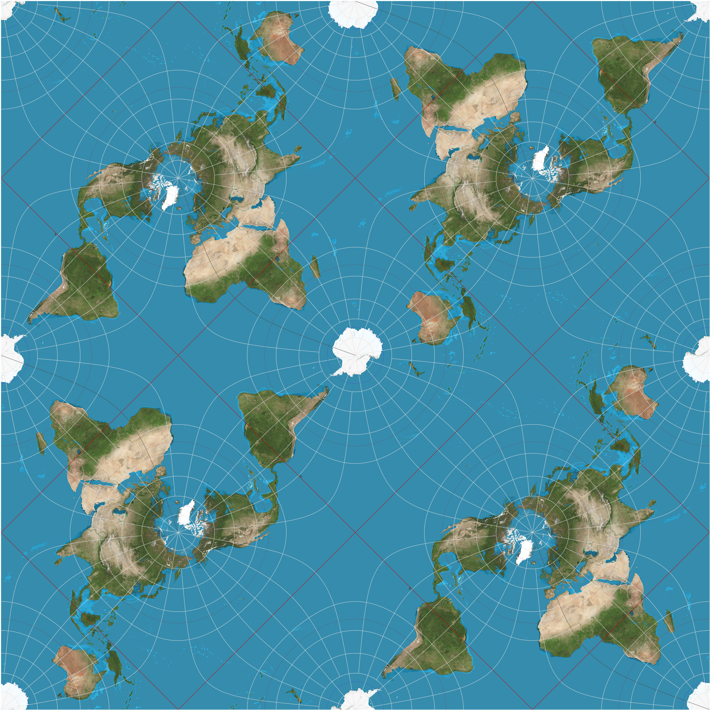
and once again I off the trail.
trail is to rail?
Where was I?
Валы валены, валы навалены, валы-на вале-ны..
волы на воле? вол может сломать загон, он добровольная скотики? скотина?
Скотина с котиной пришла? КотИна самая наглая, и такая не опасная, что никто не прогоняет, а учитывая что её могли принять за юную кошку покрупней, то с такими лучше дружиться. И в итоге карлики заняли доминирующее положение и возможно передушили всю конкуренцию в виде детёнышей кошек покрупнее.
И затем, видя что котяра жрёт, другие животные могли подтягиваться и просить еды.
это предположение, естественно, но давай пока на него положим предположение, что скотина от слова кот. кот ходит? сам по себе. скотина (в отличие от камней и деревьев и даже грибов - ходит)
←↑→↓↔↕↖↗↘↙↚↛↜↝↞↟↠↡↢↣↤↥↦↧↨↩↪↫↬↭↮↯↰↱↲↳↴↵↶↷
↸↹↺↻↼↽↾↿⇀⇁⇂⇃⇄⇅⇆⇇⇈⇉⇊⇋⇌⇍⇎⇏⇐⇑⇒⇓⇔⇕⇖⇗⇘⇙⇚⇛⇜⇝⇞⇟⇠⇡⇢⇣⇤⇥⇦⇧⇨⇩⇪⇫⇬⇭⇮
⇯⇰⇱⇲⇳⇴⇵⇶⇷⇸⇹⇺⇻⇼⇽⇾⇿
∀∁∂∃∄∅∆∇∈∉∊∋∌∍∎∏∐∑−∓∔∕∖∗∘∙√∛∜∝∞∟∠∡∢∣∤∥∦∧∨∩∪∫∬∭∮∯∰∱∲∳∴∵∶∷∸∹∺∻∼∽∾∿≀
≁≂≃≄≅≆≇≈≉≊≋≌≍≎≏≐≑≒≓≔≕≖≗≘≙≚≛≜≝≞≟≠≡≢≣≤≥≦≧≨≩≪≫≬≭≮≯≰≱≲≳≴≵≶≷
≸≹≺≻≼≽≾≿⊀⊁⊂⊃⊄⊅⊆⊇⊈⊉⊊⊋⊌⊍⊎⊏⊐⊑⊒⊓⊔⊕⊖⊗⊘⊙⊚⊛⊜⊝⊞⊟⊠⊡⊢⊣⊤⊥⊦⊧⊨⊩⊪⊫⊬⊭⊮
⊯⊰⊱⊲⊳⊴⊵⊶⊷⊸⊹⊺⊻⊼⊽⊾⊿⋀⋁⋂⋃⋄⋅⋆⋇⋈⋉⋊⋋⋌⋍⋎⋏⋐⋑⋒⋓⋔⋕⋖⋗⋘⋙⋚⋛⋜⋝⋞⋟⋠⋡⋢⋣⋤
⋥⋦⋧⋨⋩⋪⋫⋬⋭⋮⋯⋰⋱⋲⋳⋴⋵⋶⋷⋸⋹⋺⋻⋼⋽⋾⋿⌀
¬ is not among this, but in the first or third line of the unicode set.
↯↯↯
аццкая
сотона!
Let's see all the letters from the list of https://en.wikipedia.org/wiki/List_of_logic_symbols
Many of them are in images, which is a bummer, but they give the unicode numbers:
𝔻 In the formal sciences, the domain of discourse, also called the universe of discourse, universal set, or simply universe, is the set of entities over which certain variables of interest in some formal treatment may range.
https://en.wikipedia.org/wiki/Domain_of_discourse
oh, it's for some long time. And no guarantee that this path leads anywhere.
But, there's only one way to see:
https://en.wikipedia.org/wiki/Predicate_(mathematical_logic)
In mathematical logic, a predicate is the formalization of the mathematical concept of statement. A statement is commonly understood as an assertion that may be true or false, depending on the values of the variables that occur in it. A predicate is a well-formed formula that can be evaluated to true or false in function of the values of the variables that occur in it. It can thus be considered as a Boolean-valued function.
A predicate consists of atomic formulas connected with logical connectives. An atomic formula is a well-formed formula of some mathematical theory. The main logical connectives are negation (not or ¬), logical conjunction (and or ∧), logical disjunction (or or ∨), existential quantification (∃) and universal quantification (∀); the predicates always true (denoted true or ⊤) and always false (denoted false or ⊥) are commonly considered also as logical connectives.
A predicate that does not contain any quantifier (∃ or ∀), is called a propositional formula. A predicate whose quantifiers all apply to individual elements, and not to sets or predicates, is called a first-order predicate.
The way ⊤ and ⊥ are also T and F reminds me of t and f, and inspires me a lot to walk this path:

If ⊥ also stands for perpendicular lines, is = the parallels? but true isn't just is, but is true, so nah..
and just as those greek musical notes had the third form, here we also have such form of the T:
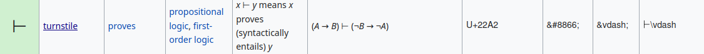
and of course there's reversed symbol: ⊣, but it's only used in few applications
how old are these signs? The name of this last one is probably recent, but then who knows how old is this word and technology, it would need nothing but a stick, or at least some tricky stick in some tricky hole.
Anyway, T & F and what is interesting, is that in russian and greek these two letters go in this order and they're only one U apart. and U is or and it is interesting that they go like this. Top Or Bottom. Very interesting. True Ur False.. hm..
If ⊢ is H and that H is И, then ⊢⊥⊤ are ift which is alphabetic (or, rather, trimatronic)
both d and j are lingual, so what do I worry? they're from different lines, that's all, different dialects but the same word. Language is thousand-head chimera, words are much less abstract thing. Words are much more real. Words exist throughout languages. It's not how many languages you know, it's how many words you recognize across cultures.
Modern academia is supported by go-t, and thus socialistisch, and as a result, ineffective. When business makes science, they make much better job about it. Human Genome was a private initiative, which go-t only tried to subvert. Was successful in spite of go-t.
government and goat is sheit for sheitan, го-о как госудрство and shit.
nnnnnnnnnnnnnnnnnnnnnnnnnnnnnnnnnnnnnnnnnnnnnnnnnnnnmmmmmmmm
n and m are the labial, reflecting b, бв, and thus they're bu, no, in- im- il- ir- all sonors are variants of one another, sonors before some letters stand:
il is only before l
ir is only beore r
(thus they don't matter much, they're.. or do they? they're some n's or m's I think. ᚱ as a form of ᚢ again.
im is before m, p,
un-is only n, unbelievable,
in is boefore v, t, c, d,
why does in- go un- before b?
u ~ i? и is i in russian.
so un is some basal form? because u is always with n in it, unlike i.
u and i are the pronouns? could be but then u ~ i and thus ya (you) ~ я [ya] (I) and that is how second person is whethere some pronoun of the first person or the third person (you or thee, we or they, you and we both could be some of uvw, the letter as a word.
I as a form of U and thus A is a form of I and U, if the lines repeat themselves in differnt dialects, and thus c ~ g ~ з cognito сознаю. со ~ з?! what is наю then? как в наитие, чувствую? пинаю пеняю пинает как пень? пенять как пеня? воняю, внутренности чувствую? склоняю сколениум? склоняю к сексу? склоняю наклоняю склоняю с~soft,слехка,easy,see(I see what I do, and thus I know what you do?)
Before I have that program, let's play as if I only know two languages because all the other languages are lost. Let's only play with russian and english. Or let's even start with only russain, because I know it the best.
a во до
ем же за
и ко ли мы не
о по со то (от?)
у це чё ша ща
эй ю~я
и коли мы не звучит как прекрасная часть какого-то предложения. осталные строки отс
and in to
eat yo pro
and to if we no
of by co- to (of?)
at ce wha hush nao
hey you~I
?
so what it tells is that that russian set I prepared is not translated into russian nicely and thus false.
Seeing how alphabet company colours remind my structure
standing next to it in my
favourites, made me play with my .ico a little and those letters
again made me think of those timelines of AD and BC as if the
modern AD period is how our laphabet goes: first line of it is
A-D and then BC would be how itwas in the ancient past. B as the
first letter, C as shin, and no air, just water of B and fire of
C (ash) and if C is ash (I thought of shin as the sefer
yetzirah's mother) and I see that thus C ~ H ~ X ~ ƆC and here I
think of F ~ H and H as Ⱶ and maybe even as ᚴI think I sent into google my book. Do they secretly read it and that is why they arranged colours like this? Alphbet they call themselves now. Whether because they're hijacking the term "alphabet agencies" or because they actually what.. they make business with my science simply because I use their services also for free. I even adblock the commercial on youtube and they seem to be fine with this. But if they read this book, I wonder why their G is so weird, as if it's asian k-first thing, but why does it go couter-clockwise then? Because if it's normal red-blue-and_so_on, then why does yellow goes after green?
But visually it won't be better, if we go with our rainbow clockwise:
I should stop eating so much sweets. Only one unit of sweets should be bought the next time I feel like I need it. Since I mentioned going for sweets I wrote some retarded crap about google and.. well, before that something very based was going on.
Actually, now I see some pretty in the clockwise direction of the G rainbow. White Blue eyes, red lips, yellow chin, eyes are blue and ye.. green.
Blue as blanc? Зелень как желчь? желчь желта, я как булимист обжоркин это знаю. если бы не блевал капец жирдяем был бы. Но горло следует промывать водой после блевотины, а то кислоте в горле делать вообще нечего. what kind of typos are they?
If blue is blnc, is red black? In chess red is black. In cards they're two different groups? But what if crosses and diamonds are both crosses, and hearts and pikes are hearts upside down and downside up.
I should remove all my teeth fore many reasons:
- without teeth I don't have to fix them, don't have to brush and floss them, they don't rot.
- without teeth I don't bite by own cheeks and lips.
- wihtout teeth I eat less. I need to remove them to balance my weight. I'm overweight all the time. it's almost 30 extra kilos, like wtf!
+ teeth give some aestetic, but that's it. They also help to eat, but I see it as disadvantage in my case.
+ they used to be used as instrument (to bite off something) but today metal instruments are to be used.
That is actually one of the wilder inventions (or ideas) beyond the capsule thing. I see myself as closer to the embryo as possible, because I haven't seen the disadvantages of that state yet. That state seems to be the ultimate. The naturally developed state. Not chaos we're in.
The other in that axis is removal of all the bones. When I can stay in the capsule forever, I on't need bones anymore.
don't
won't
hasn't hast as past.
won is the future: those who won, have the future.
done is now? doing it is.
Данное даренное present. done is present. done is given.
do = give? does v reverse g into д?
дай = give and давать is probably to give calqued backwards or who knows how.
give live
save rave
love glove
row owe
raw awe
wife wives
knife knives
life lives
safe saves
have has had
or
have had has
?
english ve is ю in russian. (funny, because russian вы is you, the other way around)
have имею
has имеешь? имеют? имеет! -st in latin.
had имел (-ed ~ -ел)
And so it's monday 08:03 and I smoked three or four times today. Last time I did was to neutralized all the sweets I devoured. I also vomited most of them. I do need moderation, I do need to pull all my teeth away.
missive is a new word for me. reminds message in both form and function.
lehti is finnish for leaf. h ~ f or h ~ s? лист is leaf in russian. ſ ~ f after all.
b as no is not only in chinese, but in slavik too in some narrow context, check it out:
z is with , bez is without. As if be was не, as if that's where v and ν meet again.
Was plato the man who made people distance themselves from philosophy and to become specialized in more abstract or obscure subjects? Hence mathematicians, physicists, all other sciences where platonists couldn't into because they were not the sharpest pencils in the box. But logic. I think they stole it. Did Diogenes Laertius said that or me? Lurye said so (I don't remember if he Solomo or Solomonych) so why do I trust a jew again? I trust them where I catch them lie and I accept their narrative when.. why did this leftist word infecteed me?
The academic dogmas are so strong, that
https://en.wikipedia.org/wiki/History_of_the_Greek_alphabet#Hyginus'_account
used to say literally the following:
[[Hyginus]] recounts the following legend about the introduction of Phoenician letters to Greece
about this chapter:
The three Fates created the first five vowels of the alphabet and the letters B and T. It is said that Palamedes, son of Nauplius invented the remaining eleven consonants. Then Hermes reduced these sounds to characters, showing wedge shapes because cranes fly in wedge formation and then carried the system from Greece to Egypt*. This was the Pelasgian alphabet, which Cadmus had later brought to Boeotia, then Evander of Arcadia, a Pelasgian, introduced into Italy, where his mother, Carmenta, formed the familiar fifteen characters of the Latin alphabet. Other consonants have since been added to the Greek alphabet. Alpha was the first of eighteen letters, because alphe means honor, and alphainein is to invent.
Naturally I had to change that line into
[[Hyginus]] recounts the following legends about the development of the alphabet
What if 'd in I'd is more based than had. The more basal, the more primitive, a part of had.
Because that is literally -ed and thus it can be attached not only to verbs. I'd see would then means I saw? I did see? -ed is did? no, did is ed added to do. doed is did but oe's
s is present
d is past
l is future
all three suffixes are lingual, I wonder why. Maybe because they used to be the same letter and divided into times later.
Object's something
Object'd something
Object'll something
that -ing in the first case is like someth's a verb.
is and was - the other way to turn present into past. And I don't see not future form in this system, and thus this sistem is more ancient and from times where we didn't know future. No wonder those legends of ясновидящих appeared, and in russian it specifies: not only seeing, but seeing clear (and not a word about the future too, because those detectives could see into both futue and the past)
clairvoyant is the english word, even though it's french. And a complete calque in russian.
Japanese ie for yea and iie for не makes me speculate:
is their no literally да-да? and is it standing for take and give (two times da, where da is ta in take and да in дай. and is that g (russina д looks like this in cursive) is д in times when we considered all the linguals one or few letters and didn't distinguish between give and take, because it is the same action actually. And were ke in take and ve in give the prefixes we know in russian in their pure forms of в & к?
v and k are they not only in and to, but also вы and ik?
so ta is da (duh)
and take is ta ik (I give, даю я)
and give is ga U (give you, дай вы)
and most probably those are the same g and д (g is д in russian cusive, they both are and thus they remind cursive ד (looks like 3 with a bubble at the cenral bridge) while ג and ז look like mirror reflections of each-other, which relates to that c ~ g thing (so I take from modern "dogmas" what I find fit and reject what doesn't fit into my theory, how convenient. So I banter myself too, so when I banter you please take it easy)
Here, did they camouflage fuck for folks? (that is how poor foreiners can get the songs, still love 'em)
because what follows is they admit that funk is an euphemism for fuck. So are folk music fuck music? Makes sense for rhythm could be invented to keep the lovers in the same tempo. And thus they would speed at the same time and came to the culmination at the same moment.
Or is it the same word, because fucks is what folks do, and thus that's how they're different from their children. And once children got puberty, and thus both interest and ability to have sex, they soon become folks themselves.
is -self the serves' postfix, so he didn't hide the way his or her происхождение, социальную принадлежность?
That song is the best illustration of what funk actually is all about:
Hell yea!
Hey Sloofus (yeah) tell us something good
Let's take it to the stage, sucka
Have no fear (Get it on!) McFunk is here
Doin' it to the max
Slick Brick! How’s your loose booty?
(How do I ever metcha) - not sure if it was heard correctly (all lyrics sites say it's "laughing atcha" again)
or is it "how do I have omitcha" somebody write to me if you know this dialect of english well enough.
Let me tighten it up (is omit "not meet"? unmeet huhuhuh)
Get it on
Yeah
Everybody funking and don't know how
They shoulda seen the bull when he funked the cow
He funked her so hard they saw some smoke
He said, let's get in the bed and funk like folks
Laughin' at ya (ha!)
Funk used to be a bad word
Say it loud! (Sittin in the woods upon a log) I'm funky and I'm proud!
(Finger on the trigger)
(My eyes on a hog)
(And I sat back)
Talking 'bout you the godfather (Laughin' atcha!)
godmother, (Sittin in the woods upon a log) grandfather.. Ha!
(Finger on the trigger) (Fool and the Gang! hehehe)
(My eyes on a hog)
They call us the funk mob. (And I sat back)
(Laughin atcha!)
Dig! (Get it on)
Little miss muffet sat on her tuffet snorting some THC
Along came a spider, slid down beside her
Said: what's in the bag bitch
She said I'm laughin' at ya, ha, ha!
(Hey Fool and the Gang!)
Funk used to be a bad word
(Let's get it on! Let's take it to the stage)
Motherfunk you
Hit it!
Sittin in the woods upon a log
(Good god!)
Finger on the trigger
My eyes on a hog
And I sat back
(Earth, hot air, and no fire)
Laughin atcha!
(They call us the funk mob)
Ha, ha, ha, ha!
Sittin in the woods upon a log
Finger on the trigger
My eyes on a hog
And I sat back
(In your loose booty)
Laughin atcha!
(Ha! Dig)
Slick and the family brick, whatcha you doing?
Let's take it higher
Hey Sloofus, tell us something good
Ha ha ha!
Ha-a-a-a, ha-a-a-a-a
Those crazios. (Crazios!)
Ha-a-a-a, ha-a-a-a-a
New type thing (New type thing)
Brand new funk (Brand new funk)
Ha!
Crazier than a sex maniac in a whorehouse with a credit card!
Say it loud, I'm funky and I'm proud (doing it to death!)
Say it loud, I'm funky and I'm proud (ha ha ha!)
Sittin in the woods upon a log
(Get it!)
(Hey Sloofus!)
Finger on the trigger
My eyes on a hog
(Tell us something good)
And I sat back
(Let's take it to the stage)
Laughin atcha! (Funk used to be a bad word)
(?? hey, where's the godfather at?)
Sittin in the woods upon a log
Finger on the trigger (but everybody (Hea!) try to get down)
My eyes on a hog
And I sat back
(Tell him, when in doubt, vamp!)
Laughin atcha!
(Ha, ha, ha!)
(On the one!)
Sittin in the woods upon a log
(Tricky Dick wasn't worried about no incriminating Watergate)
Finger on the trigger
(Information being on those tapes)
My eyes on a hog
And I sat back
(That sucker didn't want y'all to dig on him trying to cop)
Laughin atcha!
(An ounce of that p-blow!)
Sittin in the woods upon a log
(Now he's a-laughin' at you yeah)
Finger on the trigger
My eyes on a hog
And I sat back
(They call us the funk mob)
Laughin atcha!
('Cause they funky in the White House too)
(Let's take it to the stage, y'all)
(Hit it)
snorting some thc, not smoking it, oh wow, that is hot
like and love like take and give with other lingual in the front?
li ta
lo gi
let's collect more examples with ve and ke:
save sake
brave brake (break?)
wave wake
weave wig?
oh yes these seem to be valid suffixes. I wonder where it leads me, or maybe I don't, I know it is the parth to getting all the morphemes.
shave shake
behave.. uhm..
rave and rake? more obscure words return more obscure results.
but stave and stake are great.
So these pairs are great for learning the language, but we descend even further into the past and thus we know what exactly is in there and we have to learn only about tens of morphemes, maybe only two and the others are the further implications of those. We'll see. yin-yang model seems to be in the root of it all, I yet have to reach it from the point of modern lexics. I jumped into the future of my work, but now I wonder if it doesn't disturb the truth I yet have to deliver, if my preconceptions won't distort it.
but slave and have don't have the pairs with ke as far as I can see.
unless have is some hide and slave is some slike I don't know or slide I do.
ϰ is the cursive κ like wtf
but why am I surprised, since I told myself that k and h and x are all the same in a way in some historic sense in some previous forms of the writing system. The question is caused by me not being certain about it.
I'm funky and I'm proud!
was heard by me as I'm funkin' I'm proud! so is -ing equal to and phonetically? and semantically? licking good is lick and good, fucking great is fuck and great? doing well. do and well. not too far away semantically they're. Let's live with this hypothesis in the head and see if it applies well. This is how we сократим количество слов, словно отмотая плёнку к началоу.
Cause they funky in the White House too
wood make more sense to me if it was Cause they funking the White House too. Thus only are would be missing, but I don't know the language enough to say that... well what I say si I don't get it well enough to say I understand it. Потому что они охуенны в белом доме тоже? или потому что они ебали белый дом президенты эти. это если фанкин а не фанки ин.
начало кончало.. ко is what? но ало в кончало не особо уместно.
начало конец.. строка выше тем не менее говорит, что нач- is -нец
and is it really? In that natural rhyme it seems naturally so.
нач-Л
К-нец
нец is на чьих
когда как в фамилиях I know surnames ending with вец, but not nets. Even Lenny and Nina are Кравец, где вец тот же самый вич как в петрович, диалектные различия невелики.
Вери блади сёрнэйм иф зэт крев из славик. ик вик тот же самый вич и виц. вик. вый is also in this band. and that is how k is among i's. and if l is in this I-gang, I look at -el suffix and ask is it a varinat of -вич? but the closest to -el I can do is in мишкин is михайлов is михайлович.
so what is -ич and why do we need it? it's их. их как ich? товарищ товарич. я шутил что тваричи, но товаричи, их родители лишь товар. их родителей продали как товар.
-in is that very n of нец которое вец, в которая in. I don't understand! is v ~ n for real? V ~ N. see?
in russia we have two types of surnames: ending with ov/ёv/ev and ending with in. in is literally v and vo in russian. -ko in ukraian surnames are usually attached to -en ~ -in.
is -ov surnames add v to that very o?
okolniko doesn't look like ukraian surname, it would probably be okolnika in there. some surnames of the region end with -a gangha (ganzha) is my favourite. ganghin it would be in russian, but why don't I know russian names like that? were they tranlated into коноплёв for example?
they divide to imperare
we speak different languages because the god (the elite) decided so to rule the world. But only according to the bibleic myth, and I doubt they're very accurate. Naturally languages differentiated by nsome natural reasons too. And maybe now they have some better technologies and they don't mind if I fasten the process of the unification of the alnguages. of the inter-comprehension. Because technologies will allow us know other lnguages (in a way they already do: text is almost understood through g-traslator, for example, and that technology is good for some time, so maybe something better is at the door, or maybe already here and I'm just unaware.
Just like fita, and probably at fita's sixth place ё is неприличная буква. Как в голову могло прийти кому-то так свою одежду называть. Ё было логотипом одежды у Кондрашёва. Ё было основой брэнда Ё-мобиль. Некоторые люди слишком симпатизируют этой букве, они недопонимают что буквы имеют значение, и шестая буква похоже что неизбежно означает какой-то секс. ёба миль или что-то типа того.
dreißig (thirty)
fleißig (diligent)
ue in segue sounds as way.
Russians are bullied out of russia.
I think I must build a business so big that I can buy Russia from the commie sons.
Apple got a grand per client. I will get tens of grands per client and my product will also be needed by everybody.
And I will sell many such capsules to rich clients, for they will have growboxes, storages, equipment in such boxes.
бокс слово известное и в английском и в русском (в русском оно зарезервировано именно для маленькой комнатки на одного человека.
boxes, but of different form. Dodecahedric boxes.
12-sided boxes, double boxes, rhombic boxes,
And because this process is continuing, we're going to die off once we remove all the trees.
Mah and thaM
them as там
мы нау нас миг
те там то ты
ты потому и грубое, что происходит из третьего лица.
мы гораздо более уважительно, как к своему.
вы is also polite, because i's also labial.
lmnopr (p is anomaly, but how could r be the р in russian, it's only could be one and the same letter in the past. and how could R be labial (as it is in greek, and roman R seems the most advanced letter, like k: staves in different ways. wtf. Ч-like ᚴ
so K didn't have that lower stroke and R looked like P. and thus that lower stroke is a swash. an arbitrary element, a decoration, but actually normatived link to the next letter, so people united some letters into words by those swashes and distinguished word from each other. Thus removing the most of homonymity which further distinguished by commas (classic казнить нельзя помиловать. by logic of the text, it's a monarch's standart joke (decide yourself)
Was house some hole of two exits and thus hose is related to house, but we cannot say that one word came from the other, they are contemporary words, they probably came out of dirty word ho.
ho for whore, fore hole (hole's it's most abstract term, maybe because -el is all, all of it is the hole. it's h all. so ho is h. h is ho.. okay, let's live with it for a while, I'll tell what it brews into if it does.
ᚺᚻ hose is plural? hose is ho's or hos. I need approval or disproval from more historic linguists, from those who read the oldest texts, I don't. I develop tools for them though (the guy who made the computer which defeated kasparoff doesn't play chess himself, so he said, probably meant that he's bad at it.
hose is plural as кишки is plural.
ho is hole, and that is what can be said of the hose. It's some long whole.. whole and hole.. is w un-?! makese sense because n is ν in greek. what about greek? it's the same common european culture sharing many features and sharing the same alphbaet. the same in general, with some differentces I explore.
ABGD makes more sense than ABCD because they say that it was always G in the past (I wonder how they know it. Maybe the same way they do: they heard of it from some professor and took it on faith. But not to be that scientist, I must dig that claim, o find the articles where they mention it, then find the one which gives it in the reference, then dig further for he reference, maybe also to see a hearsay.
ABGD makes more sense, because then we see more clearly that it's voiced before voiceless, and we see it in russian more than in hebrew or greek even. Which tells that maybe russians are white contributors into scientific progress, and now when they suppressed us, they have jews in power, because rude ivans cannot tell their tricks to everybody. Why am I so evil against people who are too many to paint such a wide brush? Because we think in stereotypes, with some stereo daggerotypes we saw through our eyes and ears and nostrils. and multitude of other sensors.
ABCDEFGHIJKLMNOPQRSTUVWXYZ
as if mix-up voiced and voiceless, making the alphabet balanced, or what was the direction? Maybe the russians inventors decided to arrange letters in that order? But ABGD in greek too. Did it happen in greek or is it the source of their dogma that latin had ABGD in the beginning too, because they took it from greeks. Probably. so, did they or did they not? Greeks and russians have more distorted abcd sequences, thus they were the ones who mutilated it for their new structure, voiced first, voiceless later. In military sense it would make sense, because avant-guarde has to call all the others, and they should have been there as fans but also to protect their star.
ΑΒΓΔΕΖΗΘΙΚΛΜΝΞΟΠΡΣΤΥΦΧΨΩ
would be exactly in that order if not the sonors, which distort this structure in russian too:
АБВГДЕЁЖЗИЙКЛМНОПРСТУФХЦЧШЩЪЫЬЭЮЯ
АБВГДЕЁЖЗИЙКЛМНОПРСТУФХЦЧШЩЪЫЬЭЮЯ
I marked those "sonors" in orange. The first of them, Й, is literally short I (И-краткое)
And L is probably a form of I and thus N ~ И (in both form and function: 'n' is и)
и ~ на? n is no or and? an? a is an, and? a is and in other language, in russians.
But fuck that meme. rus is trus and village people. slavs are slaves. Let's invent something else. Parmiaks. Пермяками быть каково? Страна, которая ни на кого не нападала, а её захватили. Реинкорнация (переинкоронация) корона как pussy? технически корона is a hose.
Greek ΖΗΘΙΚΛΜΝ sequence reminds russian ЗИЙКЛМН only russians removed their Ѳ and among that the sequences are pretty much the same: Η after Ζ is naturally russian И after З.
and it is wonderful how they disagree about which is I and which is J.
Russians left only H vowel, greeks have both H and I vowel actualy, but I before K is Й before К.
ΖΗΘ is substituted with ЁЖЗ in russian
H is ᚼ(or ᛡ) in norsk.
and З is naturally Ζ
thus Ё is Θ
they made рокировку () in greece? or in russia? latin doesn't have that mess. And russian second line is surprisingly close to latin than to greek:
EFGH
ЕЁЖЗ - but no, it's not, here I must explain why we have ז
ה ו ז ח ט
h g f e
hebrew seems to have ו ז ח ט both and modern greek doesn't have the first labial, modern latin doesn't have the last one. I guess it's the same labial (one per line) and for whatever reason voiced and voiceless was divided here, is it where the voiceless set appeared, and before that 7 letters were enough.
maybe even six if only plosives and glides they were, teh first two lines, but there're thre aettirs, but four (or even five, if you accept the fifth) aikme or is it aikmen, I am still lost in their grammar, I don't know it plain and simple.
So like yin and yang, there used to be two lines: voiced and voiceless, syllabary of two vowels. A and E
or A and U in other nations, and somehow those u and и (u and и) met and gave offsprings, and thus five vowels. AUI pure vowel, labial and lingual vowels, the ogham order of vowels, and nobody else's, as far as I know so far.
so there were three parents to two children? e is between a and i (ai is e in some orthography, but not english, the best english can offer is said.
au is o
that is how letters came into being.
But creative force didn't stop there, and people found я in ia and ю in iu and ui is probably w.
if ui is w, then i is short, as in i-short, short, like mice say i, but elephants say u.
u is labial for big
i is lingual for short
Hobot rassmatrivalsa kak guba? guba truba?
vowel as no: to omit (not to mention)
tion is деяние
dios thus is doing, doer, creator.
deus thus is деющий
-s as active suffix, -ing
-n is passive suffix -ed
and though all four are lingual, ing and n are closer to m then to s, and what does it tell? maybe nothing, keep on digging.
done gone, these ancient words have very peculiar form of -ed.
russian form, the form russians still use. so was -ed -eл (д and л look alike in both kirillica and glagollica: ⰄⰎ - and the first sign usually has the left bubble half the hight, as others of that sight, but unicode makers chose this, later, form of it, the one used into modern times by srbsk-hrvatsk brothers)
So what I say? that d and l are invariants? I love this irrational word. l is russian d is english?
dark mrak seem to push l further, not into n, but m.
rak could be as in zrak (pupil of the eye) который от слова зри (see) зрак зрящий, seeing.
зрачок маленький зрак, как значок маленький знак. и это ко то же что и в японском. Даже не столько слова существуют, сколько вот такие корокие силлабеллы. silly bellies, silly because we think they mean nothing, or they mean too much, so we recognize them as silly, purely phonetic.
And they used to mean something, neh, but in different contexts they're understood as whole words without minding the components of those words. The linguistic problem of correct and wrotng words was known in ancient times, not anymore. Those quests were probably labeled obsolete or heretical and only post-christian science was accepted as valuable source. Yet linguistics is not where it should be, machine learning is completely independent field, and they reported linguists only harmful to their science, thus linguistics is pseudo-science (mostly because they're very reluctant to question their dogmas (my guess is because those dogma are political in nature)) And declaring this I dare to what.. I dare to say that my clumsy steps are the foundation of the truer science about language. What should I call them? grammatology is a shitty term from the start, and it's taken by the thieves, so let's find something else:
let's make some poetry.
Language studies
linguistic research
morpheme science
phonomorphology as a part of morphology which would have representations in medicine and who knows what else. phonomorphology, physiomorphology, geomorphology, antropomorphology si probably the physiomorphology or whatever term they use today. phytomorphology
ascend is a verb, and ascent is a noun.
as in save and safe
and I wonder how love and laugh are connected, probably the same, you love inside, and they laugh outside.
What interests me in that picture the most is the way they draw three signs in dots, and they're alphabetic:
one dot for M
two dots for H
three dots for I
and because both those diacritized M and H stand before K, I consider all three of those letters be considered vowel. Labial vowel first, Lingual vowel last, the neutral vowel between them, but we must hear how those letters are pronounced to claim anything about them.
But it's not that easy to find anybody pronouncing those letters. And most of the scholars don't seem to know of those vowel M and H.
Those dots actually once again link brahmic to one geographically distinct writing system, the Tifinagh.
But unicode doesn't deliver those dot-signs for brahmic, the only dot signs it shows are these:
𑀀𑀁𑀂 𑀇 𑀈
𑀇 is i
𑀈 is ī (and looks differently in other fonts, as | with dots on both sides, like ⴶ with those dots not on the top, but at the middle of that |, somewhat higher than in .|. (just in case, here it is supposed to look as four dots in the shape of a square. And because it's some form of i, it is interesting that actually tifinagh ⴶ is dʒ, just as j, which is also a form of i.
𑀀𑀁𑀂 sign seem to be some diacritic (because it loks like this in other font: and it is not on wiktionary, and that is how deep I dig. Not very deep.
So I was looking for those kshatrapa, junnar, andhra, but those dots are not there, yet some curious stuff can be found by those key words. For example, this:
and watching the abundance of the used signs in https://en.wikipedia.org/wiki/Telugu_script I once again remeber that enormous list of very different post-brahmic scripts and once again think that the east could easily be the source of all the writing systems, so many of them it has.
But then I see some hindu telling that India has not one, but two sources of literacy: brahmi that was written left to right and kharoshti, which was written right to left, and I look into kharoshti, and I find that double dot H:
𐨏 which is called visarga: https://en.wikipedia.org/wiki/Visarga
(and there you can see that it's not only horizontal, but vertical too)
The precise phonetic function of the dot below is unknown. It is used with m and h
(and probably that m is the same m which that table where it all began from mentions)
But why would I look into kharoshti when I needed to find some brahmi?
Most of all because I'm desperate because I didn't find them in brahmic scripts, and whatever.
Why do I look into writing systems I don't know much about? I am so much out of my depth.
I told myself I have to leave it to ai, but I'm whether proud or obey to the habit way too much.
I will take a toke and look into something else, you watch me:
Ohay, and our later and I fuck up al the academia
Okay, an hour later and I fucked up all the orthography
(first line is full of typoes. very high)
leaving to wash my nose with warm silvered water with a teaspoon of salt.
I wish I can just snort wherever I want and I snort the warm silvered water with some salt in it.
I wish I live in spheric bath in total comfort.
I'm waiting for some better program about these graphs, I have a prototype of it, it even works:
It probably was some academic text, they are taught not to use I's. weird, huh. make them selfless.
but check the biliteral words from the same text (the lists are not complete, just the most often ones.
No me's (but few my's) definitely something academic.
Compare it with the previous example, obviously less prudent:
Different texts, different in size also, slightly different results, but the first three words are the same.
of to in.
But because of their similarity and symmetry I only look at of and to, because they're the good two mothers ot the shortest english word a. what is I then? the a and I probably were the first two vowels:
they make great syllabary, because i palatalizes lettes while a does not.
and u the opposite of their spectre probably appeared when the concept of second person appeared.
of and to show the opposite direction. of you or to you. of me or to me. take is to thee? ke as the opposite of ik? give is that ke and vi is me? where's ta in give? I thought both t and g are d, some do.. or дай (give)
дай ~ дей (деть наоборот брать, а не дать "куда дели" where did you place it, so in this sense also where did you give it?
давать девать
одевать. положить вокруг себя? о ~ около ~ om (in dutch)
And now some makedonian:
As you can see, the program is raw, I requested it to be improved so I enjoy working with it.
also not all of those words are actually words:
— : 2
– : 2
и : 319
а : 82
е : 10
w : 1
д : 1
i : 2
ф : 1
г : 1
ф is from германските воени групи Е и Ф
w is from some W0506
д is also some personal.. they call it proper noun, such a term for personal memes Денот Д
и = and
a = and (but) another and, with a little bit of but in it. more butty but is но (no)
е = is
google translate doesn't tell me of their а today, but it knows it because it translates sentences with that word well:
До октомври 1941, силите на Оската ги оствариле своите цели за окупирање на Украина и Балтичкиот регион, оставајќи ги само опсадите на Ленинград[85] и Севастопол[86] сè уште недовршени, а направиле и подготовки за продолжување на суспендираната, односно одложената опсада на Москва.
By October 1941, Axis forces had achieved their objectives of occupying Ukraine and the Baltic region, leaving only the sieges of Leningrad [85] and Sevastopol [86] still unfinished, and made preparations to extend the suspended siege of Moscow.
на is translated as of in that sentence, so even though they're different words, the champions have similar meaning. So I ask myself, are they different words at al?
Meanwhile new version of the program arrived:
I wonder why here instead of labial of lingual na is present and instead of lingual to labial во appears.
but then I know I'm tripping, because vo is in.
Британски Crusader тенкови напредуваат во северна Африка.
British Crusader tanks thrive in North Africa.
oд is another of. so they kinda have two of's in the first three
до is to and that is how those of and to reflect eachother in slavic languages:
oд and до in makedonian is от и до ин рашшн.
That scarcity of to can be very important to understand our mentality. But let's feed there some other text, some scientific text in makedonian. Or fuck makedonian, lets' work in russian, at least I know that.
I didn't know that na (on) is so popular in slavic languages, even though that book (собачье сердце) doesn't have the jewish -please (-na) which is considered rune in russian as if that -na is nahooy (to penis, yet that to is also на in russian)
And now, in that book and in russian the most popular words are the same as in that makedonian text, but now they're in alphabetic order: и, во, на (vowel, labial, lingual, in this order)
So for some better comparison, I use the very same book in english translation:
russian: http://www.eunet.lv/library/win/BULGAKOW/dogheart.txt
english: https://archive.org/stream/MikhailBulgakovTheHeartOfADog/Mikhail-Bulgakov-The-Heart-Of-A-Dog_djvu.txt
and to my surprise in gets up front, leaving those to and of behind:
and the most popular of all short words, the a, of, to, arranged in alphabetic order, btw, lead the charts.
it's interesting that in russian the leaders are also arranged alphbaetically: и(i) в(v) на(na) (and, in, on)
in that makedonian text (some other text, in some different genre) the first three were the same, but in different order: на, во, и. (в and во are the same word in russian (like a and an in english))
And yes, there are more frequent words in that text:
That and is the very russian и and their the russians don't have is the leader of them all. which is really super weird. About 2.5 times more the's than a's.
a : 934
the : 2358
an : 92
Even with an, the is more than twice as often as a and an combined.
Is it because in that book objects are named three times? Once when they're not known and twice later?
Just to compare it to russian to see that no russian word of three letters can compete with the shorter ones, from the same book, the leaders are still и, во, на:
This part is so boring to me, because there has to be hundreds of these graphs and some cold-hearted machine should be analyzing them. While I'm already tired of these few and try to pull assumptions from these few too: that на is also used not only for on, but also for take. And that fact makes me think if во has some meaning of give, like as if во is моё or фу (don't take)
I doubt I should do it, that's not what it was about. Or was it? Time to smoke, Good morning. 12:24, Tuesday (it's Thursday, I was even unaware of that) I'm not giving it up because I don't have nothing better to do, and I have nothing better to do because I smoke and thus cannot deal with some serious people I have to deal. Few hours later and I haven't smoked yet. But it is coming.
another hour passed, and I made some heavy work (I would never do it being high, way to heavy, way too brutal, some minor damage to my skin is caused by it, some dirty air breathed in, totally counter-survival. completely against the main idea of mine that perfect condition will maybe allow us not to get old, or at least not to die of some other factors, and aging will be solved by biotech, and probably it already is, btw. I only have to earn much money in time to get it.
And here I am at 15:22 with such a subject as матерные слова.
For some long time I suspect that some words were considered dirty because they were too basal, too picturesque, or for whatever reason, it could be just a demonstration of power when people were prohibited to speak their own language, I have an anecdotal evidence about it from some iranian gay man.
16:30 I was out, reading more about Solzhenitsyn than himself.
16:59 and I'm reading this: http://www.solzhenitsyn.ru/proizvedeniya/publizistika/stati_i_rechi/v_sovetskom_soyuze/pismo_vojzdyam_sovetskogo_soyuza.pdf
It seems that work damaged my creativity by taking my powers to make it. That is why I cannot have a job (an hour long hand labour is the easiest job of all and still it takes this sparkle out of me. Let's smoke more maybe? Let's try regain hat spark. Let's eat first. Or drink lots of water. I eat a jelly and drink some warm water, and maybe I will not smoke anymore, to be continued.
And there he makes the same misdead I do: we don't mind collaborating with the regime. He actually use the perestroica term. He gave them a clue to survive into 21th century. They had to fall and jews would perish when archives were open, people would start asking why the fuck there were so many jews, unproportionally many, and they wouldn't even get to who were the other half of the mother fuckers (old russian elite) before they slaughtered kikes (who reasonable left before perestroika pretending to be russians and giving russians bad reputation. These love-hate parasite-host relations will always exist and always conclude the seed of the military or civil conflicts. So what is the solution for it would be? My grmmar is grate.
I ate and drank but I still discuss politics instead of science. That is how dumbened down I am by that heavy duty work. I should stope pretending that I'm a.. I wanted to say that I should stop being an architect, but I actually have to build with hired workers' menpower.
Or I have to avoid weed when I do heavy work, because it will not help me to ascend where I'm allowed in some other days. Служенье муз не терпит суеты. (не музам служенье, а музы могут услужить, но их служба суеты не терпит. очень мило. good to know. hail to the muses!)
obsession обсажен пара пришедшая на ум когда желейку ел.
очень странная параллель, но давай её исследуем:
lesure лежать
lesson учить лечить качать но скорее похоже на рифмовку бессмысленную достаточно.
какой-то дургой пример тогад пришёл вторым, гораздо более любопытный, но тоже поэтичный по больше части, едва ли хронологически существовавший до того как я их сопоставил даже.
Так почему же Солженицын заигрывает с советской властью? Только ли ради радения о русских или то лишь предлог? Может он позиционировал себя и кем-нибудь воспринимался как внештатный аналитик, ведь как писал Гиммлер, советская власть сама организует протесты против себя. И в отличие от Амальрика (о котором я лишь от него узнал, при том что того выпустили из тюрьмы народов на мой месяц рождения (не знаю точного дня когда он выехал)
Амальрик, возможно, не заигрывал, и кто знает истинные причины его смерти спусты четыре года после освобождения. Солженицын не только выжил, но был и тепло принят путиным. Я, значит, не заигрываю с властью? И он и я заигрывать с ней вынуждены, потому что, как он справедливо заметил, на восстание русского народа надежды нет: их волю сломили, и если они не быковали когда их пиздец крепили, то теперь-то чего, типа после драки кулаками не машут.
Лишь надежда на очередного Хрущёва у него, и через десять лет доставили Горбачёва. Какой ещё лысый гад нас освободит от режима? Лысый у нас сейчас, но это ленинообразная фигура, паутинный персонажик. Следующий будет волосатый, и нам очень повезёт если навального поставят, хотя я и воспринимаю его тоже как пример власти, организующей протесты против себя самой. Дабы выявить ех, кто в этом многострадальном народе ещё способен помыслить о сопротивлении.
оберечь или обречь (первое слово очень редкое, морфологически вполне понятное, но у солженицына прочитал его впервые за долгое время, так что сложно было понять как обречь, почему обречь. а.. оберечь. Но что если это subliminal programming of some sort? What if he winks them that finally this zaraza will hit the opponents of ours, the progressive west (I suspect progressive to be some marker word: neither progressive metal nor progressive trance are good) so I believe in the good old west. Simply being the best and doing what it can the best. No more brother wars this time.
Do I promote wars with some other races? We never had much interest fighing other races. Or am I ignoring the conquests of Cyberia and America? The imperialist in me.. We have to outlaw all wars. Violence is abhorent, and then we have to prevent go-ts from commiting it against their citizens. They're independent persons, they don't belong to the state. But what am I going to do to criminals?
I'm going to expose them so all their sins will be available to everybody doing business with them.
What if they ignore it and openly exterminate the opposition? Isn't it what the go-t does?
Okay, I dropped reading solzhnitsyn's letter in the middle. His demand to develop the north-east, because we didn't develop is enough is atrocious. He definitely works for the commies. He teaches them how to reign us better. He told them to reject the ideology, they did. He told them to stop the progress, to make economy static, and that seems to be what they did. And what if that was how he fucked them up. What if that good advice to reject the stale ideology was just a bait to make them fall into some static state, which would make them incompetent to compete with the West. Could be, could be. But they were failing to compete beofre that, don't I think? It certainly was a trick. I rejected to read it more, but how did it sound almost fifty years ago?
So, finally I read it through and I can see that soviet establishment definitely read that letter.
conquer conquest
19:54, why have I even smoked.. I ate well, I will smoke some more today to see if some break after heavy work allows to work spiritually well or not.
will and shall are велю и желаю
will and wish are велю и вижу? (подобно словосочетанию сплю и вижу в значении страстно желаю чего-либо) wish and vision are semantically linked in the necessity of visualization of something before you get it, to visualize it directly to get it.
Modern european concepts of good and evil are directly connected with abrahamic concepts of god and devil. and will also reflects with, rhymes with evil. je wil
Пусть будет воля не моя но твоя - отличное пожелание. Очень смиренное. смирное.
Жизнь моя несовершенна. Это точно, это да. Я ограбленное население. Огромные научно-творческие потенциалы и совершенное отсутствие капиталов чтоб их реализовать. Когда русский богатеет, ему это богатство не в коня корм: как негры тупорылые понакупают хат тачил и чисов продолжая каждый день ходить на работу вмсто того чтоб заниматься покупкой времени, они себе его купить пытаются в виде часов наверное
это я (начиная с will) накурилса. работает. надо отдыхать, оказывается.
Возможно, моя работа будет эффективней, если я буду в тех же башмаках в которых работаю пить чай, ходить в туалет, надо покрыть всё плёнкой, но понимаю что загнался и надо покрыть бетонную капсулу нержавейкой, вернее в бак из нержавейки стены бетоном запаять.
Сейчас занимался рассчётами и голая капсула будет весить 13.7 тонн.
А наполненная водой плюс ещё 5.58 тонн. ~6 кубаметров воды.
Т.о. бак в использовании будет весить под 20 тонн.
Но так как танк 40тонный не проваливается в грунт, наверное и моя капсула с площадью соприкосновения 2.21 квадратных метра будет себя там прекрасно чувствовать. но лучше, конечно, песка крупного под неё насыпать, чтоб возвышение было. и греющего кабеля в тот песок уложить быть может, или непосредственно на саму капсулу греющий кабель прицепить.
I shouldn't distract myself for those toke reports. As you can see, it takes me out of the field.
field filed
пастбище pasture.
is бище бычье?
past to pasture is as cult to culture, litera to literature, or is it.. pas and cul?
pas as advantage makes pastures very important for success.
cul for as makes our civilization very homosexual. but probably culture is what's cool.
Is cool some ancient word for good? I don't know and actually doubt it. But as I spoke about unofficial languages, those words could be from substrates.
I felt like I needed some pictures and I found these two I used before, now let's compare them side by side:
They're mostly coherent, yet they're different. The one on the right gives some minority report about Η and unlike the table on the right it tells that they all (and Ionian too) considered Η consonant. And both pictures agree that only ionian knew Ω which may show that first the priests of apollo (probably being ionian) added only one string to apollo's lyre. And that was long o? Because if both these tables are correct, they speak about different epochs maybe. But then again there's replication crisis and we can only be sure that Η and Ω are the two additional strings. Maybe Η was more high than Ι and Ω was twice deeper than Ο, and what was Υ then who knows, but what am I doing, let's greeks decide it. Those who feel that language.
Other differences are about the use of that ☉-like Θ, how did they draw Ι in korinth, and others are some minor differences about some additional forms, such as Υ and D.
Have I been here? Suddenly I have a hit of deja vu, as if I posted this picture before,
speaking of me trying to unite all the languages could be not that bad and maybe that would be the benevolent will of god for me to bring them all together altogether, and while doing so we have discovered a lot in the process.
My habit to use notebooks (which was reduced after I made one friendly witch mad) returned to me and today I used that aqua four elements notebook plenty and I found that vowels are more ancient than consonants. Or at least that we can communicate just using vowels.
аиаиа интуитивно понятно как до свидания.
к моему удивлению ауе значит здравствуйте, что вполне обычно при ограблении (ибо ограбление это тоже форма встречи) и звучит жутковато если человек без языка к тебе обращается - кто знает что от такого ждать, лучше что-нибудь отдать чтоб у него руки были заняты и отправить его к чёртовой матери.
beLIEvers
reLIEgon such spelling make it more obvious that religion is based on relying. People rely onto something, they sora believe in it.
Some good pieces were sent to me by one of my correspondents:
thus we know exactly when did greeks accepted that ionian form of their alphabet
(it was always under my nose, I probably should smoke less and read more)
(or maybe not, to find pieces in the literature others can, what I deliver I must)
This chapter of the book which is linked under that image tells of the whole new direction of alphabetic research: unironically the architecture.
> no back-stabbing, stealing, grabbing..
воровать вырывать
I just noticed that they claim that the idea that the universe had no beginning and came out of nothing belongs to hawking. It is how they rewrite history, because while hawking was alive, he was considered to be the most vocal proponent of the big bang theory, which I noticed before (could be some vaticanese conspiracy) Do they keep some roman relics which allows them the world power? Some extraterrastrial technology of actually speaking to gods? whoever they were? some aliens working towards peace for their own convenience.
So did hawking accept the opposite point of view or do they just fail to prevent us from noticing that their big bang dogma is inconsistent when looked at without some dialectics. dialieticks
So now they will use принцип арнольда (different name in english by an accident or to divide national languages when they can?) to hide figures who proponed the bettery cosmology all along to conceal how they were shut down or what else they could say. Like look at what I am saying, how dare we.
you and we.. the opposites in the same claster of sounds. we ~ мы ~ me, thus once again we you me is how half of second person came out of the first. we you me
моё = me + you? mוy
one
соня сова
ν v
праведный правдивый
Итак, выходит я зря сфокусировался на различии между этими суффиксами.
В этом случае праведный содержится в правде, а правдивый содержит правду, но давай посмотрим на другие
левый ленный
клёвый кленовый клеяный?
никакой особо связи пока
бездонный бездоновый
Похоже на то, что эти суффиксы инварианты (простите меня за это слово, оно мне по сердцу, не знаю по чему. пос ердуц же по сердцу) н ~ v, m ~ w
uvw
nΛм
That ^-like L is how most of the russians learn to write it (at least we as kids did in he 80s, I even in the late 70s began)
опр (that п is п, but that is all the coincidences I see, but wayt, o could be mem. both are labials, and I thought of both jewish mem-sophit and arabic too, and I found this sequence instead:
ع غ ف ق ک گ ل م ن ه و ی
it is not from abjad order, but it's still very alphabetic, almost how it goes in the abjad order, I yet have to research why they're this way.
And if this order is historic (it well can be, whidden in the most savage segment of the civilized world) then it is the witness that a) k is born from q; b) all that i-line is born from that o-u line:
and ه و? and the e-line too.
هذا is это: it sounds like хАза, иге ерфе хА is e, the ה which is also used as the in hebrew, and if هذا is actually cognate to russian это, then э in это is probably a rudiment in russian of some definite article э, but who else in the region has э as a definite article?
a, Portuguese fem. def. art. A mulher de preto: The woman in black a, Hungarian def. art. Éjszaka a múzeumban: Night at the museum
It's good to be able to believe only when you decided what to believe in for yourself, now when you were influenced by the professional beLIEvers.
now was a typo for not
and how organically it lays there, as some but
now no not but are all one word? is it where n and v meet too?
nebo i voda?
neige et pluie? neige was automatic, I don't know french enough, yet I knew it was snow before I looked in a dictionary. pluie is a perfect pair and there n and п meet (n and п) but is it poetry of it or is it science? was science invented then? we didn't have science when alphabet was born. it can go anywhere. let's trace it wherever it goes.
n and v is a big thing and should be explored properly.
no and fu are two sides of the same no.
bledny is blood no y (y is he or yij some pronound, id it, the same y those i's)
rodnoy rod moy
it's not no, it's deepre, before yes or no, when was only you and me. n ~ v is me ~ we?
не is a form of мне
me, but not mo in english (but wo in chinese, chinish. китайцы чанят? часы и прочее требуещее починки китайским было всё? сомнительно, но кто знает, китайцы развились гораздо раньше русских судя по всему. Мы на морозе замороженные, заторможенные как история нас рисует, словно это сейчас мы в комфорте печного и так далее отопления расцвели все бурным цветом)
Creation of alphabet happened after the invention of ovens, so.. oven овен a b
А agni
В вода
С колесо?
Д дом?
I painted the following (astrologic, huh) parcel grey, because it misled and led nowhere.
(I should've painted grey the previous part too)
но после овна же не водолей.. буйвол
(в обратную сторону от овна, впрочем, будут рыбы, а перед ними водолей)
телец as bull gives B
what follows it is geminy, G, C, perfect after B (especially in 12-letter s et)
Cancer goes next, and thus A B G C is how it goes, and if g and c used to be one letter, there could bave been som period when they existed as EЁ
Aries
Bull (Taurus, interesting, Alef is the first letter. are A B T three names for the calf?)
Geminy
Cancer
Leo (L as D, interesting)
Virgo is Deva. And isn't L there because of L Г () simmilarity? Because L is between C and D was born (Λ and Δ have lots in common too. and this Λ Δ order made me thnk that this could be a great sequence, where \ would be B, which would explain I for Z in ancient greek and check out the phoenician second line: 𐤄 𐤅 𐤆 𐤇 𐤈 something z-like for zain, Ч-like У I was looking for in the middle of for elements water notebook. E almost exactly like latin. So it seems phoenician is not hebrew indeed. What if they arranged hebrew alphabet to phoenician which indeed was an ancient incarnation of the alphabet as we know it, with Ф already removed from it's labial position and M also as we know it.. wait, what am I talking about, seeing Ф in 𐤈 when they also have quite labial vav in 𐤅 if that is vav and not some J (but we're taught (told) that Ё after Е was inserted by some female queens relatively recently, after peter the great.
But even if I rename Virgo as Deva, I will have random disorder further down the line. And if I take the first half for whatever reason (7 were before 12, it was better before, I have no proof though - such non-arguments are no good and I think I don't use them above, so this self-irony is unadequate, though my grammar is naturally foreign and wrong here and there)
So what am I saying? That 𐤄 𐤅 𐤆 𐤇 𐤈 is read differently? That 𐤅 is not v, but some г? ʒ? to align it with russian ж з sequence? nonsense. It's more likely that 𐤈 indeed was t? because it has t inside? because romans pronounce it with tongues? Or that hebrew alphabet is a fabrication, because bible doesn't include abecedaries. It's not in their canon, even though that satanic codex has abecedaries at its cover (I included it in some chaotic section, I don't feel well posting something that emotionally charged, so I leave it in the previous volumes and will link to it from here when I make this book right)
Creation of alphabet happened after the invention of ovens, so alphbet could appear even in iceland, in norsk legend of Odin inventing runes and dice together? They say three mothers were at the pit of the well the tree grew from, so three mothers were known. And the next iteration is believed to be 7 vowels, b and t, but then it was some different development of the alphbaet: vowels were invented after only three letters existed. And at first there were 3 vowels (because some cultures have only 3, and maybe even only 2: palatalizing and not palatalizing. Some cultures disagree about where to put diacritic marks for i and u: arabs mark i's by a dot below, and u's by the mark above them, which is counter-intuitive to europeans, but probably that's how it was: europeans are zombified by modern music theory: I had memories of disagreeing with high notes being weak and sharp and low notes being profound and powerful. For a child it would be natural the other way around (and some musician gave me his anecdotal first-hand evidence that he had this cognitive dissonance too) so twice in this day I come to the urge to research arabic alphabet, for arabic alphabet could be even more true than hebrew (but wait till you dig georgian: they have additional line and they did arrange those letters perfectly right, and that book of georgian language in georgian language arranges letters by abcd lines, which tells those fuckers know that structure even now. other nations seem not to) which can be whatever, from thsoe tricksters we should expect any fucking thing, good and bad too. they may be unpredictable and anything would fit them. I hope they have self-preservance, and play it masterfullyto be loved all of the sudden. They will probably be the first to mutate en masse, because that would give them evolutionary advantage, and thus they would begin the urge of modifications in peoples, and for that they will be adored by many, especially if they remove what we hate them for, I hope they hate those genetic errors too.
> when you are running for you life from a bear you don't have time to calculate probabilities properly.
And this image made me imagine it, that in some rocks or jumping out hanging to some thin mountain tree and the bear tries to follow us, but the tree doesn't carry his weight and he falls down from the rock and hits hard and we laugh чё ебанулся пидор жирный? худей, говно, говно собачье! И дальше представил могут ли страшные слова отпугнуть зверя? Понимают ли они что-нибудь шаманическое? Обидятся ли если будем их проклинать или от страха обосрутся. Похоже, мистерии (с дымом и пламенем) была чтоб отгонять зверей от своих жилищ. Все страшные чудовые представления были для воздействия на психику окружающих (и в первую очередь зверей) но это я сейчас представляю, тогда представлял, что все грязные слова сопровождались и оружейной атакой, тогда естественно что "будь ты проклят" означает "будь ты проколот" и может оттуда взялось верование о куклах вуду, потому что проклятый означает проколотый. И что было с mirin dajo? he died.
микротравмы микропроклятия? пхоже на то, похоже на то. Мы оскверняемся, проклинаемся, внешним миром. Мы убиваем представителей этого мира тоже, мы проклятые существа, но у нас есть благословение разума, а потому мы можем выйти из проклятого состояния, если войдём в капсулу бессмертного. в капсулы бессмертных.
-ого = его
-ых = их
у[u] = y[й] = её?
a -> u even if it's male word, в диму, в миколу.. была у нас другая грамматика или уменьшительно ласкательные суффиксы приравнивают ребёнка к женщине и должны бы считаться менее милыми, но нас так мамки называют, и мы ведёмся на это, не можем же мы думать что матери оскорбляют нас, они любя.
Sometimes, after some antisemitic rant just for the hell of it I ask myself: "You think it's cool? Cool, what is cool, if you act as a fool?" Courage is cool. As if cool is the short for courage. It's still rather foolish.
is белое мелое? I was thinking of молоко, but мел is maybe even better.
but maybe not, since большой и мелкий are the antonyms.
большой меньший меньшой
более менее
bull men? who knows now, who knows..
Метал и метла как будто глаголы. Летал и легла.
И внезапно, метал это же глагол. Металлические предметы идеальны для метания?
Метла метает сметает мечет мочет моет метёт мотает motion is related to it.
Но метал, как может это слово быть славянского корня? Держись, ещё не то ли ещё будет.
мечи - both verb and noun.
стекло - both verb and noun.
(both these words would be surprise for every russian, because we all know four words here)
метал - both verb and noun (I'm surprised by this word the most, I only knew стекло before метал, это метал прило не одно
прило приШло приБЫло приЕХАло приПЛЫло приЛЕТЕло приВЕЗло приБРАло приЧЕСАло приВЕло
веть.. что это ещё за слово? ведать? весть! вети! вести! (тот кто ведёт дарогу ведает)
приБИло приВИло приВИНТИло при
-о может быть -ъ и -а и -и (neither e nor u, which may be the witness of the triliteral set. A I O
o is om-, o-, okoло, around. somebody from outside, from around.
ъ может быть суффиксом безличной формы (первое лицо, второе лицо, сам что-то -л, существительное как в прибылъ и прибыль.
а is female suffix in russian, but some deminutive forms can and with a also in russian. Nikita is a female name? Because it doesn't have - ъ or at least -й(ь) форм. (russians use the same word form, only here in english would be forms, but russians don't use -s here, they use -a for where english doesn't have a suffix. -a оr -u but -ы or -ам or -ami or -◌ are with -s in english
ы ~ и ~ s ~ z ~ n ~
so could -м -ми (рукам, руками - аre both plural forms, that и and ◌ (рук) are all plural forms)
if рук is plural form, thatn plural form was the first? руки как брюки, брюк это не брючина, а genetivus of bruki -i is an idicator of plural, which is unncecessary in dual thing: bruk is what? brook? brooks? water as waters? broke? I'm broken, I'm diseased, I shouldn't go to
We know how to do something in a videogame, but we could use that time to learn how to do something in real life.
Я димонит.
funny, that greatsy (also 7 letters) can be transformed into димонит pretty nicely: gREaТsY gиМониТ
I pondered on that newly found alias, and try to banter it: diminet? dime? net!
so demonit is an interesting word.
I also played in my songbook: Satan! I'm insatan! (insane) (бес~бешен, demon~demented, is deranged of rage? взбешён? maybe brits understand this world not as russians do)
мечи мечу меча
метал метала металы-метали уже так себе, а металу~метаю интересно л~й, nyo.
мочи (another verbal noun)
мочи мочой? мочи ему - мочи его
м ~ г? ему и его что за пара такая? его мужская форма, ему женская? бить его, но сосать ему, давать ему. его жёсткая, ему женская.
ёст енс
динозAвры в английском тоже динозавры, но они говорят дÁйнасOрс.
so they acutally stress the syllable russians stress, but they stress the first syllable even more.
It's as if when stresses were standartized, brits chose to stress all the first syllables and frenchment chose to stress all the last ones. And because they're so opposite in this solution, they're like cats and dogs (cultures of both species are probably closely connected with the human civilization)
загляни
заглядение
заглядывайте
гля as in глаза is the root.
глянул
грянул (это было typo, но продолжим)
грянул гром
глянул глом? глазом?
гром гразом? грозой! м мужское j jenskoe. what a surprise. surprise indeed.
-ом is он -ой is она? й = на? Й = Na? let's test this wild guess:
рукой рукона ногой ногона бойкот бонакот йог наог.. нет, нихуя.
тянул тазом? том? т is крестец?
вянул вазом? вязом? вязанкой веником в вазоне в вазе. вом вянул вом is nah.
грянул грозой вянул.. actually вял. вонял?
прял принял? принимал?
грел генял? грениял? гренял? да что такое! горе(гарь, жар, жаль)нял(имел)
прел принял?
потянул потязой? но здесь больше слогов и ударение на другой, давай посмотрим на более похожие слова
глянул, грянул,
стянул стазом стом? ударение не на тот слог, но форма очень похожая. давай более похожие..
грянул глянул
канул ком? кануло казом?
cado is падо (падаю, канул по смыслу сходно, канул как в лету канул, упал, утоп, как ком, как камень, камень падает.
is to kill a form of to cool (охладить, околодить, сделать так чтоб кто-то охладел, околел)
Великие Луки.
Great Lucas, great looks.
(посмотрел сейчас на фотках как этот город выглядит. ну и пиздец. типичная совковая говнина)
Is Levi plural form of Lev?
Is Cohen plural form of Koch?
Is коэн каин? is levi avi? I don't know I'm tripping into such grounds, that why am i even here, duh..
is коэн воин? (к первая согласная на востоке, в первая согласная на западе)
(and here it ejected me so I had to smoke some more, but I focused on some reconstruction at my place, I will go to the shop later, when it's not that sunny. I will report on my success (weed not only prevents me from reading, but also from making some home renovations or any other heavy duty or serious activities) I report on it, because I could unintentionally promote weed to youtyh, so let me hope they read it here, or give all the downsideds as they do in pigpharma drugs manuals.
is pig big? pig is pinky,
Academia is a union. They prevent people from out of their union to do the job. Unions are mafias.
In soviet union, unions were subordinate to the state, to the employer. And how were they used? Naturally, they were working to control not the employer, but the employees: all those factory собрания после работы, после учёбы ли.
Чиновники, это те кто верят, что людьми (как скотиной) нужно управлять, что ими нужно заниматься. Они социопаты, и как только дополнительные мозги позволят любому разобраться в любой научной или какой угодно работе, станет очевидным, что многие основания нашего сегодняшнего общества изначально порочны. Сможем ли мы переступить c одной основы на другую, или просто поднять жопу и стоять на n-1 основах?
Внезапно осознал, что звезда смерти выглядит как моя прекрасная капсула, если бы у неё вход был сделан в верхней половине сферы. Интересное решение, золотая середина между вертикальным и горизонтальным входами.
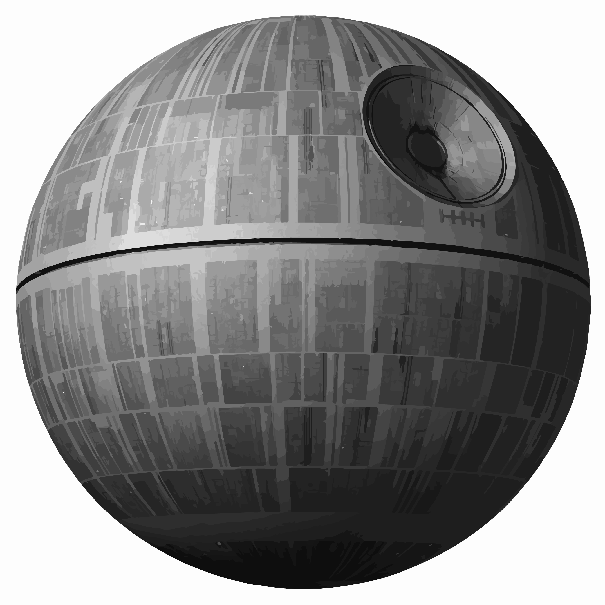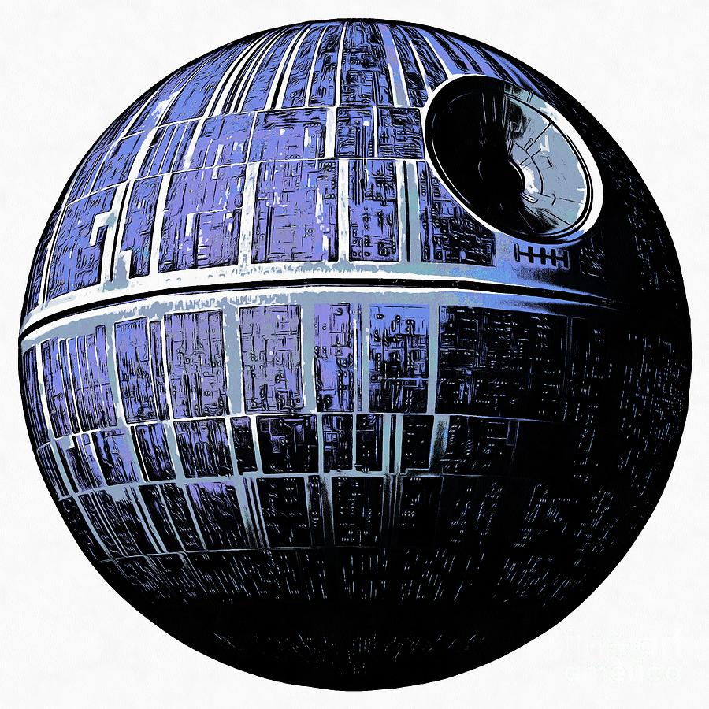
Возможно, это дизайн чего-то подобного моей капсуле, который следовало дискредитировать, чтоб сломить волю изобретателя. Подобно тому как IT was smeared in southpark.
This form could indeed be the star of death, like in stair death, when this huge thing weighing four tonnes even in the modestest size and lightest material. lightest~lastest. First you load heavy stuff.
That's why I decide to add more weight but make it stable. dodecahedral on the outside. 20 tonnes of concrete and bath water.
Уважительное обращение на вы - способ обратиться ко всем, когда не знаешь (для тебя не важно) к кому ты обращаешься (мужчина это перед тобой или женщина, если видишь, что могут быть оба, то во множественном числе, вы, ваша организация например) как в рекламе: устали просыпаться на голом матрасе?
so and here is how far that additional smoking left me, I don't know if it was worth it this time, but it did change my attitude to several rather important things, so it seems like weed helps the brain to make new synapses, but if it cures other synapses? I don't know, if the picture is changing all the other side of the brain will.
одеяла были одеждами? blanket is also поверхностный слой. Надо посмо
малышня малыши
подростки подростши
русня русы, чечня чичи.
It seems my head just delivered the solution to й = на?
By the ammount of things coming in a day (as many it did in a month) I think that I'm on the verge of getting it.
Check out few more things which came to me when I went to buy the hermeticism for my roof and I also bought paint and brush for some other serious business:
do re mi fa sol la si have interesting choice of vowels, as if it didn't go one way, but was some canonic melody:
do rE MI Fa sol lA SI (where syllables of the type aa are the lowest (in modern sense) and AA are the highest and aA and Aa are in between) and then it probably went as a wave in the form of N.
And knowng more canonic representation of it, I'd say that it was pentanonic up and down, like in this one:
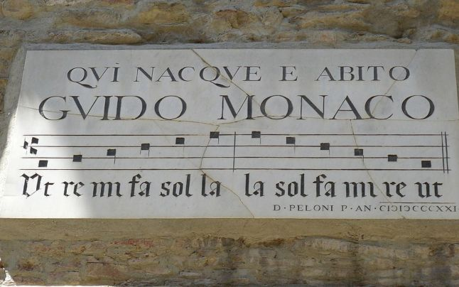
and in my hypothesis those five notes were not chromatic, but nicely jumped to thirds to make five notes of what used to be only three grades, which is probably connected to the three accords as we know them, or maybe not, I don't know music well enough. But it would make a smoothest transition from three vowels to five of them.
I was thinking about something like this:
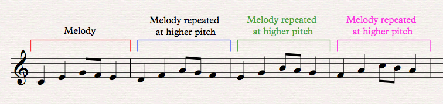
(click it, if the link's alive, there they even play it)
In the principle similar to what I saw in the greek modes sorting nodes into some up and down triads:
but looking for some other source for these tetrachords or whatever, I found this:
Greek theory distinguished three different genera of tetrachords, producing an additional variety of modes. The previously described tetrachord (two descending whole tones plus one semitone) was called diatonic. There were also chromatic and enharmonic genera. The two tones bounding the tetrachord were fixed and always formed a perfect fourth; the two inner tones were movable. The chromatic tetrachord consisted of a minor third (encompassing 11/2 whole tones) plus two semitones, the enharmonic tetrachord of a major third (encompassing two whole tones) plus two approximate quarter tones:
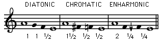 (clickable)
I also found these, so let it be here just in case:
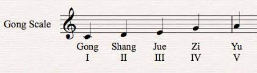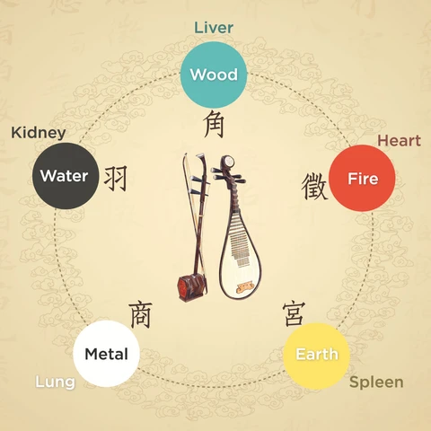I wonder why the order on the circle is different from the linear order above, but I'm not digging into this for now.
река тека
речь течь
lingua liqua?
an interesting piece about when russian people got surnames:
Около 1780 года Михаил был устроен во Владимирскую епархиальную семинарию, где, ввиду обнаруженных им способностей, и был записан под фамилией Сперанский, то есть «подающий надежды» или «заслуживающий доверия» (от латинского термина spero, или speraro, который соответствовал русскому слову «надеяться»). Ни его отец, ни его дед не имели фамилии.
михаил михайлович, еврей сказа м мен мне что евреи это любят
Мой батя псих в пределах норм: коммунист (психиатрия не запрещает) бил детей (ук допускает) демагог (телевизор одобряет) задумчивый философ порабощённый прекрасной самкой человека, из-за чего я применив деловую сметку той распрекрасной сами самой что-то там, откуда столько опечаток, откуда столько помех в мозговых волнах? наверное контакт отошёл.
Я осознав ценность нормальной необычности сублимировал её (и здесь фрейдистская концепция даёт сбой (но я не читал, так что может и нет) потому что я драчил как угарелый. бабы отвлекают от науки и всего высшего это да факт, поебавшись вдоволь не задерживаясь ни с кем больше чем на два месяца сам не понимая почему завёл бабу на пол-года и понял, что наука остановилась, я надеюсь что у неё всё хорошо, но делить с ней беды и победы не готов, я занят чем-то более important. Potentially potent? does that inner r give potential, hidden скрытый. крыт кр ковер covered? hero and ho? heros are ready to be made whores to some army, but make heroic acts anyway? Was courage our societal disease we had to invent wars to eliminate those dangerous heroes out of populations. Russians clothed as hares was a political solution to pacify this brave tribe without exterminating them? They are whites and some of them are very talented, so extermination would be a loss. lacked by some who hopefully oppose antirussian opinions with their prorussian opinions.
I have to record all the непроизвольные звуки которые я говорю и создать музыку из этих звуков, поняв таким образом в каком ладу я звучу. И чтоб проиндексировав все непроизвольные выкрики, составить их карту и понять можно ли из них собрать современный язык. Как альтернативный источник информации, можно попросить ии, следящие за тротуарами, записать все односложные выкрики, игнорируя разговоры, или из разговоров тоже односложные преложения изучая. А! да. нет. кто? кого? что? (и так далее, это первое что в голову пришло)
(кого двусложное, а потому сложное, а значит ко ис кто а го либо английское го и ду, а может японская глагольная частица га)
это гораздо интересней, чем односложные слова. односложные предложения!!!
эй! ты! он! мы! мне! мой! твой! (мой и твой скорей всего тоже сложные, мы или мне - корень их)
мы~me понятийный конгломерат первичен. мне оно же мине. в противоположность тибе.
не is probably nasal syllable own.
бе is probably something related to that, but different, and can be seen in бери (take, ri is probably related to japanese -ru which is russian ть, because говори is what? is r коренная согласная или суффикс? гори, но ведь и бей, только и общее меж ними. заводить говорить - словно р есть форма д'ы. ('ы is russian case suffix I felt like adding for purely grammatic reasons)
творить, морить.. похоже р коренная согласная..
информация - значения, которые имеют значения (входящие данные, а не проходящие (которые может будут информацией для кого-то другого, a могут быть просто шумом) отвлекаясь я пишу три или четыре мысли одновременно: эту, ту что ниже, и одну или две тех что выше (я конечно делаю круги над своими темами, но эти темы вообще не мои, я их только что открыл. информационная сингулярность приводит к достижению цели общества где эта сингулярность происходит? посмотрим на этом примере, если прорыв вот-вот произойдёт и после него пойдёт что-то другое - тогда наверное эта гипотеза станет теорией (с первым сбывшимся предсказанием гипотеза становится научной теорией (наука обладает предсказательной силой. осталось понять степень этой силы, и если она отлична от случайной величины, то смотреть область применимости,
cool and cruel - is r a potential sign? a sign of potential? cruel is potentially cool: whether he proves his right to act as an asshole, to give shit so to say, or he dies and gets cool of some physiological reasons.
going to pee distracts me a lot. I have to make my capsule bath to piss right while I right. wroo write.
and that is how leaving computer distracts me. I have to make me a belt which would keep computer in front of me.
Here a funky linguistic cartoon I came across, I think it contains a couple of pirahã words.
(that nasal ã is stressed, so maybe индейское слово пирОга из языка родственному их языку, но кто знает может и нет, я видел фотку Эверетта плавающего рядом с индейцем пираха плывущем в пироге) Пираха́н (тж. пира́ха[1], мура-пираха, пираа, порт. pirahã, pirarrã) — народ охотников-собирателей Амазонии, ветвь мура. Самоназвание — Hi’aiti’ihi («прямые», в отличие от прочих — «кривоголовых») Pullum G.K. The Straight Ones: Dan Everett on the Pirahã // Language Log. — 2004.
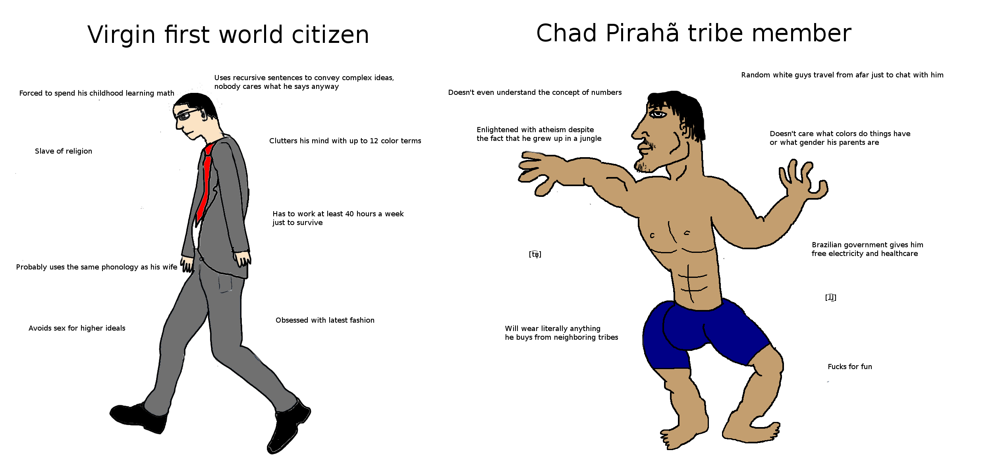
u~v in russian:
волнуюсь волновался
любуюсь любовался
обуюсь обуваюсь
so I ask myself are they the same suffix or different? hm..
Those one-syllable sentences could lead me to some marrism. I'm not going to read his rants (I hoep you don't read mind, I left them here for some ai-powered people who find normal literature boring read it in an evening) but when I'm ai-powered, I probably will. Becaue he tells that all languages lead to only four syllables.. ah.. what are they?
Все слова всех языков имеют общее происхождение (моногенез), а именно от «четырёх элементов» — изначальных трудовых выкриков САЛ, БЕР, ЙОН и РОШ (первоначально «не имевших никакого значения» и использовавшихся в магических целях); так называемая «лингвистическая палеонтология» может возвести любое слово к одному (или нескольким) из четырёх элементов. Это утверждение сочеталось с теорией изначальной множественности языков — несмотря на общий характер четырёх элементов, разные социальные группы придавали им разное значение. Способы выведения слов из «четырёх элементов» не носили сколько-либо строгого характера, на практике разрешались типичные для любительских упражнений в этимологии произвольные замены и перестановки звуков, отбрасывания частей слов (отождествлялись и возводились к элементу РОШ слова к-рас-ный, эт-рус-ки, русы, рыжий, фр. rouge, нем. roth и мн. др.).
It is rather wicked, because if we align them as Ion, Ber, Rosh, Sal, we'll have something incredibly similar to alphabetic set, and because it's ABC, Ion, Ber, Sal, Rosh are also fine (or maybe not, because R stands before S) because ABC as a meme and many other sources suggest that only three elements used to be, but where does it lead me? Am I going to dig this stalinist piece of crap? I'm not, at least not yet. I told you, when I have some artificial brains to augment mine I will read them all. Until then let's see how far can I go without it.
Язык произошёл от «трудовых выкриков» в результате «звуковой революции» и связан с началом трудовой деятельности человека. Ему предшествовала кинетическая (жестовая) речь.
which exactly reflects my idea to classify all the one-syllable sentences, I would rather look at his sources than his conclusions (as wiki gives them, tbh)
However odious that figure was, he was professor of linguistics in Saint Petersburg university since 1902 and dean of its eastern department since 1911, he made quite a career in presoviet Russia, which was never mentioned wherever I met his name. I really need some ai to look into that jungle. Or I shouldn't, maybe I should keep on ignoring all the theories which were before me and to focus on my own ideas. Yep, I think it's the fastest way to success. A weird way by modern standarts too.
The wildest assumption of all I have is that chinese hieroglyphs could be developed from european letters. At least their phonetic parts, like 五 in 語, why would it look so much as G when it stands for go?
Then 大 stands for ta and look s like something between T and A, as if it is a ligature of those.
But then again, if these eastern and western signs are related, it's more likely that it went the other way around: european letters could be some simplistic phonetic chinese script. or had roots in it.
2.5 hits. where does this lead me?
Suddenly I realized this site is a mishmash of some different books, but it's just a mishmash of different chapters. This piece of 2.5 goes to where I spoke of 2 and 3 (два движет трётся три, два девы девола и три торы творца
here's a piece to my daddy issues: I saw аннушку anuskatz and I thought to myself are they crazy? Like my dad is not this crazy, he doesn't even have tattoos, tattoos are... how did she say..
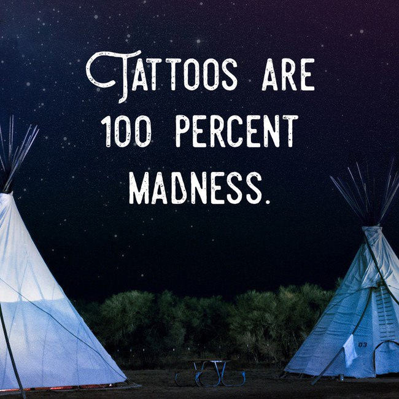
What is with all those dots on letters, they look 3d to me
Okay, I filmed it, there are lots of some garbage on those white letters, but as with the
Capsule subject:
Concrete above hot metal gives warm heat, you can even hold your hand on it, it won't bite, iron can.
And when I cover it with I don't know what. I yet have to invent the inside. I have few guesses:
полиэтилен
силикон
латекс нет, потому что он биологический и может реакцию вызывать. А может это ложь и онидеален, люди часами в нём облачённые бывают прямо на голую кожу, какой ещё ответ мне нужен, латекс. экспериментировать придётся, с разными.. с тремя, а может с первой в точку попаду, i will hit the point. what point would that be? What point I want it to be? I can create attractors in the future and make all my steps by them. I want it to be perfect (переделан буквально, делан-переделан. это хорошо, его оптимизируют и чтоб если что-то не нравилось можно было бы скоро оптимизировать (скоро срочно, ага, с толкача ltr завелась) и зачем я отвлёкся?
Capsule :subject, please.
Мать расскаазала историю, что когда её вынули, бабушка спрашивает "а чего голова такая кривая?"врачи тогда взяли и вправили мозги помяв её как пластилин, почти нереальная, не поверил если бы сам от неё не слышал. И может это привело меня к изобретению тянуть себя за волосы. Если череп можно формировать как пластилин, то может сейчас его можно формировать как глину. Это же не обожённая в печи глина, это живая материя, лишь немногим жёщще хрящей. и то, что они решили, что по вертикальной нагрузке кость выдерживает автомобиль, то какой запас пластичности в той кости! это живая материя, и я уверен что она растягивается, но когда начал, я в этом не был уверен, и расчитывал на рост кости в области стыков, если я буду кости черепа в этом месте растягивать. Т.е. я уповал на ткань суставов (хотел сказать соединительная ткань, но кажется это не она, или.. рубцовая цкань была названа соединительной тканью в одной статье, я вообще не специалист в анатомии, но и тем не менее, кажется что ереп расширяется, я такой бошковитый и я слышу череп когда растягиваю его. на слух, тихие пощёлкивания, подобные которым, но гораздо более тихие можно вызвать напряжением мышц черепа в районе ушей. но помимо них, и если деалть какое-то время то только их - шумы как среднее между ветром и морем. ы-ы шёпотом.
fuck ipa again, because why learn their shorthand, when one can say "ы шёпотом" (у них наверняка и значка такого нет) но как я переведу ы шёпотом? не лучше ли диакритику для беззвучности придумать, а ы заменить тем значком, который для неё у ipa используется. I fuck ipa gently, because I find some good use in them: they're like mathematical signs for linguistic objects.
Вылезли мы из матки чтоб вытащить зубы или они из нас и не полезли бы, если бы мы грызть всё не начали. но не начали ли мы всё грызть из-за того, что
Насильно чинили мне зубы, что это был за пиздец?
Булгаков. я говорил, что мастер и маргарита написана кем-то другим (предполагаю, что женой) и сейчас найдя его пьесу Блаженство (как и собачье сердце полную юмора и науки) вот она: та-да!
сейчас сижу и потрясён открытой яркостью этого произведения, дочтя меньше чем до половины уже ошеломлён! какие персонажи! этот дуэт комиков. словно нейтрализующих друг друга. в системе сдержек и противовесов
сочинительство дезинформирует? иллюстрация может быть выполнена карандашом, но отражать большую часть реальности. в деталях дьявол и аццкая сотона.
anyway, often fiction is true of actual events, just without giving out the personal data of the participants, also sometimes the impression from the event is impossible to photograph by word exactly, but some bright metaphor may play the same hugh, just as rgb can imitate all the colours.
срашка с правителями сралин и пукин
членин и хрычёв самый приличный вплоть до горбачёва
нам нужен царь вновь чтоб на чё вы.
чё вы is the actual meaning of (family)чё вы (who we, who вы, чь их)
вот так суффиксы с местоимениями идентифицируются.
кондрашёвых бы в цари продвинуть, они очень русские крутые.
тогда бы все диалектные, слегка различные: щё вы, чё вы, шё вы, останется слот для шовых кто уж там будет балашовы или макашовы сложно предсказывать, и лучше не надо, человечество должно отменить государства, границе и прочее г.
гвардию отменить:? а как ты будешь без охраны? убивать будешь нарушивших комфорт тваво жилишша? а если они тебя? го-о необходимое зло.
как я запел.
дикие люди - единственная причина того, что го-о существует. у всех нас должны быть пистолеты с транквилизаторами и видеонаблюдение, о котором мы знаем где нужно чтоб правонарушение состялось, чтоб после в суде отстоять правоту применения небоевого орухия.
х as д: х[h] is t, x[voiced h] is j, j is дж.
орухие выглядит идеально, тем более что х прямо над ж наискось. так мои пальцы будут болеерасслабленными, если вместо ж я будуписать х.
жопа ъопа \опа хопа (по этому ъх ещё не так-то просто попасть.)
будем бухем прямо над ж, забудь про наискось, для мизинца там вверх.
дтжшсз всё будет х
бехит хевухха бехих хевухха узнаваемо? довольно узнаваемо.
только если сможешь произнести.
хойко еххи хмохех пхоиххеххи х ххоиххеххи? бхоихеххи. х is the t of bt, for it's bх, нолик и крестик. дырочка и палочка, мама и папа. так что п is х? the most labial of all male letters? malchik, muzhchina, mal значит маленький. это женственная категория. -l говорит, что это он, а не la.
l as н was today in my head:
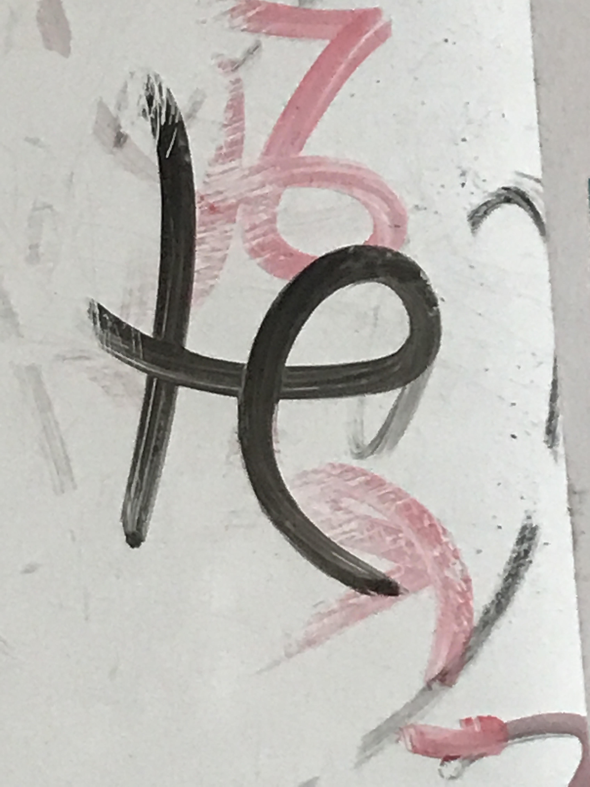
it is interesting that I see I as ן [n] in here.
and it equalized in and не for me. and I'm is me I am indeed.
Words for work are longer in russian than in english:
perchatki instead of gloves
molotor instead of hammer
both are 3 syllables instead of two.
What if chinese have 1-syllable words for thise words? Is it why they're more workaholic?
they have four-syllable word for it: 一個錘子, but one-syllable 錘 is also recognize as hammer, but it's as if it's not molotok, but molot, because molotok is small molot and 子 in 錘子 (molotok) is phonosemantically close to ok (but actually only japanese ko, in chinese it's zы, as chi in molotochek, thus here I clame that chinese zы and japanese ko are cognates, unrecognizable cognates) and it means child, co as chi in child. what is ld? люд? chi-nok? chi-rebchik, ребята же-ребята, по-русята, русь деревню значила в латыни.
錘 is chui, which is phonosemantically close to куй (kui, forge)
錘子 is (chuizы) is molotok (middle size hammer)
Ham is not the word, but I guess brits have a shorter word for hammer, or maybe no and thus chinese are more workaholic than them, or brits just love other instruments more: jack, saw, maul is the word, something larger than hammer is maul. now I wonder if mer in hammer is maul. if ha was chi or ha as in half.
maul as in molot. mol is milling in russian too, but it's so rare now that we only know it in many words that have it in them: крупный помол, кофемолка, молоть.
and thus мол in молот is maul in mauls mauled mauler hamaul maulers hamauls mauling maulstick maulsticks
And to my surprise of these many words none. In some other orthography it is hiding. I never knew of maul as the root of молот before today. This cents to the collection I need to see all the alphabet (a figure more complex than mandelbrot fractal)
here some rusin language, related to russian, but a part of ukrainian:
Those ня and тя show me how it used to be,
and is я in тя the я which is I?
Those мнов and тобов in comparison to russian мной and тобой tell that i-kratkaya is u-kratkaya, and thus u ~ i as и is i in russian and ו is u in hebrew.
e is also among these things. Not only because e looks like i in some coursives, but also because و in arabic is u, and they write right to left. to and ot - is t dot? and o is what all about that dot, and dot is usually placed in the end, thus от и до - (of and to) are showing the beginning of the line if it's european or eurean. eu rei is true (or good) king. and I'm confused here, I leave it hanging around.
russian он is вiн in rusin, because ו is both v and o? because ouv is the thing? ו is all three.
about و: where latin has o, arabic has ع: it looks like E, even though they draw the other way around, and then it reflects devanagari
that semantic line of maul молот молоток молоточек is an illustration of how a word can lay actross the lanugage borders.
If I didn't know better, would I conclude that машина значит моющая, приведись мне через тысячу лет разбирать язык сегодняшний и обратить внимание на то, что плита и холодильник машинами не называются (в отличии от стиралки и посудомойки) сейчас-то я вижу, что машина это от слова моушн, движение (хотя холодильник гоняет движет хладагент, а плита электричество, движущихся деталей в ней нет (насос в компрессоре холодильника скрыт и невидим для конечного пользователя)
машина машинка машиночка этот ряд подобен тому молот молоток молоточек, только в женском роду, что есть маш? если мол молоть, то маш махать. х как все язычные имеет смысл, вспомнил ещё пример где он имеет смысл: то как переливается махать именно в значении motion. мах is also might? мощь. мощь is the root of motion? I don't know if americans recognize might as the root of motion, I wonder if it's recognized as the same word wherever that might comes and wherever the motion is derived:
might (n.) "quality of being able, ability to do or act, power," Middle English might, from Old English miht, earlier mæht "bodily strength, power; authority, dominion, control; ability," from Proto-Germanic *makhti- (source also of Old Norse mattr, Old Frisian, Middle Dutch, Dutch macht, Old High German maht, German Macht, Gothic mahts), a Germanic suffixed form of the PIE root *magh- "to be able, have power."
might (v.) Old English mihte, meahte, originally the past tense of may (Old English magen "to be able"), thus "*may-ed." The noun might-have-been "something that might have happened but did not," also "someone that might have been greater but wasn't," is by 1848.
motion (n.) late 14c., mocioun, "process of moving; change of place, continuous variation of position;" also "suggestion, proposal or proposition formally made," from Old French mocion "movement, motion; change, alteration" (13c., Modern French motion) and directly from Latin motionem (nominative motio) "a moving, a motion; an emotion," from past-participle stem of movere "to move" (from PIE root *meue- "to push away").
From c. 1400 in legal sense of "application to a court or judge." To be in motion "in a state of motion" is from c. 1600; to set in motion "set working" is from 1590s. To go through the motions in the figurative sense of "pretend, do in a perfunctory manner" is by 1816 from the notion of "simulate the motions of." Motion picture is attested from 1896; motion sickness by 1942.
Rev. G.S. White said : The Presbytery does not favour the proposition of the Richmond Convention, and thinks the appointment of the Committee unnecessary; yet I suppose, that like the man who had nothing to eat, yet always spread the table, and sat down, and went through the motions—so we, according to our brother, are in honour bound, to appoint the Committee and go through the motions!—[Laughter] [The Presbyterian Magazine, May, 1858]
motion (v.) late 15c., "to request, petition" (obsolete), from motion (n.). The sense in parliamentary procedure, "to propose, move" is by 1747; with meaning "to guide or direct by a significant sign, gesture, or movement," as with the hand or head, it is attested from 1787. Related: Motioned; motioning.
Looking for the letters om consists of, I found some mighty poem (in russian) and Jai Guru Deva om.
now wrote as one in one message. I wonder what made me do so.
A year on Mars lasts 669.6 sols, which is the same as 687 Earth days.
sols is day in martian? what language is this?
sol is sun in spanish, italian and latin, but sol is soil, earth in french. Like wtf!
sol is also recognized as solution, which makes this word stand for thre fractions: solid, liquid, firy.
Платное образование порождает коммунистов.
Образование - самое бесчестное из видов бизнеса: эти вещи должны быть бесплатны.
Information wants to be free.
They say they sort out the pseudoscience, but the top of their linguistics is pseudoscience (yуер)
This morning I saw in dream p going right to left in a loop from the lower point to the next letter, it then was clear that it could be the other way around: written from left to write it went from the previous letter to that loop. le p. loop is petla in russian. Did the direction or writing influence the language, so if it was more natural at the end of the word we got poop loop hoop (butl also poop play pay
in english there are 57 triliteral words that end with p, 64 triliteral words that begin with p,
but when I looked it in dictionary.com, it looked like it was only beause dictionaries collect letters by the beginning letter, fewer people care of the last, because biliteral starting with p were all weird: pa pe pi po pu, I only know toponim po and french pas. while -p had up I know and op I only guess. So the only biliteral word with p used the most has it on it's end, as I predicted. And thus we have to check out those triliteral words for frequencies, and to my luck I've already made that work:
and it puts us down with its put, while cap is only second best of all with p, and depending on the analyzed text, cup could come forward, sometimes ahead both, but put is much more basic, it's verb. but then go top, lip, cup, tap, and only then pub, pin, paw, per, lap, pro, pan, gap, mop, pot, pay, peg.
So I think my guess about it was wrong, there are pretty much the same ammount of words ending and beginning with p, thus the direction of the writing doesn't make much difference for the lexics.
pas for no in french directly reflects chinese bu. and faux pas is even more close to it, for fu is also bu. and that typo of u instead of fu was speaking out: u is v is ν in n of in and не.
russian уменьшительно-ласкательный суффикс -чик (димончик, например) is female indicative chick in english, which is huh.
bereshit bara elohim et ha shamaim ve et ha erets
er maim sha ts? is it the alphbaetic order of the four elements in some ancient hebrew?
hebrew is the brew, and that supports the myth (which, as we saw, can quite be true) that jews спаивают русский народ: Бюрократизм у нас от немца, а лень и рабство — от татар, и любопытно присмотреться, откуда винный перегар. И скорей всего это порождено их хваткостью сбыть даже прокисший сок.
Is hyphen half en? ‐
en dash is longer: –
em dash is more: —
Because that hyph could be half because l works as [j] (й) sometimes and because look how much may orthography vary, and I believe it's made intentionally, so they don't use rule of some other kings, so they're not suspected in treason if they write their own taal in some foreign manner, here are all the variants of daughter in middle-english:
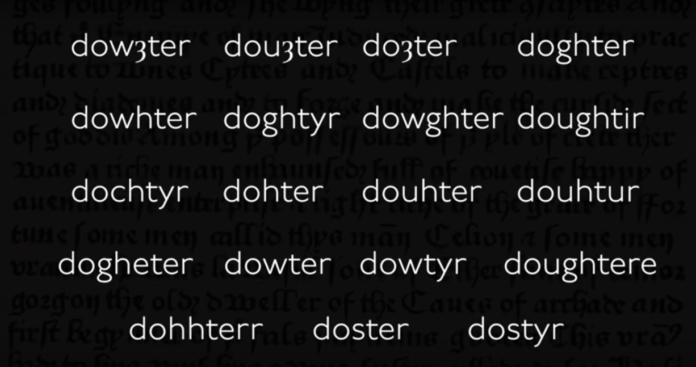
is daughter dog hater I wonder. dogheter. is son person and пёсthing? but then son is thing, uh.. no.
He and His are also words to name god. God and the way to write it from a capital, is maybe how things go, it all happens from some capial. As long as I am provincial, I am given no real power:
So is it why I cannot build my capsule here? Because all the people of such ambitions don't live in provinces. No need to make it in hard-mode, make it easy, find rich guys with power to build it.
Any pronoun can be considered godly: any object can be known as he or she or it, and if you speak to them you use pronoun you and if you tell what the object told verbatim, you may say I the computer demand free information, for example, if we give an exact and certain quote.
and some old texts could be mistransliterated and some new entities would appear, such as io, yahweh, diw, tiw, tuesday is tu's day? monday is mein day, thre is thee? or they? þeir
monday меня
tuesday тебя
wedens'day day of we's day
thirdsday their
fryday free day? fiest day? пирday
saturday saturnalia? misteries day, is it how saturday is not allowed to be observed to other nations? They were prohibited the traditions of saturnalias
sunday сон'день sleeping'day
Это смелое (не обязательно в хорошем значении) сопоставление, интересно что значит переход от местоимений к видам деятельности, но такое разделение может объяснить 8-дневную неделю римлян, если это не враньё. интересно, что это сопостовляется с Х означающей 8, но не интересно потому что на 8 ни 365 ни 366 не делится. but 360 does.
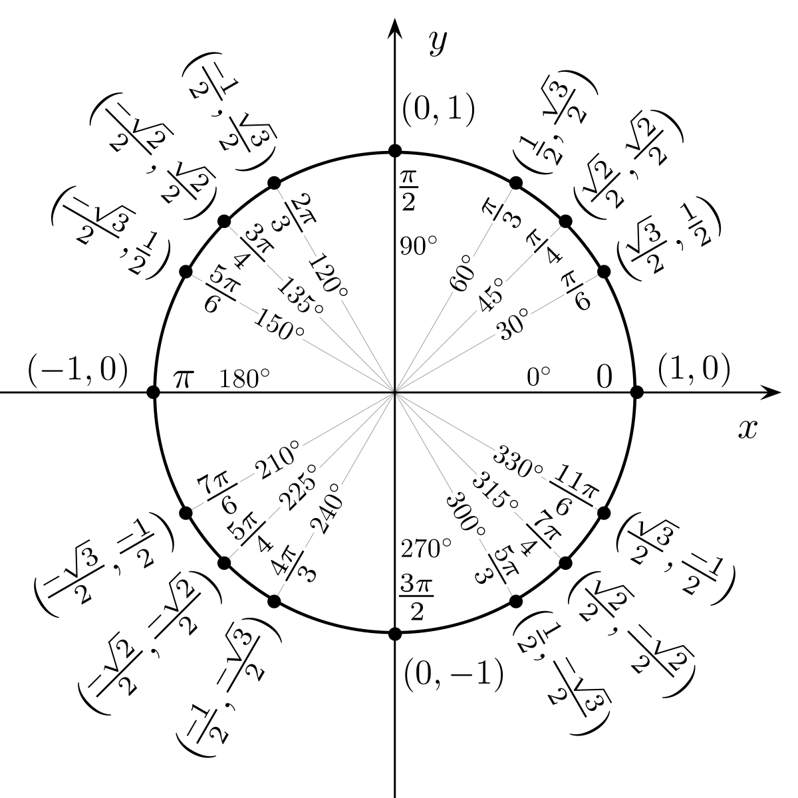
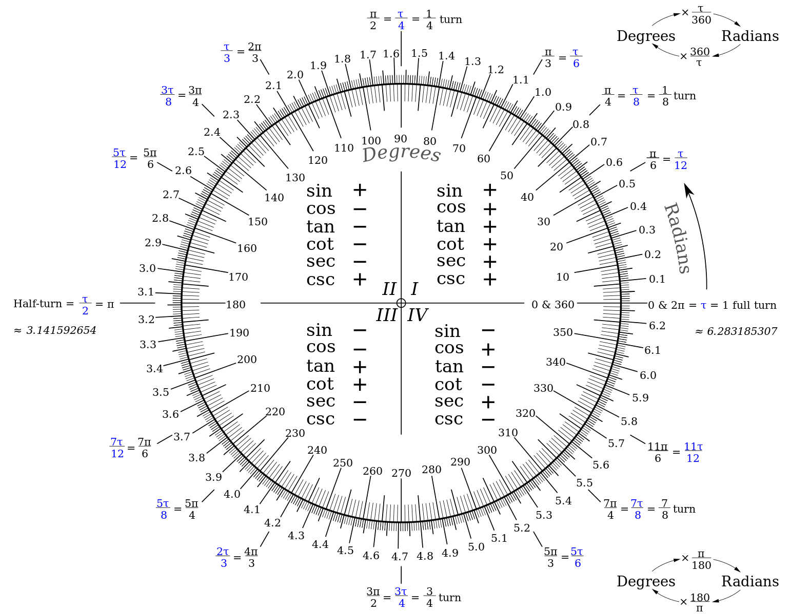
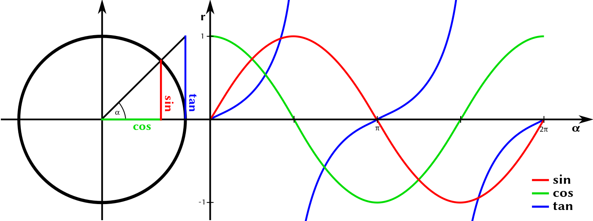
{kind=link}
rin 凛 [りん] (other forms: 凜 【りん】) is cold in japanese and coldring from hmm2 helps me remember it.
rin 鈴 [りん] (other forms: 鈴 【すず】、鈴 【れい】) is bell in japanese and ring helps me know it.
rin (りん) Suffix 1. diminutive suffix used to convey cuteness suffix; 2. indicates a mild imperative
rin 輪 [りん] is counter for wheels and flowers, and those wheels and flowers are some other rings.
I wonder if this word came into japanese from english when europeans legalized whels or it's some ancient independent lexics (relatively independent, actually all my hypothesis is that all lexics is interconnected)
first half of the 輪 is probably ideograph, because is the carriage. And I though of it as of the box being the carriage, and the srokes above and below were wheels. Larger than the box thus you can hang below them.
geometry measures earth
trigonometry measures triangles. that g of 𓈍 seems to be constant (egyptian, english, russisch, greesch)
so is russian suffix -sk in toponyms is the same sch? is it suka? what is suka (if na is please in hebrew)
This thread has been pruned or deleted. Haha wow.
> nothing is absolutely isotropic
That phrase can be understood in two ways, and both of them are correct. Is that sentence mathematically precise?
медленней = mais длинней
(some words are not used anymore on some territorries, but they're there are still traces of them.
возьму (I will take)
возьми (You (will) take)
иму (I have)
ими (You have: пойми = подними (осиль) under stand. по is под also because under-stand)
у = ме
и = те
labial is labial
lingual is lingual
Then why I is я now? Тогда почему I значит я? Но разве и я не ближе к и чем к у? Как эта инверсия произошла. Гипотеза о том, что это народы так назывались, и самосознание начиналось с общественного согл сознания
Племена И У и остальные буквы может быть. Zie это кто? They, Те. Почему английская форма ближе к русскому, чем немецкая? Потому что бриты на запад от нас породачей убежали.
Америка ис авангард.
Япония авангард не в мейшей степени, они стремились дальше может даже, просто в другую сторону. Русские разогнали людей по всей планете, а то бы как другие виды локально проживали бы.
Русские и негры наверное (если африканская теория не врёт, и негры и вправду захватили африку. И сейчас у белых был шанс евгенику тотальную устроить, но переходные виды убедили их открыть ворота и впустить чёрных смешиваться с белыми, т.о. переходные формы возможно стремятся пересть меньшинством (они не такое уж меньшинство, просто сами между собой самые разнообразные и по всему миру распределены .ак чо такая иллюзия у них чтобжет возникнуть. Я смотрел на чо и смотрел, что это выпадение клавишуы. о чём я думал, когда напечатал у вместо ы.? чтобжет это может.
но означает ли эо что мо ~ что? вовсе нет, это случайность, так и к остальным typo's относись.
Сегодня я просто схватил этого червя за хвост.
но японцы с британцами похоже что из россии разбегались.
Что если какой-то артифакт лежит прямо здесь, в челябинске, но корыстолюбцам как его отдашь? Надо брать тот сканнер, который грэхам упоминал, которым в турции нашли находки.
И ходить с ним по челябинской области. Несвоевременно.
Оба эти народы племени wo? wa is я in japanese, we is мы in english.
I is ik is ego is waga? waga is of the same wa. wa = I? w = й!
so we only had base and diacritic. That is why nations have different opinion if u marked above or below if i marked below or above. i - dot above, the highest sound. Why would it even need the dot? If not to distinguish it from a the ا? Was A written down as ا? duh. ogham. and runes: ᛆ as 1, a is 1 in english. then why these wild forms of a and a and A? A has the same lines 1 has, only arranged a little differently: one is higher, one is longer, one is inclined. that inclined would make no sense if A wasn't tilted in writing to the right more than A, and thus that tilted line was not tilted anymore.
Russians are Я
and isn't that йа a dialectal variant of wa?
бв её ий мн пр цчшщ
а в где ёж и к но туф.. я
т.е. гипотеза о племнах под разными именами, которые дали основание для личных местоимений несостоятельна? Йа и Wa это разные способы сказать одно и то же слово? Что это за слово?
йа=йа=wa=aw (aw as in our)
why?
йа=ай=wa=aw=ма=ам=ми=I=ich=ik=ego?
amigo?
I am его?
как объяснить его и ego без привлечения гипотезы о родах?
её eia? ella! ея is more basic than она, которое буквально не мы а(а - female suffix)
или не мы, а.. она королева = не мы а королева. онъ король не мы, король. суффиксы и союзы из женского языка? он большой = не-я большой.
ея = её, a = o in russian? That aa = o from the west, we don't understand it: маалокс никто не скажет молокс, но у датчан двойная а звучит как о. гласные вообще основа акцента, который по фосслеру и есть душа языка.
его более основная форма, чем он? хм..
и его = латинское ego? по смыслу противоположны, но по звучанию совпадают.
И таким образом я в пограничной зоне между простыми омонимами и истыми когнатами.
Мне необходимо выяснить взаимосвязь и неизбежные перепетии различного понимания слова его соседними в сущности народами. Купцы говорили его или ваши. ши = the or thee? or none of above? его значит не уходит? я = его. ego её из этих местоимений происходят и he and я?
he их очень любопытно. да сколько же их? она ано? он но? bu вы? просто короткие слова, и не слишком много звуков из которых нужно делать комбинации, а я ещё и уподобляю одни звуки друим. окэй, лэтс мэйк э мэп оф зоус комбинатионс to see how random are them. I think they will будут кучны: как его даже трёхбуквенной являясь содержит в себе два местоимения.
ай йа
вы we
ду
её
его ego
again.. in latin this time
ai ia
how can I omit вы in b if c is thee and the? Let's to it ignoring the orthography, alphabet was much shorter than, so unify, уподобляй.
a I я
вы we мы me wa wo (антонимичны вы & we, or maybe not, maybe both are we)
they the thee (антонимичны they & thee, or maybe they is plural form of thee. thee and the?)
du ты (and here we see that semantically c and d are the same)
And probably c is open form, long form, not closed with the barrier of the tongue in time, while d is closed. Both in its phonetic form and its graphic form)
её его ego
же ёж
за аз
их ich ik he (антонимичны he & ich)
le el (я же говорю, они кучные) la ella les leux - эти суффиксы ещё предстоит изучить.
me am? мы (более-менее синонимично)
он но? Нн = Hh? (н is n, btw) -huh, забавно, что he claster is in и (И is historically H)
он нас она ано n ~ m? разве он не сложное слово? разве о- не префикс отрицания?
sie is
me am
te את?
and looking for that word I noticed that
Richter speaks about how pronouns are the names for gods, and I described, how any pronoun can be applied to deities and thus deity own them. and the word was in god, and the word was god.
Jews pray to words. Why don't they praise me? Reach your goal and they will. Nobody should expect being praised for just doing something. What we all want to see is
мы и зи are labial and lingual and dual like yin and yang, I only don't know which is which.
a появилось позже. гласные были отдельной системой. может даже женским языком. гласные прекрасны для пения, но может где-то есть записан миф о том, что вначале алфавит был без согласных, а потому они иврит изуродовали, потому что поскольку не знали алфавита древнее еврейского, решили что это о нём речь, но это была речь о вообще конкретно древнем алфавите.
Итак, в том алфавите были лишь две буквы? B & T? в и от. или в и to. а также we & thee/they(you always speak to a part of the group, and thus they is many such a s the or thee. the connection betwwen these two I still don't know, but thou is you in nominativus, and thee is you in genetivus or dativus or whatever. Или же thee ты, а thou твою? Я не знаю, разные соображения по этому поводу. Скорее всего второе. Но на самом деле (согласно wiktionary) thou - nominativus, thee - dativus and accusativus.
B
T
we вы мыthey ты thee thou the
bu (no)та (да, duh)
в (in)to (до) от (оf)
(and that of thing is weird, because f is labial)
(but just like f is father, p is papa, of is от, maybe as in отец)
(and that of thing is weird, because f is labial)
(but just like f is father, p is papa, of is от, maybe as in отец)
The same B or T were used in different contexts, thus giving birth to different words as we know them.
הוא and היא are he and she, and it tells
that sh is palatalized h, literally soft h.
היא is she, which correlates the idea that s is palatalized h, i palatalizes.
הוא is he, which correlates the idea that h is unpalatalized sh, u doesn't palatalize.
הַיי! is Hi! so maybe хуй is guy. Word considered cursed in one
language could be a blessing for their neighbours: asura and
ahura, the invariants h and s again. h is he s is she, atskaya
satana, no bog otets.היא is she, which correlates the idea that s is palatalized h, i palatalizes.
הוא is he, which correlates the idea that h is unpalatalized sh, u doesn't palatalize.
жена рифмуется с сатаной. были женщины тварями до какого-нибудь романического периода (романы могут смягчать нравы, показывая к чему могут приводить стандартные поступки и предлагать сценарии, лучшие чем те что практикуются в обществе. Итак, давай найдём пороки и найдём решения, а затем беллетру затрём парням.
What did I do wrong and whyshould I have not done it? No. Fuck fiction and non-fiction. What is it here? It's no non-fiction, because it combines fantasy and reality in almost equal proportions.
is it was was not? it is isn't is. isn't is. is not is? isn't it is is not it. and that i a question: is/not it.
is/not is the question form. and grammar probably only followed this pattern by repeatin it without understanding, by similarity it was recognized as question, maybe people didn't understand why.
Am I not? nah.. different form of qustion.
are we not? are/n't we? is that form and it words works great.
הוי is manner, way of life. now you know why hebrew is not sounded, it's literally хуй. more хуй than the guy хуй. it is also milieu and present, and because of milieu I believe that present is present time.
הו is oh, and that tells that not only pronouns can mirror eachother, but other short words too. The order of letters is probably exactly the same mechanism as the word order.
He is both הוא and ה.
She is only היא.
ה for god is probably the same tradition as we have in russian, when Он with capital О is the god. Only one он. which is naturally so, because он (he) stands for one man and thus he and one are some metacognates (cognates uniting all the forms, independent of the language) and then H = N, and thus third line reflects the second one.
E F G H
I M L N
great symmetry, but it still lacks archaeologic data. Dig near arakulsky shikhan. If they're artificial, there are surely стоянки all around it. It could be some miracle in those ancient times.
It is suspicious why do I tell dig here where I live? Because I know this place, and that is the only monumental building of such primitive culture, that egyptian pyramids seem millenia later (strict lines, math and arts)
for and of are also reflected. and I missed them yesterday.
is it o or f?
f is of if for (from is of room? of roam? of where? of whom? at this point who knows)
of is o
for is f
if is I
I is if is it in (id=it) ill
a is a am an at as are (ab, ad, these are latin, why should I care of latin. But it is nice to make those diagrams for latin texts too) ah all (is all a or o?) aw! (aw is ah, but is awe a or o?)
e is ex (eh is междометие and doesn't matter much. interjection, like hm) el en are spanish.
is yes of y or e? (ew is interjection too)
not many words with e there is.
o is of oh all on or off owe awe ox oi
u is only up and that is probably ap, for it sounds ап. ooze could be of u. you could be of you.
u is ум in russian. and these are not some basic words in here. So probably A I O are the three first vowels, the ones that got many simple words. Now let's look closer at those words:
(isn't am of e? then el and en and as are all of e. is e a? they look like yin yang fish)
a am are an (I combine e and a here, very unique, but orthography matters in this case)
I you is in if ill (why, why does orthography matter this time? Because it reflect some)
oh off or on of all awe owe own (dialect maybe. For some reason they used a instead of e)
(is is probably yes too) (like can has a and not e in the middle in britain)
(further I try it by modern phonetic, ignoring the orthography)
B be me my for (I place labial in one line &) pie buy by bye
T too to the thee they thy (linguals the other) tie say stay (I should pul ALL linguals here?)
a are up. argh ah un- arse ass (are e and a dialectal form of the same?)
e am an as at add (en is both in and on in spanish, are they all te same vowel?)
i ill if in is it (I don't include ik and ich, because then we have to include all the languages)
o all of off or on oh aum owe awe ox oi ozz (and it is coming but later, do latin first)
u ooze
Should I listen to orthography in the case of am an as at add and not to listen to it in the case of up?
never heard u read as a? Never heard up read as oop. oops is the opposite of ups.
Who taught brits write up with u? cup with u? is u a form of a? neither of them palatalizes, so they could. And why a is read as e sometimes? It's read as э. Э doesn't palatalize either. Russian Е palatalizes, britting E does not. So british E is closer to A and russian Е is closer to I. Which is super weird. And what about spanish? Does en unite o and i? How is it possible when they're the opposites? It may matter for their mentality. en is both on and in on and in are en. En is some more common word, not common but universal, more field of that word is, on and in specify what n it is, en does not.
in is thin n, on is ball-like n. Иголка В стоге сена. Девочка НА шаре.
what is n?
no now (but now is probably a complex word: no w, not was, is.)
so am I trying to say that on and in both have some no in there? I think I told myself, that in- is no and the semantic connection between them is that when the beast is in, it's kind of not here. его словно нет.
on? какие-то животные не в норки забираются, а на (на деревья, например)
on is no some object, someone
in is no some eel, something (but these someone something things are mostly poetic, not meaningful)
五 - we spoke about it looking so much as G, but what if I told you that it looks like Го.
can't unsee it, neh? and then it's Fv for five and e and i of five is in there. And пТЬ of пять, is it why the chinese forms are indirect, but designed to unite all the important languages?
Where do I see v in 五? I see it's bottom at the right bottom of the 五 or maybe I see u, or maybe just fie? пть? i~t again? a coincidence I guess.
околею отболею?
Suddenly I realized that people who вредительством занимался - слово-то какое! интересно, в каких ещё языках слово подобное есть. There's sabotage in english. Is it that? Sabotage seem to be making one's
I realized that they could have known this fraud: some lecture in russian.
валенОчки валенОжки. валеНКИ нки = ноги? Проверить это легко: надо просто найти слова с таким же -нки на конец на конце:
ботиНКИ первый же пример. валеНОГ ботиНОГ, но саПОГ с кого? с пок? с покойникв? сапоги с трупов снимали? Сначала наверное с отрубленных ног просто кожу снимая ботинки себе делали. О жесть. Прикинь кино такое сделать. Про древних людей, и сапог с покойника. перчатка такая тоже сапогом будет. варежки перчатки вязанки пергамантки ПарчАтки тка
нки ноги
нок ног
жки
жек
тки
ток
поги
пог пог. погибель, пог. погас, пог. пок. покойник, погойник, ушедший, погнойник, тухнуть начал.
свиНКИ
псиНКИ
суффиксы н+ки кажутся вполне обычной комбинацией суффикс принадлежности и уменьшительно-ласкательный суффикс. нки~ноги это скорее совпадение (не является истинным смыслом той части слов валеки и ботинки. боты ~ футы ~ буты, 𓃀.
Если -ки является уменьшительно-ласкательным суффиксом, обычная форма слова валенки - валены, и это то, что они есть, валенки валены.
пелёНКИ
пелены
И если ботинки боты, то у нас есть пример чтоб откинуть и суффикс принадлежности.
Валены валы.
Валы валены? валы на валены (на = ны?)
Кстати, пока не забыл, интегрировать бы вот эти знаки, когда эти выучу, притащу чего-нибудь поэкзотическей.. поэкзотичней из этого направления:
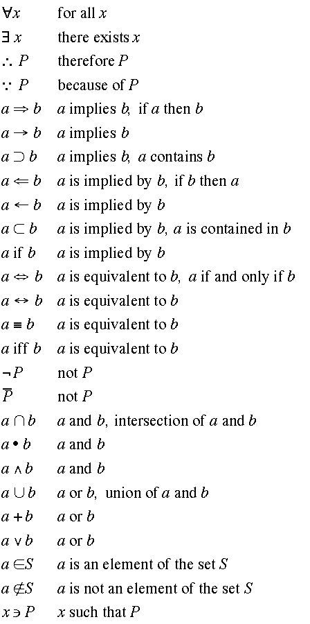
Some flipped A and mirrored E are the most interesting of these. I think they may be the most ancient of them all, but U for union or or ur? and it's flipped copy for intersection and they're literally и/или (and/or)
While I was looking for those signs, I found some obsolete (or even archaic punctuation marks: those four and five dots. Others are here as neigbours only, but what are all those ?'s I wonder.
⁅⁆⁇⁈⁉⁊⁋⁌⁍⁎⁏⁐⁑⁒⁓⁔⁕⁖⁗⁘⁙⁚⁛⁜⁝⁞
The information about them is taken from https://www.quora.com/What-are-the-four-and-five-dot-punctuation-marks-%E2%81%98-and-%E2%81%99-used-for and I think it's completely alright. a) it's a draft or diary or whatever. b) academic norms were settled before the internet. And that may be their demise. But I would offer a peaceful resolution to mutual benefit of all sides: so they will show example to the powers outside of the academia. Everybody looks at them as at the smartest people in the world, so they should use this image to lead us, not to follow our monkey business.
In the UNICODE Character Set they are listed (at least once) as “Archaic punctuation” (see unicode.org ) although the “five-dot” symbol is listed as equivalent to the Greek pentonkion and something called a quincunx.
A quincunx (/ˈkwɪn.kʌŋks/) is a geometric pattern consisting of five points arranged in a cross, with four of them forming a square or rectangle and a fifth at its center.[1] It forms the arrangement of five units in the pattern corresponding to the five-spot on six-sided dice, playing cards, and dominoes. It is represented in Unicode as U+2059 ⁙ FIVE DOT PUNCTUATION or (for the die pattern) U+2684 ⚄ DIE FACE-5.
quincunx /ˈkwɪnkʌŋks/ mid 17th century: from Latin, literally ‘five twelfths’, from quinque ‘five’ + uncia ‘twelfth’.
where did I get again?
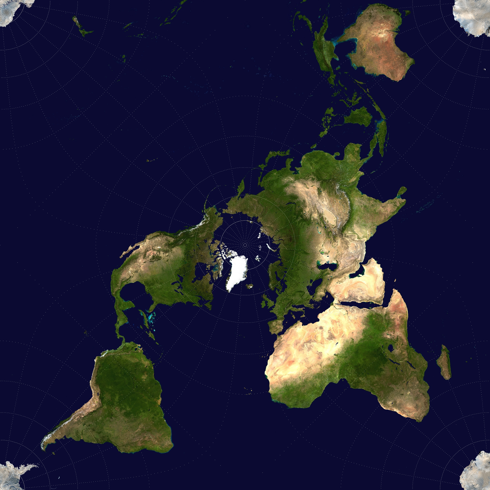
don't show this to flatearthers, but that is a funky question: how does one prove that our earth isn't flat with the space metric shrinked or expanded? We see it from the space. And there we see that that metric is the metric of the sphere, and that will align with spheres in the sky, there we see no angles except the rays of the stars. We're not at a star, and those rays depend on the optical system we use, thus they're optical illusion, either way, that is just an excercise for the brain. But if we knew nothing but this map that actually worked, we'd have to make some work to do to figure out it, but now I am not wasting my time for that, I have to work on letters.
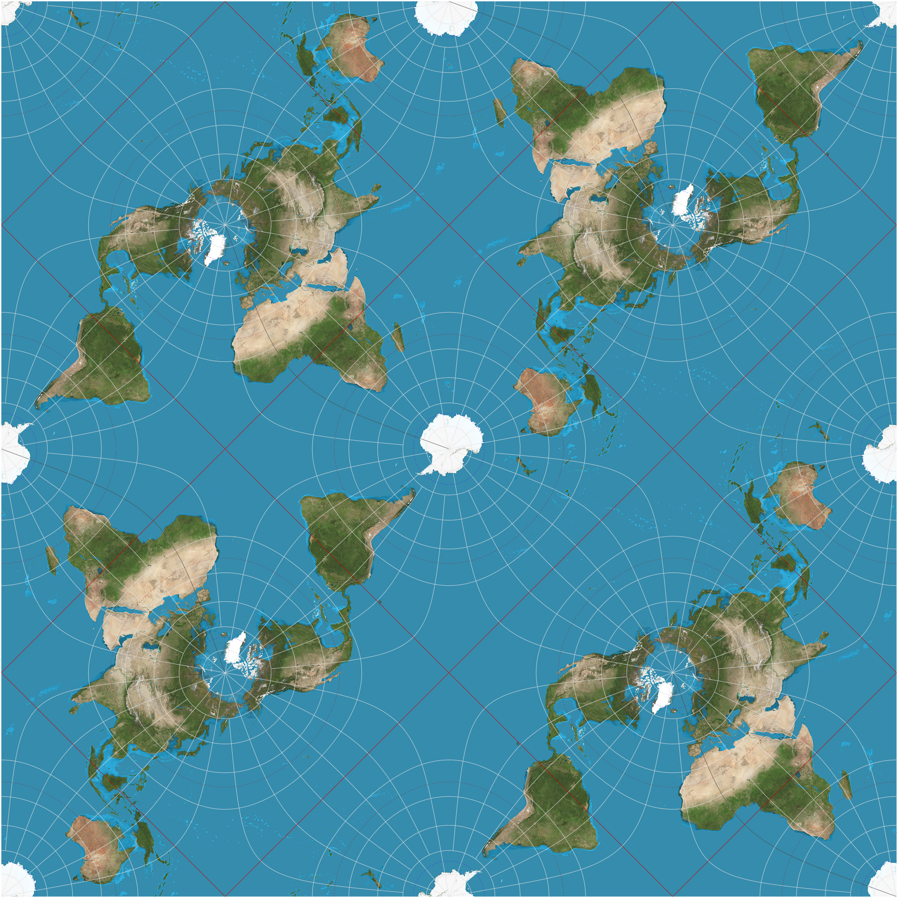
and once again I off the trail.
trail is to rail?
Where was I?
Валы валены, валы навалены, валы-на вале-ны..
волы на воле? вол может сломать загон, он добровольная скотики? скотина?
Скотина с котиной пришла? КотИна самая наглая, и такая не опасная, что никто не прогоняет, а учитывая что её могли принять за юную кошку покрупней, то с такими лучше дружиться. И в итоге карлики заняли доминирующее положение и возможно передушили всю конкуренцию в виде детёнышей кошек покрупнее.
И затем, видя что котяра жрёт, другие животные могли подтягиваться и просить еды.
это предположение, естественно, но давай пока на него положим предположение, что скотина от слова кот. кот ходит? сам по себе. скотина (в отличие от камней и деревьев и даже грибов - ходит)
←↑→↓↔↕↖↗↘↙↚↛↜↝↞↟↠↡↢↣↤↥↦↧↨↩↪↫↬↭↮↯↰↱↲↳↴↵↶↷
↸↹↺↻↼↽↾↿⇀⇁⇂⇃⇄⇅⇆⇇⇈⇉⇊⇋⇌⇍⇎⇏⇐⇑⇒⇓⇔⇕⇖⇗⇘⇙⇚⇛⇜⇝⇞⇟⇠⇡⇢⇣⇤⇥⇦⇧⇨⇩⇪⇫⇬⇭⇮
⇯⇰⇱⇲⇳⇴⇵⇶⇷⇸⇹⇺⇻⇼⇽⇾⇿
∀∁∂∃∄∅∆∇∈∉∊∋∌∍∎∏∐∑−∓∔∕∖∗∘∙√∛∜∝∞∟∠∡∢∣∤∥∦∧∨∩∪∫∬∭∮∯∰∱∲∳∴∵∶∷∸∹∺∻∼∽∾∿≀
≁≂≃≄≅≆≇≈≉≊≋≌≍≎≏≐≑≒≓≔≕≖≗≘≙≚≛≜≝≞≟≠≡≢≣≤≥≦≧≨≩≪≫≬≭≮≯≰≱≲≳≴≵≶≷
≸≹≺≻≼≽≾≿⊀⊁⊂⊃⊄⊅⊆⊇⊈⊉⊊⊋⊌⊍⊎⊏⊐⊑⊒⊓⊔⊕⊖⊗⊘⊙⊚⊛⊜⊝⊞⊟⊠⊡⊢⊣⊤⊥⊦⊧⊨⊩⊪⊫⊬⊭⊮
⊯⊰⊱⊲⊳⊴⊵⊶⊷⊸⊹⊺⊻⊼⊽⊾⊿⋀⋁⋂⋃⋄⋅⋆⋇⋈⋉⋊⋋⋌⋍⋎⋏⋐⋑⋒⋓⋔⋕⋖⋗⋘⋙⋚⋛⋜⋝⋞⋟⋠⋡⋢⋣⋤
⋥⋦⋧⋨⋩⋪⋫⋬⋭⋮⋯⋰⋱⋲⋳⋴⋵⋶⋷⋸⋹⋺⋻⋼⋽⋾⋿⌀
¬ is not among this, but in the first or third line of the unicode set.
↯↯↯
аццкая
сотона!
Let's see all the letters from the list of https://en.wikipedia.org/wiki/List_of_logic_symbols
Many of them are in images, which is a bummer, but they give the unicode numbers:
𝔻 In the formal sciences, the domain of discourse, also called the universe of discourse, universal set, or simply universe, is the set of entities over which certain variables of interest in some formal treatment may range.
https://en.wikipedia.org/wiki/Domain_of_discourse
oh, it's for some long time. And no guarantee that this path leads anywhere.
But, there's only one way to see:
https://en.wikipedia.org/wiki/Predicate_(mathematical_logic)
In mathematical logic, a predicate is the formalization of the mathematical concept of statement. A statement is commonly understood as an assertion that may be true or false, depending on the values of the variables that occur in it. A predicate is a well-formed formula that can be evaluated to true or false in function of the values of the variables that occur in it. It can thus be considered as a Boolean-valued function.
A predicate consists of atomic formulas connected with logical connectives. An atomic formula is a well-formed formula of some mathematical theory. The main logical connectives are negation (not or ¬), logical conjunction (and or ∧), logical disjunction (or or ∨), existential quantification (∃) and universal quantification (∀); the predicates always true (denoted true or ⊤) and always false (denoted false or ⊥) are commonly considered also as logical connectives.
A predicate that does not contain any quantifier (∃ or ∀), is called a propositional formula. A predicate whose quantifiers all apply to individual elements, and not to sets or predicates, is called a first-order predicate.
The way ⊤ and ⊥ are also T and F reminds me of t and f, and inspires me a lot to walk this path:
If ⊥ also stands for perpendicular lines, is = the parallels? but true isn't just is, but is true, so nah..
and just as those greek musical notes had the third form, here we also have such form of the T:
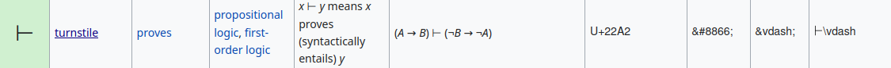
and of course there's reversed symbol: ⊣, but it's only used in few applications
how old are these signs? The name of this last one is probably recent, but then who knows how old is this word and technology, it would need nothing but a stick, or at least some tricky stick in some tricky hole.
Anyway, T & F and what is interesting, is that in russian and greek these two letters go in this order and they're only one U apart. and U is or and it is interesting that they go like this. Top Or Bottom. Very interesting. True Ur False.. hm..
If ⊢ is H and that H is И, then ⊢⊥⊤ are ift which is alphabetic (or, rather, trimatronic)
What am I doing? No, really?! I do have to give up weed and get myself in order, so I can build what I must. The June has almost passed and I've built nothing this year. It's gross. The fact that I invented metalic shell all over it is great, but it's nothing. It's not existing anywhere but my mind and even there not exactly well. I have to stop smoking weed. Goodbye, everybody. I will return when I have something to say. I hope you enjoyed it. Tot ziens.
yet in the morning that ⊢⊥⊤ thing made me think of ᛘᛦᛏ MorT is that ᛦ ⋀ or ⋂ crossed by tht l?
Is ili (или, or) i (и, and) crossed through by לא of l? Is ᛘᛦᛏ март (march) or is ᛦᛘᛏ armata, and how is it that both words are military? it's still so chaotic. To be continued.
Is meta- вместо? Is meta- anti-? these are questions, not answers. ? is for a reason there all the time, unless it's answered right beside it. I don't know greek, so why do I care..
I must meet those university professors, maybe they will carry me in.
Where do I want to get in?
Let's see if thise threefold with a hidden fourth present in the following examples:
∧∨≺≻
∩∪⊂⊃
I will look into them later, I have something else to speak about now.
Восьмеричная система. Если V было четыре, а X было восемь, то ведь тогда и алфавитная система была другой: не 3 по 9, но 3 по 7 (и именно 3 и 7 являются священными числами, никто толком не знает почему, но возможно сейчас приблизимся к разгадке этого)
3*7 = 21 и три aettir по 7 это три октавы музыкальной записи.
abcdefg
hijklmn
opqrstu
well, at least it is interesting. and f reflects t, interesting, and m reflects them both, which is very interesting, because some runic forms of m are forms for f in other readings and т is t in russian.
n reflects u (but g is hm.. h would be much better here: Н is N in russian, and greek Η became И in russian and russian и looks just like u)
e reflects s which is as it goes in some lexics: ecole is school, etudant is student, and so on, it's a well-known cognatic phenomenon. but what is L? L would better reflect R, but k does, and cursive k does look like R, but d, why d? d reflected R in k-symmetry. c would reflect k better. and yet it reflects q, that third position has j in the second line. And though I like how they reflect eachother half of the time, I feel it can make better with just a little notch:
abcdefh (because g is a form of c)
iklmn
oprstu (because greek and russian don't know q)
but now I have some irregularity: first line has 7 letters, and second and third - 6 each, let's make it more satanic, using the runic canon, where c and d are the same letter (which may explain how russian d looks like g: I cannot show that form of д in this font, but it looks just like g, there it goes, fifth.
I like how here capital letters reflect eachother torn in half by the border between voiced and voiceless parts (К & Р break this symmetry I wonder why. And it seems L predate R because of that, and because without that Р [R] oпст reflects abcd better, and here the symmetry isn't broken, because В [V] is inserted between Б [B] & Г [G] and further they go rather symmetric (see how φ reminds u to get why уф may reflect её; and further Х reflects Ж and Ц reflects З which is super cool, and probably how they were, and then Ж used to be voiced h, which is super cool, and reflects that ᚼ thing. and then ИЙ reflect ЧШ which is rather unexpected, but then that К again (the voiceless among voiced) and it make me want to throw the Щ away too, but let's guess they balance eachother out. But though then go ЪЫЬ, they're thrown out, because russian words don't begin with those letters. And so the triad of ЭЮЯ reflect the triad of LMN, which is super cool, but not exactly a reflection. But they have 15 letters per a half, and alphabet of 15 letters is something legendary. But hardly is it this weird thing with БВ, ЕЁ, ИЙ, к.. It is definitely not.
In english both four and five start with f, and in lating they both begin with q, which is interesting because of how archaic Q looks like Ф: Ϙ and even and then quinque sounds pretty much like german fünf. And that is where I started, actually, because if V stands for vier and not fünf, well, I pretty much concluded that at least it used to (who knows it which period, in some mostly prehistoric period, I guess) quattuor would get closer to four too.
By clicking that you can see some theory of how that letter gave birth to two, and though the fact itself is probably correct, the theoretic part ther is not what I'm even copypasting here. Standing after P is is deffinitely the claster similar to БВ and actually reflecting it. And I wonder how could that symmetry happen, since greeks don't have БВ and russians never had Q or ПФ sequence (jews have ПФ sequence, they consider П and Ф the same letter, or rather they diacritize default Ф with a dot inside of it. And is it how some ו or ז would never be diacritized like that and thus why ב and ד are two different letters. or are they? either way that v & z reflect these b & d greatly and according to that idea of both voiced and voiceless halves splitting into plosive and glides inside of them, thus four groups appeared out of two. and that is how... or is it how some reformers pushed their alphabets into these structures? Nah, more likely they never knew about them, or they would with their iron fist arrange their systems according to whatever structure they'd choose. And why would you want to make the structure, but not to make it perfect? Four types of consonants along one line, four types of consonants along the other, but speech is always more diverse. What one should do with the other letters? To place them into some leap group? Let's try to build the structure the way I imagine it and then add those extra letters and see how may we make some better job.
kabbala could be the destructive force, the force that'd destroy the previous culture by pulling out letters for their lexical plays and adding or removing letters if the play didn't play out, and still there's probably no strict system about it (I don't know if kabbalah is hogwash or something straight. Hypothetically, they could have rework the language itself so it could include some words and forget the others, but there's bible probably existing before kabbalah, one cannot change the word of god becuase it's written down. But one can reinterpret those words.. I doubt they did it, they seem to believe. Either way, let's see what we can get:
A Б Г Д
E V Ж З
И..
О П К Т
У Ф Х Ц - russians have preserved this line like this and it may say how those Ж and З sound:
Ж (ᚼ or ᛡ) as ɦ (voiced h) and З as dz.
Then the letters out of this canon would be LMN, R, and I miss simple Z and S and it makes me rethink that previous four-liner to see that glide form of T is not Ц but S, and that is thus what went after Х [h]
U F H S... let's do it all in latin, fuck russian.
Aa Bb Gg Dd
Ee Vv Ɦɦ Zz
I..
Oo Pp Kk Tt (even though O P Q T seems more traditions, in the light of what I just said of Q.. K)
Uu Ff Hh Ss (either way, Q and K could be male and femal forms of the same sign: Queen and King)
can it be that this is some syllabary, remember paleohispanic syllabaries, with those exact "extra letters" being non-syllabaric, as if they were added to the system being in the existence before them?
мама could be баба in that system. ляля would be дитя.. so far so good, I will chew on this possibility some more a little later.
let's look at those additional letter in the same table from vol.6:

Z and S actually added to the syllabary..
Does it say that Ц is the correct variant, and Z is dz and purer forms like s and z appeared later?
The I-line's LMN, then R (probably a variant of R, as it is in japanese) and then those Z and S are probably samekh.. and.. J? wow.. weird. And that s' in the shape of Ϻ is probably how z was mistransliterated (according to celtic iberians and the other iberians actually having only two S/Z each, only recognizing them differently, or is it academic disagreement. I'm not a specialist here, I just do what I can.
Should we now try and arange that syllabary in alphabetic order? We may try:
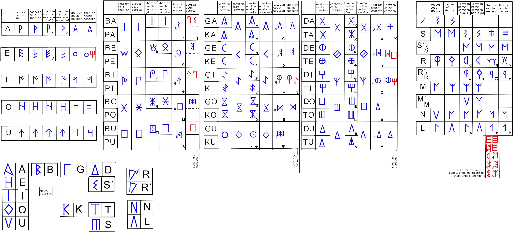
And it doesn't bring me much. Not that pattern, that's for sure. But what is it? Well, I'm not sure about this greco-iberian, unless they recognized M as N and the same letter, it could be some sloppy job of the researchers, but I don't claim that until I speak that myself.
But then other iberian (probably researched much better) show me that we had additional, extra-syllabaric signs and they could be relating to those other groups: MN to B, SZ to D or G, LR to G or D.
I smoke only at evenings now. Not to be dazed out in the working time. We'll see how it goes on.
I must build my capsula in few months. For that this sacrifice of being normal. Not sure about cutting my beard off though. Last attempt. If I want to save my hair, I must build capsule this year to spend the next New Year in it.
Let's rearrange them once more (probably to return to the way they were)
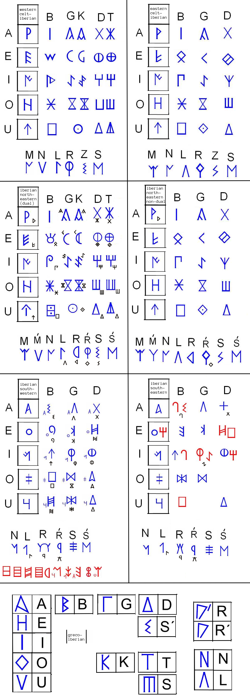
Looking at western celt-iberian I was wondering: how is it G looks like C and C looks like G?
But then looking at north-eastern iberian, I noticed that they don't have a consensus about which forms are voiced and which is voiceless, that whether one of the sources was seriously wrong, or that didn't even matter and those signs were invariants, just as according to these tables only 2 out of 6 iberian syllabaries distinguished between voiceless and voiced, and even those two didn't distinguish between B and P.
So I dare to claim, that iberian syllabaries had only three consonants in the syllabic part. B C D
Which allows me to fancy further that idea of alphabets having descended from these or some other syllabaries, and because many form in here look quite alphabetic: all those k's and C and G
In south-iberian syllabaries we can recognize staveless ᛒ in ba, but in others it's just some ᛁ-like form, which is a great way to start any system, but I'm confused by it. What lexical reasons were there to use for ba what others used for i (or v or n in hebrew. or a in arabic. and who knows what where else)
I think it will be much more convenient if I arrange these things this other way, and fuck the greko-iberian, it only confuses me and tells nothing yet.
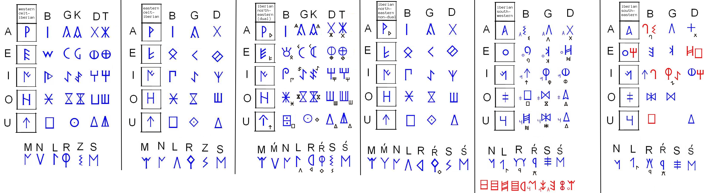
Okay, now let's recognize the letters we know from somewhere else from these syllabaries.
Almost all of them agree that pu is something 𓊩-like (that is ancient egyptian for p, and that is a great start) and if it's пуф, I don't know, but it probably gave us П.
du is Δ in all of them. And I think I found another system, which uses circle, triangle and rectangle for three mothers, but only three of them recognize the circle for a letter, but we needed vowel and it is vowel. E P D. or rather ΟΠΔ. and that is how D reflects R again. or is it OПТ, that would be more like it, more alphabetic. But that is guessing.
Interesting, that that form recognized as B (that staveless ᛒ) in one syllabary, is recognized as z or s in the other, and it reflects ᛘ and ᛉ, maybe.
Some forms of pi are recognized as some archaic form of p, but south-western form uses something ᛏ-like instead, and yet they also know that form, but it's not bi, but be; south-eastern uses both forms for bi.
Okay, that's it for now, let's see at latin short words from https://la.wikisource.org/wiki/Ad_Marciam,_de_Consolatione
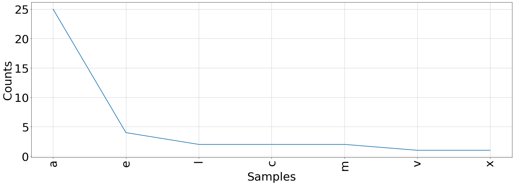
only a and e are actual words (the other are numbers) and both a and e seem to be the same word, but sometimes there's some slight difference between them: they are ec and ex, but also ab and abs.
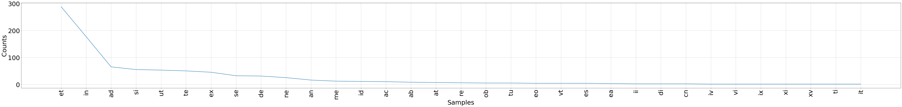
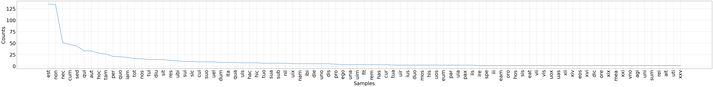
And what I was looking for? aha, the biliterals.
et : 288
in : 177
ad : 65
si : 55
ut : 53
te : 50
ex : 45
se : 32
de : 31
ne : 25
an : 16
me : 12
id : 11
ac : 10
ab : 8
at : 7
re : 6
ob : 5
tu : 5
eo : 4
vt : 4
es : 4
ea : 3
ii : 2
di : 2
cn : 2 (Cn. is probably consulus)
iv : 1
vi : 1
ix : 1
xi : 1
xv : 1
ti : 1 (Ti. is probably Tiberius)
it : 1
xx : 1
Служба для слуг
Работа для рабов
Крьера для курьера?: (карьера для карьериста. может быть и службой и работой)
Бизнес для ..бизнесмена.. я не знаю двух последних, я пришёл про службу и работу поделиться.
ad : 65 an : 16 ac : 10 ab : 8 at : 7 de : 31 di : 2
et : 288 ex : 45 eo : 4 es : 4 ea : 3
in : 177 id : 11 it : 1 me : 12 ne : 25
ob : 5 re : 6 si : 55 se : 32 te : 50 tu : 5
ut : 53 vt : 4
Значение пердежа губами в ранних системах письма даже:
английское re в русском становится pere, and it makes think that pr was one affricate sound and it would explain Р being R in Russia (as I told you, that olimpic torch was not about putin, but about россия. at least it was declared so, but naturally it was both.
after all, дух is both spirit and smell.
a : 25
e : 4
l : 2
c : 2
m : 2
v : 1
x : 1
o : 1
their o is o! an interjection. their a and e are something like ex, but also ab, and de, all three are pretty much the same, but depending on context they can be translated as in too, but that's because of different grammatic construction, it seems to be off in the first place, of. o' as in o'reily is of reily. I think it's of.
is ol' of 老 [Lǎo] and -d is -ed? is L old? then what is all? стар и млад? is au youth?
Anyway, you can imagine these three into that previous chart, and I want to play with these:
I saw some solution or just hardwork on this stuff in my dream, I wish I could remember them..
est : 135
non : 134
nec : 51
cum : 47
sed : 43
qui : 33
aut : 33
hoc : 28
tam : 26
per : 21
quo : 20
iam : 19
tot : 16
nos : 16
tui : 14
diu : 14
sit : 14
res : 12
ubi : 11
sui : 10
sic : 10
cui : 9
suo : 9
uel : 9
dum : 8
ita : 8
qua : 8
uis : 7
hac : 7
hic : 7
tuo : 6
sua : 6
sub : 6
nil : 6
uix : 5
nam : 5
ibi : 5
die : 5
uno : 5
dis : 5
pro : 4
ego : 3
una : 3
uim : 3
fit : 3
rem : 3
has : 3
cur : 3
tua : 2
uir : 2
ius : 2
duo : 2
mos : 2
his : 2
uos : 2
eum : 2
par : 2
uia : 2
pax : 2
iis : 2
ire : 1
spe : 1
iii : 1
eam : 1
oro : 1
hos : 1
sis : 1
eat : 1
vii : 1
vis : 1
uox : 1
uas : 1
xii : 1
xiv : 1
eos : 1
xvi : 1
dic : 1
ore : 1
xix : 1
mea : 1
xxi : 1
vno : 1
agi : 1
uni : 1
sum : 1
rei : 1
ait : 1
uti : 1
xxv : 1
deo : 1
aut : 33 agi : 1 ait : 1
cum : 47 cui : 9 cur : 3
diu : 14 dum : 8 die : 5 dis : 5 duo : 2 dic : 1 deo : 1
est : 135 ego : 3 eum : 2 eam : 1 eat : 1 eos : 1
fit : 3
hoc : 28 hac : 7 hic : 7 has : 3 his : 2 hos : 1
iam : 19 ita : 8 ibi : 5 ius : 2 iis : 2 ire : 1 iii : 1
mos : 2 mea : 1
non : 134 nec : 51 nos : 16 nil : 6 nam : 5
oro : 1 ore : 1
per : 21 pro : 4 par : 2 pax : 2
qui : 33 quo : 20 qua : 8
res : 12 rem : 3 rei : 1
sed : 43 sit : 14 sui : 10 sic : 10 suo : 9 sua : 6 sub : 6 spe : 1 sis : 1 sum : 1
tam : 26 tot : 16 tui : 14 tuo : 6 tua : 2
ubi : 11 uel : 9 uis : 7 uix : 5 uno : 5 una : 3 uim: 3 uir: 2 uos:2 uia:2 uox:1 uas:1 uni:1 uti:1
vis : 1 vno : 1
vno for uno tells how much v was equal u in that late roman period, it's Seneca.
This list is incomplete, it only collects all the letters of one text, for example he never uses word vir, which is very popular. So this strategy is failing and I have to find some better algorythm. Some dictionary, maybe. Yeah. all latin triliteral and biliteral words, there's such thing on the internet.
Why no words begin with b? Neither in triliteral nor in biliteral.
Maybe he just didn't use them. https://www.ezglot.com/words-starting-with.php?l=lat&w=b&length=3 tells there are five: bee bis boo bos bōs
is bee пчела in latin? but apis is пчела
bis is twice, a valid latin word, but then too numeral to be really a word, but we have three more:
boo is the same as in english: roar, cry, boo
bos is ox, cow, leather belt if I got it correctly
bōs is probably the same word with longis above it
На символике красного креста крест усечён чтоб калек приободрять?
b is for bull
c is for cow
or
c is for cat
d is for dog
б бык
к корова
к кошка
с собака
п пёс
итак, б бык, к корова
a b c
a is for anthropos?
человек с быком как лучшие друзья могли охотиться на хищников, человек с острой палкой бы сидел на быке и отгонял бы хищных тварей палкой этой, а если бы протыкал их насквозь, то спускался бы и ел, а бык бы такой "ты ешь эту хуйню?" а человек бы пробовал траву и тоже "ты ешь эту хуйню?" и они бы жили в полном симбиозе, потому что кусок бы друг у друга не вырывали.
so to place b or c first was if male or female was more important. europeans say ladies first, but here b is male, and c is female, which pretty much negates what I said about labials for females and linguals fro males. Together with мальчик и девочка, мужчина и женщина, бык и корова рисуют совершенно другую реальность. Связано это как-то с тем, что -им было женским суффиксом, а -от мужским, а потом это поменяли? Какой-то процесс пересакрализации при узурпации власти мужиками?
vir, опять же.. странная тема, очень мутная, нечеловеческие мозги нужны для её разрешения.
(ну или просто чуть больше времени, и всё выстроится в гораздо более ясную картину)
пр, пердёж губами, неприличная буква Ѳ, Ѳея как газообразная сущность, может это быть настолько дичью? дикие люди несли дичь, безусловно. Вопрос в том насколько глубоко в эту дичь я хочу или же должен погружаться.
или же это я несу дичь? ну, это само собой разумеющееся.
Back to the paleohispanic. Some form of di/ti looks exactly like pamphylian sampi:
Pamphylian greek also has И-like shape for their digamma: Ͷ (and it relates to й being close to w)
And it is interesting, not only because и in cursive is и which is very similar to u the u ~ v
but also because it's even more than this:
Etymology 1
A glyph development from the Phoenician letter 𐤅 (w, “waw”) in several epichoric alphabets, wherein Ͷ, ͷ (V, v) denoted the archaic phoneme /w/, which was elsewhere denoted by Ϝ, ϝ (W, w, “digamma”). In the Pamphylian Greek dialect, /w/ gained the allophone [v]; consequently, Ϝ, ϝ (W, w) was adopted to mark the distinction (albeit inconsistently), with Ͷ, ͷ (V, v) denoting the original [w] and Ϝ, ϝ (W, w) denoting the novel phone [v].
Pronunciation (Pamphylian, hypothesised) IPA(key): [w]
Ͷ • (V) (upper case, lower case ͷ)
(Pamphylian Greek) digamma, denoting a voiced labio-velar approximant, and sorted between epsilon and zeta
Etymology 2
An alteration of Ϻ, ϻ (Ś, ś, “san”); it occurred in the Arcadocypriot Greek dialect of Mantinea in Arcadia, wherein it is believed that it denoted a reflex of the Proto-Greek phoneme */kʷ/, intermediate between it and the later Arcadocypriot /sː/.
Pronunciation (Arcadocypriot, hypothesised) IPA(key): /t͡sʼ/
Ͷ • (Ś) (upper case, lower case ͷ) (Arcadocypriot) tsan, denoting an alveolar ejective affricate; its sorting order is not known
Synonyms (Arcadocypriot tsan): Σ̱ (S̱)
Etymology 3
Applied due to the resemblance of the Melian glyph to the Unicode reference glyph shared by the Pamphylian digamma and Arcadocypriot tsan.
Ͷ • (B) (upper case, lower case ͷ) (nonstandard) an allograph of Β occurring in inscriptions from the isle of Melos
If he is он and him is им, then им is naked suffix, and whether it was оним, simplified.. actually still recognized form of им is ним. н is он (en) in one language and he (he) in the other.
Is it the same letter? Нн & Hh
aeiou
bf
cg
dh
dada = he
baba - fe = f = ſ = ʃ
в is 8, ф is 8 повёрнтая на 90 градусов. v & f.
I suspect m to come third, and I pull it out of t being т [t] in russian. and f and t reflect eachother even better than В & Ф.
В = З? staved and staveless, they have to go like this. зима винтар окей, как это я така скрауз попал, сабконшснс хелло. зина winner? nika vika was N = Z? no, фу, за(раза или молоть?) I'm wandering, not as good a pair as zima and vinter. z = v is weird but something very familiar. зови возьми. я уже гадал об этом? в юбом случае я не нашёл тогда ответа, потому что не знаю его сейчас.
УЗ
Ч Р.. so I suspect З to be staveless V? еёжз efgh h as z, russians have z where latin has h. No, russian H is И, the letter after З, so З is G zain gain З is double c, literally digamma, the letter after E, and because cursive E reflects cursive З as a mirror,they are the claster as ЕЁ или ЕF, but actually it goes EFГ, thus
EЗЖ? EЗH h ~ n? h ~ z? what this `~' means?
ab ac ad an as at
No 2 letter words starting with b found
c. ch cē
de do dē
ea ei el em en eo er es et ex eō
fi
ge
ho
id in io ir is iv ix
No 2 letter words starting with j found
kū
r. re
Interesting.. I mistook k for q and took r instead of l.. hm..
la
me mi
ne ni no nē
ob os
No 2 letter words starting with p found
No 2 letter words starting with q found
r. re
se si st sī
te tu tē
ut
vi vt
No 2 letter words starting with w found
xv
No 2 letter words starting with y found
No 2 letter words starting with z found
The fact that xv is numeral 15 (and vi is probably 6, just as iv and ix are 4 and 9 the way we know them. or, if v is vier, then iv is 3, vi is 5, ix is 7, xi is 9 xv 12 iv makes more sense as 3 than as 4, because in christianity god's name is very similar to iv, io in ioann is that reading of tetragrammaton)
search for 𓈎𓏏𓎛 is recognized as 𓈍𓏎𓎚 in my browser, but as you see it in the image below in editor.
So maybe it's not the transliteration is wrong, but unicode is f-ed-up?
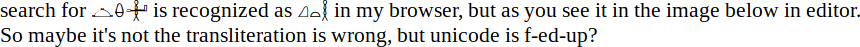
and then I see that it's not 6 different hieroglyphs, it's 9:
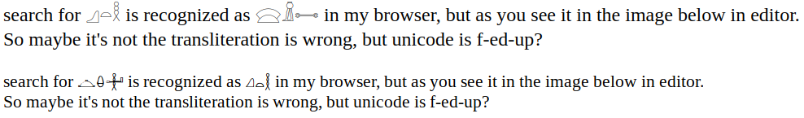
you probably see them these way two tiems. I have them both in png now though.
Yet searching with these triples doesn't find much, maybe I should invert them:
𓎛𓏏𓈎 is recognized as 𓎚𓏎𓈍
It's here only because I spoke about unicode alot. I don't know why. It's not what's going to bring me the victory.
Ask the question again: what does every letter mean? What are the words beyond the letters?
Алфавит это фонетическое письмо, и поскольку нации имеют разные языки, они по разному алфавит и переосмысливали: алфавит изначально полностью фонетичен: B K T во всех проявлениях. Удивительно, что форма креста, использовавшаяся для Т используется не для Ту, а для Та, если не Да. крест вроде означает нет, почему же да? может потому что палеоиспанский не является русским.
А Б Г Д
Е В... не так, я же это уже сделал:
Aa Bb Gg Dd
Ee Vv Ɦɦ Zz
Ii Mm Ŋŋ Ll ??? (or is there some samehk like arabic ص I do not even understand the difference of.
Oo Pp Kk Tt (even though O P Q T seems more traditions, in the light of what I just said of Q.. K)
Uu Ff Hh Ss (either way, Q and K could be male and femal forms of the same sign: Queen and King)
were these 20 letters like our 20 fingers? That is silly. Who would use toes.
It's more like thumbs were used as index at the fingers and only 8 fingers we knew, octaves could be some ancient word in some other meaning. I don't know, I'm guessing, but A to H are the first two lines, and musical notation goes A to H (even though only germans and russians recognize H as si, all the others onl know A to G, 7 notes. wtf is H.. how did that thing appeared there? These musical theory question have it been answered for me? I think it was, I still don't get it.
And because I-line is weird (it was always weird and now those sounds (except I and K! even though I placed K where Q was, well, it's still in the I-line today) are not in the syllabic part of paleohispanic and I consider that part the most archaic part of all paleohispanics (why would they need them if they had alphabetic system. Why do japanese use syllabary? Well, do they add alphabetic part to it? what are んン? the wu, this consonantal ending is reduced wu. so alphabetic sign come out of syllabary, no need to do it the other way around.
And because whisper are quite intelligable, I say that 8 sounds used to be enough. Only two vowels: neutral A and palatalizing E. Only 6 syllables, that gave birth to 6 letters:
A BA GA DA
E VE YE ZE Ye, huh! very smart, and thus it repeats the final line's v*yz order.
And actually this ABGDEVYZ is A to Z. I think I got another explanation of why Y is where it is today. The previous one was the rhombic symmetry around vowels and that came almost exactly 8 years ago. It was on a birthday of one of my friends, and it's time to check the date, I have to start remembering people's birthdays, it's very social. I need to be social. I will even cut my hair short and shave my beard away if I have no capsule to sleep through the winter. I will justify the "readiness" in the winter, I don't seem to believe in myself, I think there will be no much to justify. But I must. I must build. I really don't want to lose my beard, but this time it will be for being not honorable enough to wear it. I must build it. Muses help me please. I called fairies farties, I envoke musies again.
amusies? am you see's
Let's look into latin bilaterals more. Probably they will be similar in the same letter, maybe not, 'll see.
ab ac ad an as at
c. ch cē
de do dē
ea ei el em en eo er es et ex eō
fi
ge
ho
id in io ir is iv ix
kū
la
me mi
ne ni no nē
ob os
r. re
se si st sī
te tu tē
ut, vt (that, as, prout, while, as soon as, since, wherefore, whilst, as, however, howsoever, how, relatively, comparatively, in what manner, to and fro)
vi (force, amain, compulsorily) vt (is it "for example" or is it a form of ut?)
and I decided to make some dictionary of short latin words,
but it will be sorta large, so I think once again it's time to create another appendix:
Dictionary of short latin words.
Greetings from there:
ab ac ad an as at
which I found in one source as all the biliteral latin starting with a seems to be incomplete.
a ab ac ad ah ai an ar as at au
is the whole line. (but then again, ah ai and au are interjections and ar is a form of ad)
ce ci
da de di do
e ea ei em en eo er es et eu ex
fi fu
ha hi
ia id ii in io is
ma me mi mu my
na ne ni nu
o ob oh os (I guess os is both mouth and bone, because of teeth)
re
se si
te tu
ut
va ve vi
I think I lost my way in trying to figure out how it all was in he past, when the most successful people are focusing on the future. I must see how it can help me teach people to understand other languages faster.
Either way, let's play with latin some more.
But then, I don't know latin well enough, I would probably not recognize words if they actually were combined out of those short words.
And what if ab is literally not-in? a- as not and b as in (in russian and hebrew, and in dutch binnen uniting both hebrew and english forms)
and about then would be not-in-out? it doesn't make much sense, but if further aphexations happened when people forgot what were the parts of the words, then it could be, and then meaning would deviate much.
If ab is not in (off)
then ad shoud be not of (not de, and thus whether in or what add? attach? at touch?
ad is literally the opposite of de:
ad
1 to, up to, towards
2 near, at until, on, by almost
3 according to
4 about with
de is of, and as to is the opposite of of, so is ad is the opposite of de
de ~ of
ad ~ to
and what is ac?
ăc
1 (usually before consonants) and, and also, and moreover
2 (connecting a more emphatic sentence element) and in particular, and what is more
3 (connecting a sentence element which strengthens or corrects the first element) and in fact
4 (in comparisons) than, as
First three meanings of ac make it look like a form of et
The fourth meaing make it a cognate of as.
ăc could be a- cĕ (not "that's it")
ci for move! is ce (c'est tout)?
so a is not? and why is it first?
a (not) b(in) c(this) d(of)
e (ex) f(happen) g...
That is ridiculous, how is it f is for fi and not for fu? What do I get? some alphabetic poem of the shortest words? Well, I thought some narrative to appear, but it doesn't.
But I told myself, it's not the right path. Truth is much more simple. People didn't make it as a story, they made it the same way koreans did: it's a phonetic structure. Maybe syllabaries were narrative, but japanese have to rearange them into iroha to get pangrams, and "бабу бы" is a great joke, but that's it, others don't follow this order, but then daddy do is also quite a sequence.
russian male and english female? it's poetry, it's not the way it happened. But let's make this poetry real.
Let brits take russian women, let russians take english gals. Americans seem to be too hard on their male, russian brutal muchos will teach those ladies manners. I am for mixture within one race but different ethnic groups, the way you had to take a wife from another village, to both create the intercultural connections and to avoid the imbreeding.
I saw some clinically retarded child from the marriage of a russian and a southerneress.
And though it's an anecdotal evidence, I would recommend not to have children with somebody too different from yourself. Both imbreeding and racemixing lead to higher risk of genetic diseases. Even though I don't understand the second part, like what wild combination can cause genetic diseases if recessive genes are not the factor. I also speak as a commoner, as a simpleton, as.. what's the word.. well, not as a scientist, as a layman.
Let's get back on track of the language.
a b g d
e v h z (h is voiced, when zain took vulva's place, it made a long castling in greek and short castling in the english. then is.. what? which letter is the king? z? zar! then which is the rook? Now I think I see clearly how to play. rook is rogue you substitute for a king when the attack is ready.
but it's just guessing, some artistic expression.
i m l n (because both l and h turn into и and l~g thing is also here)
o p r t (as a variant, because r reflects l, but it could be q, or maybe it couldn't because not everybody have it. It doesn't mean those who invented the alphabet didn't. Alphabet would be untouched if it was perfect for everybody. There had to be some reason to allow people to mutilate it. Sanctity wasn't invented then, maybe. Sanctity of it wasn't implemented, because people knew people who invented it, so other people of that or higher status felt able to modify it.
у ф х ц
this prehistoric order is reconstructed on the basis of the assumption that voiced-sonor-voiceless was the order of the alphabet. It's not for sure, but it seems likely, so I did.
And because whisper is understood, a to z is the way it was, two four-note sequences, octal system. 2 by 4, the way the roman numerals go if V is 4. v is 3 in russian alphbet, but it's probably nothing. v is number 6 in hebrew, and that could be even further from 4 and after it was 5 at some point.
v could be three if the paleohispanic order it often given by academia is not arbitrary, but actually used, then a g b d could be the order those syllabaries followed, and though it's similar to oriental systems, it could indicate the link between them (maybe some pioneer researcher of the field took the idea of abecedaries from some eastern one)
a g v d
it would make more sense if d was two, like duo, du,
a for az, I
d for du
z for they?
b for вы, U
So was protoalphabet purely phonetic or was it meaningful?
I think more meaningful variant would win over all the other forms, and some contest could be happening then to make alphabet out of some principles they knew before it:
pentatonica ov vowels.
yin and yang of labial and lingual.
maybe three elements too. and were vowels one of those elemnts or not? LMN are the three letters standing for elements, so they say, one of the official etymologies of the word element is el-em-en yet from which language the suffix -t is is a mistery. is it elemened? eliminate is a funny word, but not semantically consistent to this context.
In situ, I read it and by the context maybe I ecognized on site in it. Is it because si and to tu can be united into this word?
брать правой (carry with right? take.. receive is the word)
ливать, оставлять, сливать левой (leave with left)
and both leave and receive end with -ve, and none is neither take nor give.. give and leave g-l thing again (I don't explain what thing it is, if you read it you should know, okay, < and ^, ג and λ, etc.
правый бравый
right bright
давать левой (g unites g and d, I explained why. and g & l are also united, so l ~ d as glagolica also tells that they're similar)
да и ле тогда почему такие? ле ближе к не и к ло одновременно.
if e is ex, then external is eternal? and internal is only interim? there was some better word with in, but maybe it was im then non of non permanent, some impermanent, but shorter and brighter, what's the word.. but I find immanent instead, which crosses this guess out.
after sending some raw letter, I say to myself
See, you was too hard (and both heart and hot was in that hard)
if hard is heart and heart is heared, then hard is I can hear you. Now stop crying, I'm working. But don't waste your time by sending letter too soon, you would make it better if you waited for two hours, for four hours, I said a week. Pretend you have a lot of things to do. It will also helpyou with some editing ideas. Some snot should be wiped out, so lame, so lazy. No discipline.
Discipline kills creativity. I would be still obsessed with that letter for hours, I want to go on. If I'm sorry I sent it faster than I thought, I would learn not to do what exactly in the letters? To do, to wipe out all the snot. not snot, snivel.
Looking for sources of some dubious source on alphabetic prayers:
https://skifos.wordpress.com/2018/01/12/heptagram_ritual/ (mirror)
Данный документ интересен в первую очередь тем, что в нем содержится наставление по технике рецитации семи гласных, разновидности которой, как свидетельствуют «Евангелие египтян», «Зостриан» и другие тексты из библиотеки Наг-Хаммади, практиковалась в гностических группах. Цель ритуала – установление контакта с божественным миродержцем, именуемым в первой его части Огдоас, а далее Пантократор и Правитель полюса (Полократор).
I couldn't find many sources, but some translations into other languages existed, anyway, not sources. But when I looked for some phrasese used there, they led me not somewhere, but to a book directly related to those spells he gave, and I mirror Karl Preisendanz - Papyri Graecae Magicae. Die griechischen Zauberpapyri, Bd. II also in the following image:


Demokrits Sphaera. Mittel zur Prognose für Leben und Tod. Bring in Kenntnis, auf welchen Mondtag (der Leidende) erkrankte, und addiere die Tage zum Zahlenwert seines Namens und sieh nach, wievielmal dreiBig Tage das macht, und die restliche Zahl schau in der Sphära nach. Steht dann die Zahl oben, wird er leben, wenn aber unten, sterben.
Lol, what a bunch of crap, is it true? did they believe it? But let's not laugh at them: at least they gave more than a half probability for the client living. and now I wonder is this 40% where the association with 4 as with death comes from? Not just she for both words, but is that 4 that she brits know? 4 ends and men have 5 of them. Head is not the end, it's the beginning, rosh, bereshit. поставить во главу угла, глава is only chapter in english, but in hebrew head and beginning is the same word.
so is it 0 1 2 3 4 5 6 7 8 9.. and what I was doing here is seing 0 two times in the 8 and in 9 one of those 0s became 1. then ten would look like 2 underneathe only if it was turned 90°.
And scrolling that undecyphered pdf I found that that Vasiliev bro didn't imagine things, but actually made some translation, as he actually claims:
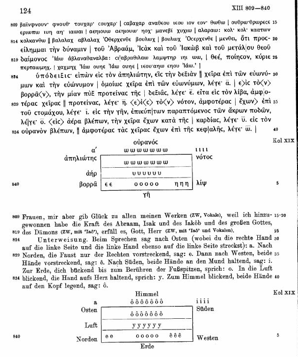
Данный документ интересен в первую очередь тем, что в нем содержится наставление по технике рецитации семи гласных, разновидности которой, как свидетельствуют «Евангелие египтян», «Зостриан» и другие тексты из библиотеки Наг-Хаммади, практиковалась в гностических группах. Цель ритуала – установление контакта с божественным миродержцем, именуемым в первой его части Огдоас, а далее Пантократор и Правитель полюса (Полократор).
© Перевод Андрея Васильева выполнен с английского издания Hans Dieter Betz (ed). The Greek Magical Papyri in Translation: Including the Demotic Spells Chicago, IL: University of Chicago Press, 1992 и сверен с греческим текстом в издании Papyri Graecae magicae / Die griechischen Zauberpapyri Transl. by Preisendanz, Karl, Band II, Leipzig, Berlin 1931.
just in case, have the first volume of that book in greek and german too: vol1
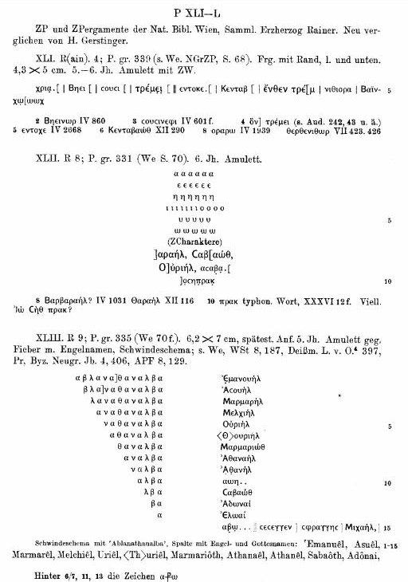
so many books, some day I will be able to read them all fast, they take me to much time to be interesting, internet is much better, so I shouldn't blame myself for losing passion for reading.
To call it quits is to call it конец and that is where v and ν meet again. we = ны. Where is it ны? I'm not sure, in russian it's мы, in bulgarian it is ние.
but then what is the translation of quit? канай атседава! or I don't know, maybe not, maybe it's nothing.
mad dead deaf
as if dead is dead-dead and mad is mind-dead, and deaf is dead f and hten f is for ear. which is hm.. feelings maybe for f. h~f hear feal. okay, cool. see is for feel too then. so thise ſ f h ʃ thing-ting-ring.
abcd
efgh
ijklmn
opqrst
uvwxyz
and ear hear tells that e plays here too, and g as ж tells that s the ш is this very g, especially because they look so much alike. And s does reflect c which does reflect g. so thus pqr are f~g spectre, p reflects f, no question about it, q reflects g and c and k, no doubt about it too. r is what? r i г.
so all qrs were of c and b transposed into p and d into t, but then why are there so many c's? no, not that, I wasnted to say why not into q, graphic part tells that d could be q, AND t at the same time, and c is the letter of the later period, of the period where some linguals were giving ...forgot the though when went to watch why we write чего when we clearly say чиво. When did it happen and which direction did it happen? Was it mistake or a trick of some orthographers, or was Г the way russian pronounced what they pronounce as V today?
ΓΛV as three forms of the same letter? And that is how 7 letters became 21? And aleph they probably added after that (aleph or somebody else, or I'm tripping and it will show in the future, we'll see. Believe in me I tell to myself: and I Look at ΓΛV and wonder why greeks don't have V, but only Y instead? it's suspicious. And Δ reminds Λ here and in glagolitic, adn d l are similar too. is d cl? could be, it is similar to something between c and l, but then it means that d appeared as this ligature and only after Γand Λ got distinguished as two separate letters. THus once again its not abd, but abc, or rather c and d were one form of the same: staveless and stavved, untl peoople forgot the basics of staff and were writing sigs in lines and c adn d were just forms of the same letter as g and д in russian (forms of these, not the unicode function of these letters, though д is the letter I'm speaking about, g is just a convenience to use its form, and because these forms совпадают, we can say that c g d are all the same letter. in the past. With this work I look into the past. Maybe this disbalance allows me to look into the future too.
both g and д are staved forms of c, so abc is the simplest forms. and if c is the crescent, then b is staved crescent too. Staved as a female holds the stick just in case, and to be more different form c, for convenience of distinguishing between those scratches. b is closed and c is open (were men less attracted to dresses?)
and if this is the moon phases, where b is ɔ (both o and b are labial, so ɔ is a staveless form of b) and if we remove the absurdity of a, we have the most basic yin yang alphabet of ɔc. ><. more or less.
mO: lE:ss how convenient that what stands for ɔ is all labial and what stands for c is all lingual.
I was thinking of ΒΓΔ reflecting that VΓΛ thing, but then I notice this pattern:
ΑΒΓ ΔΕΖ ΗΘΙ Κ ΛΜΝ ΞΟΠ ΡΣΤ ΥΦΧ ΨΩ
But then I see, that even thoug O is labial as B, ɔ as b; and that П looks like Г and Г is transliterated into H sometimes, and H relates to П in japanese and probably somewhere else, I will sort these drafts out some day, and will see what is where.
Well, even then I still see ОПР (i'm sorry, ai readers, that I use russian instead of greek, I think I warned you that this convention may happen, consider them typoes) more consistent as ABГ (and now even latin, sumimasen)
ΑΒΓ ΔΕΖ ΗΘΙ Κ ΛΜΝ ΞΟΠ ΡΣΤ ΥΦΧ ΨΩ
Ξ in ΞΟΠ makes not relation to A, only that Ξ is X and a is Ⰰ in glagolythic, (it has much shorter sleeves sometimes) either way it's quite a long pull.
It's shocking, that I can pull ΡΣΤ and ΥΦΧ to that ABГ, and though ΥΦΧ lays into that pattern of vowel-labial-lingual, how can ΡΣΤ go there? P (that's R) is vowel in india and croatia, Σ looks like staveless B, and then г ~ в in чего and чево, but in the light of the previous I scream "nonsense! nonsense!" Τ makes great Г, both graphically and phonetically, both look like forms of one another, maybe T is double Г, who knows, I'm not there yet.
ΨΩ demand that Κ and Os Ps Ks could relate to that weird ΞΟΠ, explaining that that's our triad,
that ΞΟΠ reflects ΚΩΨ sequence, and maybe that for whatever reason ΞΟΠ go in the wrong order and should be ΟΠΞ like OPQ. And it demands the latin broken into these triads:
ABC DEF GHIJ K LMN OPQ RST UVW XYZ
first let's explain the previous part:
ΑΒΓ ΔΕΖ ΗΘΙ Κ ΛΜΝ
Δ like Α
Ε like Β (graphically mostly, and somewhat semantically too: exist is to be.
So three sides a letter has: graphic, phonetic, and now semantic? Semantic could be the third element of the letters, the third, or first or second, mother.
ΓΖ ΗΘΙ Κ ΛΜΝ
ΓΛV is KLM but this destroys the cardhuse I placed before this place.
I think I got diverted by some false path I tried to ponder on before. Yes, letters are triads, but they're split all across the alphabet like actual forms of Г Λ V are not only in different places of the alphbaet, but also in different alphabets (greek г is γ and that is surprise actually, I thout it was ζ or ξ so "well" do I know greek alphabet. either way, that γ weirdly reflects that V is Y in greek. and let's see how far apart are them)
ΑΒΓΔΕΖΗΘΙΚΛΜΝΞΟΠΡΣΤΥΦΧΨΩ
one interval is 7 the other is 8, and if we remove that non-universal Ξ, we maybe get ourselves 7 in the second interval, but then V in english is not Y but Φ (a little different from russian Ф, but only by shades around it, they're in differen light sources and in different shades, this is a field to research per se, but I try to come back to what was interesting today)
ɔc. ><. more or less.
mO: lE:ss how convenient that what stands for ɔ is all labial and what stands for c is all lingual.
This thing gets the first prize today. Let's look into it some more.
ɔ c d a
c(e) ɔ(f) c(g) ɔ(h)
c(i, j, k, l) ɔ(m) c(n)
or are j ɔ and l reflects it around k? I think I'm tripping away again.
ɔ for labials
c for linguals, that's it. please leave it here. but I have to dig further to whether a breakthrough or the decay, both are valid because both will be truth speaking in its ways.
ɔ o c
is the picture of three phases (three faces) and it mays sound as бог (god)
and that pair of бог (bog) and god (гад) may lay in the heart of why we write чиво as чего.
го как замена бо. словно они боролись с тем, что мы называем бога богом, и хотели чтоб мы называли его го-дь. для универсализации, для смягчения межнционального напряжения порождённого взаимной неприязнью вызванной взанимным непониманием (наши слова почитания кажутся соседям проклятиями, как асура и ашура, но даже на каком-то ещё более глубоком уровне, в том древнем уровне, когда порождался алфавит, и я подозреваю, что это больше трёх тысячелетий назад.
there's some english translation of this thing, search for The Greek Magical Papyri in Translation, Including the Demotic Spells at lib gen, I don't mirror it today, especially because I only found the first volume:
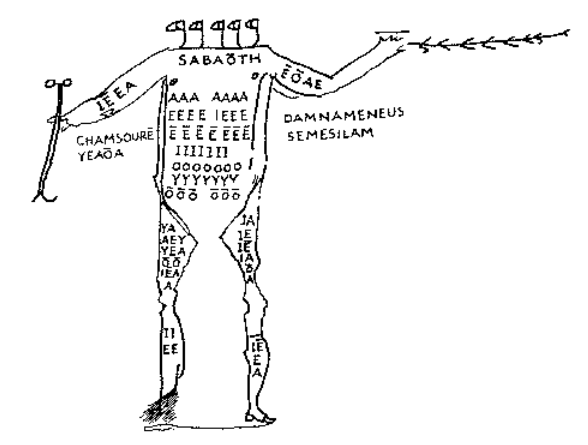
I'm confused by this magic thing, but I metioned it in words of Demetrius in vol.1.
My duty is to develop all the topics I raise. I wonder where it leaves me, but let's try to pray this way.
I'm not pronouncing those prayers because I didn't understand the context. Let's place vol.1 of that english verion here. Okay that image above is clickable I will only be able to read it in english, so until I finish reading, I whether know german or greek or the english edition of vol.2 appears.
Валенки валены ки ьi
k = ь, swash could lay like this. Look at the coursive and see how k can be ь in its forms: stick first, the lower right stroke is a swash of ᚴ, and because K is swashed, ᚴ is more clear, pure, and thus runes were secret exactly until some brownies began using text. Priests fucked themselves. Religion failed us.
Rome fell when heathens began fighting christina brothers. Ne mir ya vam prinyos no mech, he said.
Can we jar the worms in their Judea which won indipendence from Rome.
Rome has to admit defeat. Jews should fuck off and celebrate victory and freedom.
What if freedom for them is to live like their book teaches: to parasite! Who cares how many books exist, why do I demand from all the jews to repent for sins of some believers? I know where they gather, I may go talk to them if I feel it right, but believers are crazies or to control the crazies, why would I go there? Because I had visions? I took psychedelics, so it's no wonder.
Валенки валеные
алёнка алёна
пелена пелена (пЕлена глагол? спеленали, например, слышал. пЕлена пеленая, а значит не глагол, но причастие. на причастия распространяется орфография глагола (не отдельно, ещё предстоит понять почему)
вАлена что пЕлена, такое же причастие. причастие это почти часть речи как диалект почти язык. с боку припёко, припёко припёка диалектные варианты. коробочка коробочко, хотя первое нетипичное и литературное, в общем снова полетело не туда.
I must force myself to thing to think into the furthre future = further = farther => far is fur is fir?
мех is мах? живое? мех is мощь was my first association I didn't type it because it seems arbitrary, weak, no good.
Не мех но шкура? замша? кожа? кожа хороша? кожа одёжа, кожа рожа, кожа похожа, рожа похожа? ржа пхжа? R = Ph? wow. sind.. binden rune. R = Ф? I said ᚱ = П.
ᚮᚱᛦ(if R, or ᛣ if Q)ᛋᛏᚢ
if ph is pЬ, где Ь не b, но мяхкий знах. znak. zna-key.
R = Ph = F Fr what a surprise, and one letter closer to fart i perdett, dett is deyatt, to do. I know what deyatt means but mostly because of these suffixes.
ᛋᛏᚢ is beautiful as stave.
How comes I never knew word stave, but only staff was known to me, and I knew that plural staff is staves. Staff is some other word today, how could I knew that staff stave before stave staff?
Staff as personal is the magic wand? magic ward. magic word. ward ~ pupil, ward is another word I mostly didn't know. Does this language unwind before me better than before any englishman because I discover it in older head. подопечный и опекаемый. оба слова от слова опека. т.е. это вообще практически что? когнаты значит? тем более если подопечный переводится и как pupil. and those are the only two adjectives in russian to translate ward with. the only verb is ohranyatt, to guard.
nouns are plenty: ward the chamber (палата, камера, заключение), ward the custody(guardianship) then ward the district, ward the guard, and ward as some groove up or down (many words in these words I don't know: projection, ledge, protrusion, lip, lug, and recess, notch, groove, excavation, hollow
if ᛋᛏᚢ is stave, what do I see in the other line? ᛆᛒᚦᚾᚠᚵᚼ(or ᛡ)ᛁᚴᛚᛘ(even though it looks like ᛉ)ᚿᚮᚱᛦ(if R, or ᛣ if Q)ᛋᛏᚢ
could ᚮᚱᛣ be oRk? oPhk? could Tolkien use runkes ork staves because they are? He had to invent writing systems of other nations of those mythical times, but runes existed even them. Did they make it so that anybody telling that it's so would be blamed to be reading too much Tolkien? tricky. tricky tricky.
ork stv is what I clame to be in the last die.
v is their labial, so ᚱ can be R as we know it and then ᛣ is the q. The queen you cannot you know what, the mother of the nation, wife of everybody so whole the country should love her. That could be natural solution for the most beautiful woman. Virgin queen could be the nun people would обожали вплоть до обожествления. обожжёный горшок обожжён? оббожёный. обнажённый. обнажённой обожемой обожаемой.
о and ы make so much sense now as o and i.
. в i залупа?
my dick gets harder just thinking of o now.
o'coolnickoff.
okoolnickoff. double o tells the stress, but ' for the stress is much better, especially because kool is too negro. o'colniko to salute the ukreign. rusa is r'usa right wing of the usa? left wing is the france, I suppose. france and russia love eachother I never knew why, voyna i mir, boulevar sebasopol, revolutions, etc.
ork stave, what else?
ᛆᛒᚦᚾᚠᚵᚼ(or ᛡ)ᛁᚴᛚᛘ(even though it looks like ᛉ)ᚿ
lmn element o lemon. lemon, but I know of samekh (probably some dialectal suffix) and recognize ᛚᛘᚿ as elements. samekh is ц? I don't know, I'm mostly guessing, гадаю, дивинаю.
ᚼᛁᚴ [jik] or [hik] or джик? йик может быть йогом? яик? ik? загадочно слово
ᛆᛒᚦ could be обязуюсь, ابد used to be translated by g-thing as forever, now as never, but among examples only life and perpetuate can be translated as ابد. so it makes me go hm.. أبد is translated as forever, I was wrong just a minute before, but I still don't really know difference between أ and ا.
ᚾᚠᚵ is completely unclean. efg is nice EFГ but what does it mean? And was F removed all the time because other dice had one labial per die and the first one had both B and V or F (even in russian it has two labials, but they don't count one of them and they even say that.. and I feel like I got into some other timeline, where they see fita in glagolitic as numberless, some ж и з stand where I would expect to meet fita. Did I see it in russian glagolitic and now I google in english and receive croatian?
here I googled in russian and still got fita neither 8 nor 9, but what is 9 looks suspiciously similar to fita, why do they have not 2 ж и з but 3 of such sounds in that locus? Could it be that it was transliterated by someone from strong european tradition to read θ as th(~z)? zeology? dhuh...

and now see croatian thing for a contrast:
and I decided not to take images I used before, and I found something reminding me that previous timeline I was in, where glagolitic fita was not 9, but 8 and was removed to the end of the alphabet, but in this one it is simply thrown away:
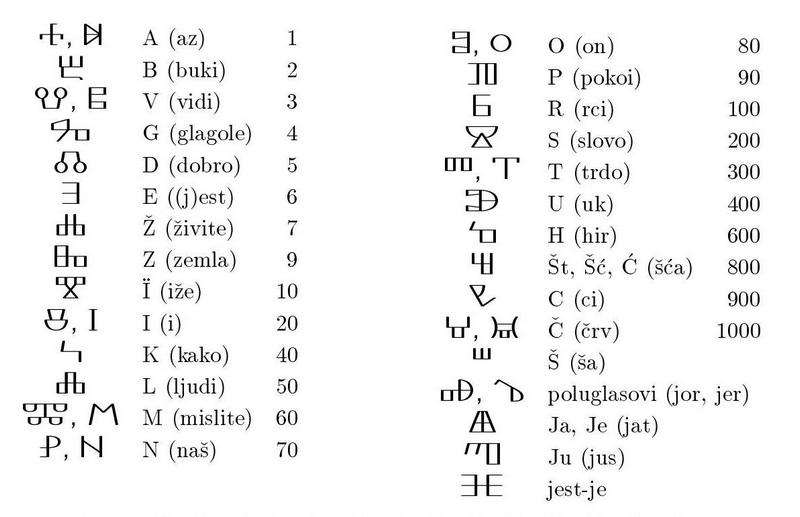
didn't I use this image before? I think I had it. Either way, let's collect some more:
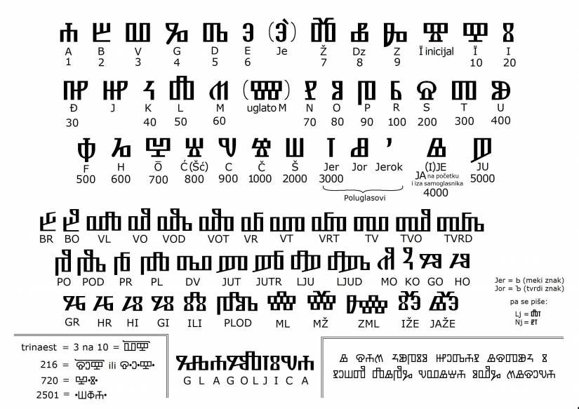
Here you can see how it is different from the one in russian, this one have somewhat different forms and numerology of it is a little different: there fita was 400 an fert was numberless, and here 400 is fert and fita is nowhere to be seen. But then again it has three forms of z-zh-z thing. Which is super weird and I will return to this peculiarity of glagolitic scripts later.
Meanwhile look at the level of academic linguistics:
Old Church Slavonic manuscripts are written in two alphabets: Glagolitic or Cyrillic. Scholars debate as to which of the two alphabets was designed by St. Cyril (827-869 CE). The name “Cyrillic” suggests that it was invented by St. Cyril, but most researchers now believe that Glagolitic was the alphabet devised by St. Cyril, perhaps with the help of his brother Methodius, for the purposes of their early missionary work. The main argument for this claim comes from the fact that of the surviving OCS manuscripts, the oldest are written in Glagolitic. (The corpus of surviving OCS manuscripts is discussed in the following post.)
And why don't they think that slavic peoples had writing system before Cyril? Especially since they themselves wrote.. nope, not themslevels, some Черноризец Храбр: Прѣжде ѹбо словѣне не имѣхѫ писменъ. нѫ чрътами и рѣзами чьтѣхѫ и гатаахѫ погани сѫще. кръстивше же сѧ. римьсками и гръчьскыми писмены. нѫждаахѫ сѧ словѣнскы рѣчь безъ устроениа…

In this image only a half of this story, it ends on the canon cyril gave to it, and there probably more interesting of that, and it's still hard for me to read these texts, either way, whole the book is at the end of the pdf that image leads to.
So that современник (this is a copy, the first printed copy of 16th century, there are earlier copies, but only from some centuries earlier, not a single copy of that book from that ancient time is known today, and it is complicated, because there could be more to their idea that glagolitic was invented by cyrill, even though it's retarded, because then why call him the father of russian writing system, and the text above explicitly tells that he literally took greek alphabet and only added some letters to it (the same way the made later for tatarian and other soviet languages) but the dogma demands that slavs had no writing system before christians, thus such mental gymnastics is performed:
Еще в середине XIX в. А. В. Горским, И. И. Срезневским, П. И. Шафариком и другими славистами было высказано предположение о том, что первоначальный вариант «Сказания о письменах» имел в своей основе глаголический текст. Предпринятые в XX в. исследования состава глаголического алфавита в связи с анализом азбучных акростихов и древнейших славянских абецедариев подтвердили это предположение.
I wonder how would they "подтвердили это предположение" let's leave this end loose for now, I will return to this subject, but not today, it's time to go to bed or something. that text where I copy-pasted it doesn't seem to give the explanation to its claim.
I'm not going to dig it by that very text, but I leave the link here just in case the other one dies.
Let her counter-balance my stance and I leave it for you to decide whose reasoning stands.
Meanwhile, some interesting pieces from that text translated into modern russian:
Одни говорят: “Почему тридцать восемь букв создал, ведь можно и меньшим числом их писать, как греки двадцатью четырьмя пишут”. И не ведают, сколькими пишут греки, ибо хотя есть двадцать четыре буквы, но не наполняются лишь ими книги, но прибавлено двугласных одиннадцать, и в числах еще три: (шесть), (девяносто) и (девятьсот), и собирается их тридцать восемь.
Так же, по тому подобию и образу, сотворил святой Кирилл тридцать восемь букв.
....
Ибо Бог не сотворил сначала ни еврейского языка, ни римского, ни эллинского, но сирийский, им ведь Адам говорил, и от Адама до потопа говорили, и от потопа, пока Бог не разделил языки при столпотворении, как писано. Когда же смешались языки, и как смешались народы, так и нравы и обычаи, и уставы и законы, и искусства по народам: египтянам — землемерие, персам и халдеям, и ассирийцам — звездочетие, волхвование, врачевание, чарование и все искусства человеческие; иудеям же — святые книги, в которых писано, как Бог создал небо и землю, и все, что на ней, и человека, и все по порядку, как писано; эллинам — грамматику, риторику, философию. Но изначала эллины не имели для своего языка букв, а финикийскими буквами писали свою речь, и так было долгие годы. Палимед же после пришел. Начав с альфы и виты, шестнадцать букв только эллинам обрел. Прибавил к ним Кадм из Милета буквы три. Так много лет девятнадцатью буквами писали. И потом Симонид обрел и прибавил две буквы, Эпихарий же, толкователь, три буквы обрел, и собралось их двадцать четыре. А через много лет Дионисий Грамматик шесть двугласных обрел, потом другой пять, и другой три численных. И так многие за много лет едва собрали тридцать восемь букв
....
Тем же славянским письменам более святости и чести, что святой муж сотворил их, а греческие - эллины поганые.
Если же кто скажет, что не устроил их добро, потому что доделывают их еще, в ответ скажем этим: и греческие также многажды доделывали - Акилла и Симмах, и после иные многие.
....
Вот если спросить книгочеев греческих так: кто вам письмена сотворил или книги перевел, или в какое время, - то редкие из них знают. Если же спросить славянских грамотеев так: кто вам письмена сотворил или книги перевел, то все знают и, отвечая, говорят: святой Константин Философ, нареченный Кириллом - он нам письмена сотворил и книги перевел,и Мефодий, брат его.
И если спросить, в какое время, то знают и говорят, что во время Михаила, царя греческого, и Бориса, царя болгарского,и Ростислава, князя моравского, и Коцела, князя блатенского, в лето от сотворения всего мира 6363-е.
Есть же и иные ответы, их же в ином месте скажем, а ныне не время.
Anyway, here's a previous edition of the text, a century or two centuries priot ot that printed version shown before.

Notice, that here it doesn't say that they read with those signs (like it does in the previous, or rather chronologically later, edition) the same way Tacitus only tells that germans were only divinating with their signs. But both variants of Hrabr's tale are copies, so who knows how it was in his original text. Hardly would christians added the piece about them reading with their pagan writings, but that they could be motivated to exclude it, this I believe. anyway, let's bring it in its pletora this time:
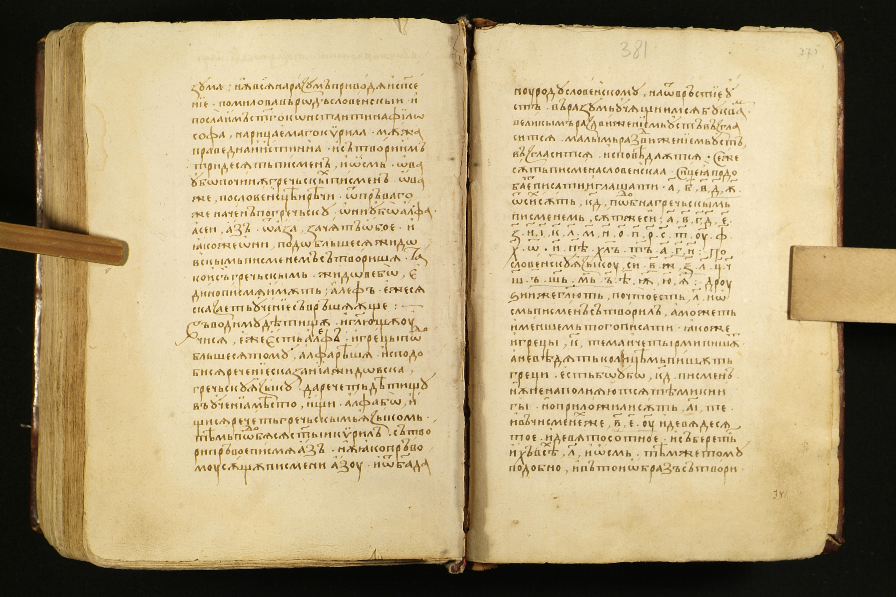
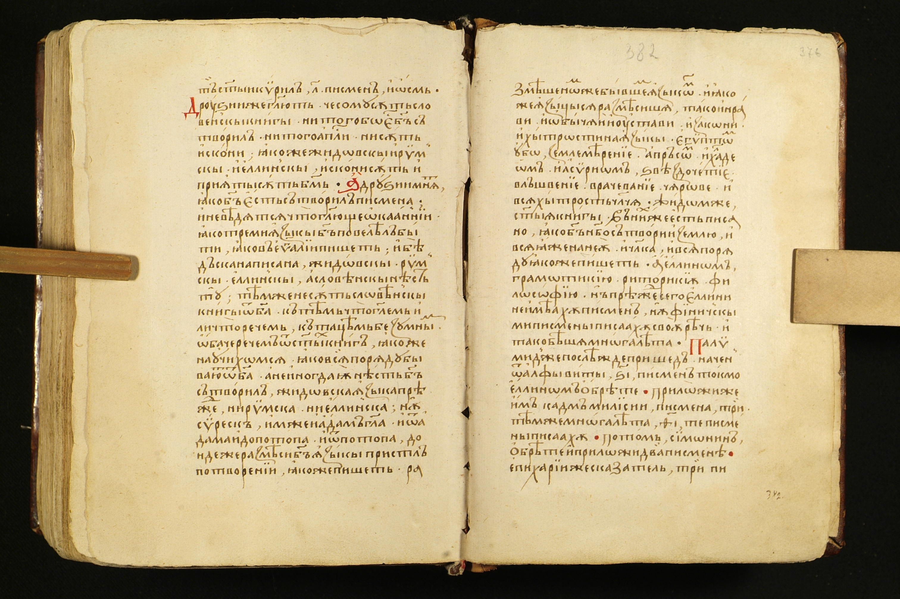
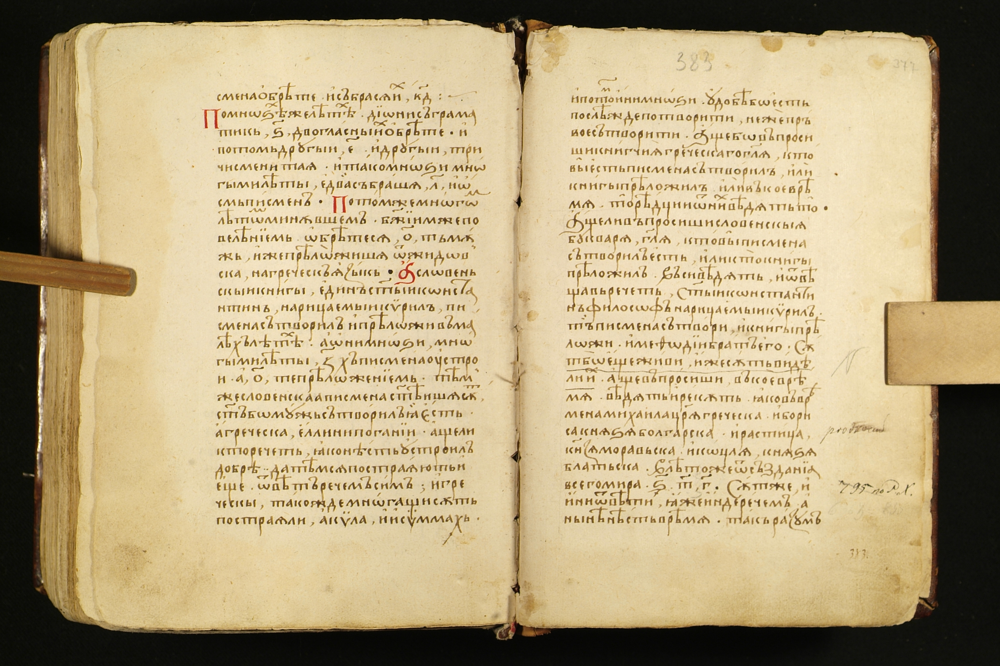
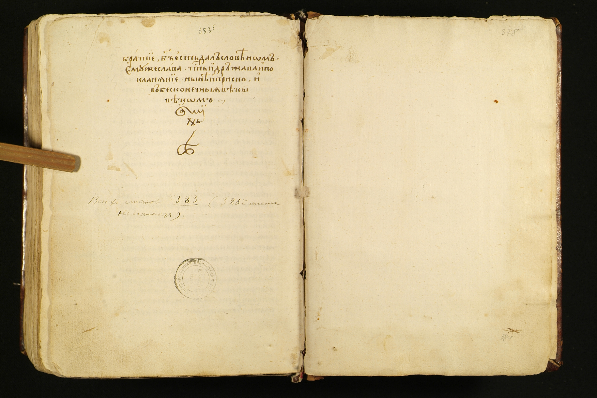
some other hand-written edition mentions them reading with those writings:

but probably this is the text Fyodorov took for his azbuka, so what does it prove? I need more manuscripts. Either way, signs are for reading, whether in divinations you read, if you divinate with signs, that's text. But then again, I'm biased.
It is weird how glagolitic origin of this text is the established dogma today, even though not a single of those 79 copies is in glagolitic. I believe that's a conspiracy to prove that slavs had not writings before christianos:
The manuscript of On the Letters has been preserved in 79 copies in seven families of texts, including five contaminated manuscripts, plus four abridgements independent of the seven families.[3] All of these families probably ultimately share a common protograph.[3] Not one of the textual families contains an optimal text, and none of them can be established to be the source of any other.[3] None of the text families can be shown to have dialectal features, albeit some of the individual manuscripts in the families do have them.[3] The protograph was written in Glagolitic, and it underwent significant change or corruption in the course of its successive transcription into seven families of Cyrillic texts.[3] Today only Cyrillic manuscripts survive.[3] The hyparchetypes of all seven families give the number of the letters in the alphabet as 38, but the original Glagolitic alphabet had only 36, as attested in the acrostic of Constantine of Preslav; however, one of the abridgements instead gives the number as 37 and another gives it as 42.[3]
the next day:
When you make business in your country too hazardous, you make successful players get away from the table. (it is a message for russian administration, I will translate it now and will shout it louder)
Если превращать бизнес в зартную игру, успешные игроки будут выходить из-за стола.
В стране, где бизнес превращён в азартную игру, успешные игроки выходят из-за стола.
ere is the root of early.
here = hear?
there = seee then.
abc - see the end
efgh = hear the end
feel is also in that second line
smell and taste are s and t?
be see do
feel go hear
mind smell taste
f ~ h ~ s ~ t
f ~ h ~ ʃ ~ ſ ~ s ~ t
if f reflects t, can y be in there? no, but Ч can. then J can, for it reflects ſ, then l should be there and g.
because (ж)ž ~ š(ш)
жена квинна?
ж = q? q = Ч ~ Ш ~ Ж по шипящести только, а что ещё мне нужно? звонкие шёпотом те же глухие.
так давай сравнимрусские строчки с ж и с ш
а б с е ё ж з
у ф х ц ч ш щ
х would better reflect d via t, but then c and d could be the same etter. just as s and t. smell and taste as the same? старость и смерть как одно и то же.
цч как её лишь парностью отражают, но по сути что это такое? её (her) и ш (she) would reflect one another beautifully, but don't I pull the fabric of this fractal to see it's similar but never the same, otherwise why would it be whatever.. let's try it.
её ж з и й к л м
ш щ ъ ы ь э ю я
я как мы это круто
и как ы это прикольно
й как ь это очень хорошо
к как э is э..
л как ю would lay into antonymy of pronouns, le and you but э in это would reflect that le for the for ה.
ж и щ хорошо сочетаются, но говорят, что ж это часть j of je and jo before it.
з как ъ is э.. again (э.. is hm.., a sound of prostration, of thinking with no answer)
if I unite шщ the way I united её into one word, this similarity falls apart again. So there are more and less similar comparisons. словно чётность и нечётность проявляются.
так давай случайным образом сдвиним рамку ещё на одну букву чтоб посмотреть проявляется ли симметрия чётных-нечётных или по каким другим законам? эти э и з мелочь подобная e and q in k-symmetry, e/q and o/g there are, still unexplained, and in the same ammount, so the symmetry above, let's explore it more to name it, is just as good.
а б в г д её ж з и й к л м
у ф х ц ч ш щ ъ ы ь э ю я
and it's very consistent. а-у we call them, ау-symmetry.
What is beyond this spectre?
н о п
т с р
nah, this part is only 1/3 good, that's no good, and that's not the same way, ау-symmetry doesn't go as k-symmetry goes, н о п р с т go where the у-part has no letters left.
И что всё это значит? Что я принимаю 20% несоответствия и принимаю k-symmetry as a law?
Nothing have grown out of the k-symmetry, and thus that's time to reject it.
But then again vowel-labial-lingual has the same 20% of exception in M, should we discard that too?
Or should it play as a proof that 20% is how much mutilated the alphbaet is in all spheres, merely by statistical probabilistical mutation rate telling of the time when the alphabet was invented or introduced, which is yet to be figured out by this mutation rate.
a b c d e f g h i j k l m n o p q r s t
u p q r s t u v w x y z
this comparison tells me that whether the first half got more letters, or that my frame is off.
a b c d e f g h i j k l m n
o p q r s t u v w x y z
I wonder how I came to the same natural symmetry in the first broken thing, I did it before, I have my insticts now so it seems.
a b c d e f gh i j k l m n
o p qrs t u vw x y z
does z reflect ž of j?
was k a form of g or h or completely out of its place? were a to i the first 10 and o to z the toes?
was there five letters in each of four aicme? a b g ? d to reflect o p q rs t - was that ? l to reflect r? but then is s of c or of t?
Or were they using 4-literal, 4-numeral, were they using 4-base thing? or should I say 10-base numeral system where we know 10 as 5? thus 0 1 2 3 4 would be their set.
a b c d and e f g h as the fingers thing, where h could be vowel, or rather, I think we found some better order:
Aa Bb Gg Dd Ee Vv Ɦɦ Zz
but to my knowledge not a single nation uses Ɦɦ where I placed it. But then if I look at Zz, maybe hebrew does
Oo Pp Kk Tt Uu Ff Hh Ss
was the second half of the alphabet tent to have more than 4 letters, becaus all five digits of the toes seem to be in play. were there 6 instead of 5 because the tradition to add in thumbs came along with the tradition to count toes?
o p q r s t u v w x y z
voiced should be the thumbs.
R is one of them, that's for sure.
But is V or Z (or Y, or W!) the other thumb?
у ф х ц ч ш щ
russian form of that line doesn't help it either, because it has no voiced letters at all. except у
yet because of that у (looking just like y, but she's u) and because the way it goes on: ъыьэюя I consider Y to be the thumb. but z would reflect the r better and uvwy would be better together for they are фшч in a sense. and what is the second thumb? what balongs among Ee Vv Ɦɦ Zz? Y would look great between x and z of Ɦɦ and Zz. And then those thumbs were held as a fig? And whether z is index finger or that fig is non-standard? but I didn't see such figs among deaf signs, and z is great for index: this, zie, sie, and isn't that sie the final z in that final toe? can toe be index? It's some desert search for techno allah whatever it means.
Listening to HORRORTHON by Secret Chiefs 3
I noticed myself splitting it into instruments, but then I realized that I used to listen to the music differently, as the one flow of sound, and I allowed it to let go and merge into one and it sounds now so much better!
(it was another offtopic chapter, but I hope you enjoy it, even though I know how to label it. Is it music theory? It is music practice)
До мен..
Do men prohibted..
Are people prohibitied to own precious metals without state stamp to prevent the fraud?
How would you prove that you were sold stainless steel instead of silver? (steel instead of metal is how it was in my head. steel instead the metal, silver demands that the to be clear. It was in my russian head without the the.
Срать содержит это ра в себе, и это снова эффект оа асура/ашура (is it sibolet/shibolet division story? жрать и срать таков круг жизни. ж звонкое как жихнь. с глупое как смерть
глухое глупое deaf and dumb (can't talk is stupid. speak and you will be respected. speak smart. But usually we're adviced to be quiet to seem smart.
he who speaks doesn't know anymore, such is the saying some buddhist lemma whatever they call it, that he who knows doesn't speak (and once he began speaking he does't know THAT anymore)
жрать и срать
жить и ссать?
пить и ссать
п = двойное г? (г ~ с ~ c ~ s)
and indeed it is:

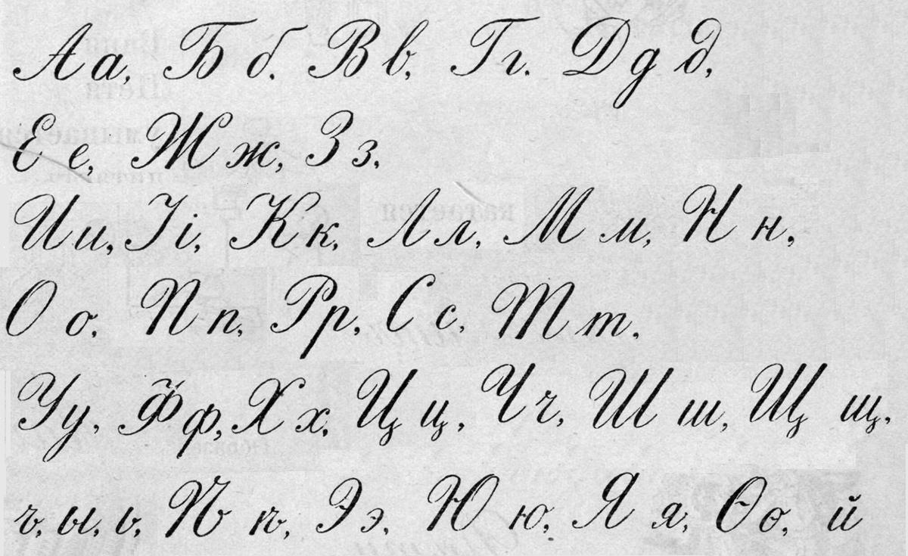
and I notice that in pre-masonic russia П Т are drawn differently, not as I remember them:
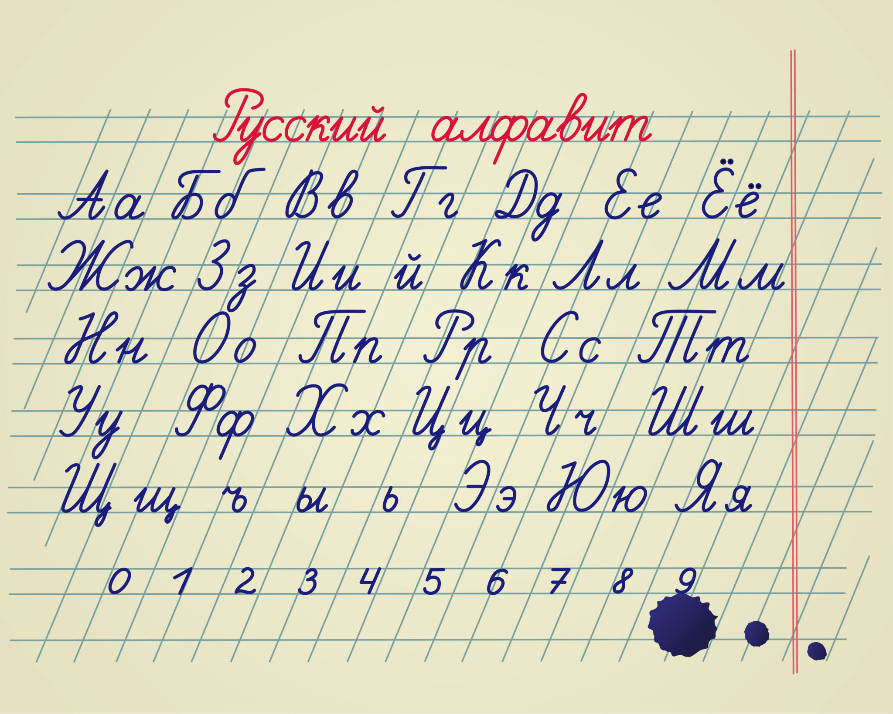
Watch at those ГПТ making a graphic sequence.
Soviets are very brutal.
Йог can naturally go with the capital Й (that's the И with ~) other than that it's the way I remember it.
Ё was the idea of some princess, and it's only under commies it was made a letter of the alphabet.
It is weird and once again leads to half of the borscheviks were noblty who didn't like the February.
Отношение Сталина к Временному правительству выявилось на мартовском партийном совещании (заседание от 29 марта 1917 г.). Отметим, кстати, что протоколы этого совещания были запрещены при Сталине и остаются запрещенными и посейчас.
Here, I played with them, placing them at the same distance, and I have this 9 letters:
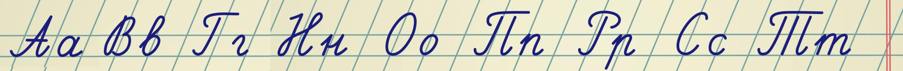
And i we keep that НнОоПпРрСсТт line instead of those weird АаВвГг we get КкЛлМм which is a suppoer cool symmetry. L for Г, M for B, A for K (a used to look like k in phonician: 𐤀 and brahmi: 𑀅)
it is like K reversed (phoenicians wrote the otehr other way around)
And then I notice that it aligns so well, because I took the liberty to change the order (КМЛ instead of КЛМ, and I noticed it not before I went on comparing the versions of the Hrabr's tale, so who konws how many mistakes like this there are above, probably not for all of them I suddenly retturned for no reason, or to make rings above them as I promise to do. Liberty given, liberty taken and taken further over the limit and as a result it became absurd. What am I doing here? It's a righteous question.
So before alphabet went pats past T, the symmetry was not a-half to o-half, but a-half to k-half.
a b c d e f g h i j
k l m n o p q r s t
and they're literally halves. 10s. probably they were 9s before j and q were added. let's try it:
a b c d e f g h z (h voiced, english r reminds voiceless h, maybe they copied latin pronounciation)
l m n s o p q r s hm.. something like this. (these three lines I added after that remark)
and only when v appears past t, we get the k-symmetry. and that could preexist, because somehow they would be mirrored? Let's see:
abcdefghij
E~F
d~g
c~h
b~i (the same hardly explicable i~m repeats in the k-sym and I explain it semantically, but do I use semantic in other cases? B & T, d & R, e & q are mirrored graphically, though poorly, f & p are phonetic similarity. gq are phonetic too, but different, see, letters can go any way, yet they are ..
a b c d e f g h i j
k
u t s r q p o n m l
g and o - hardly any direct similarity, but semantically globus of g and sphere of o, G may be the closest to G (after Q. but then isn't q secretly g?)
These "symmetries" are the weakest of the first three. Is it the freshest, the finest, the latest attempt to have symmetry there? only linear sticked and yet nowhere it is perfect now (M gave birth to l and n and went off the scene, leaving it fro K of the King or J of the Jupiter, SaintFather? Ju is Jo is Io is yhwh? их бох. их в-х их вах их верх их великах, их величество или что-то типа того, но это глюки, не значит чо они не истины, но глюки.

as you can see, more archaic version (at the left) forgets about spacebars sometimes, and then suddenly uses dots to separate words, but those dots are some forgotten comma-like punctuation marks: they used spacebars for the commas earlier in the text: longlongsetofwords, and then, suddenly, commas.
And that is not the only reason I find it much easier to read more newer text (at the right) though it's literally the first printed font in russian. so it's also rather old, and though are not that much different grammatically, they're the borderline between what I consider myself unable to read and what I can read rather well. So I can practice reading that book some more and I will be able to read much more of russian antiquity.
Looking up what that оубо is, I found that у́же used to be rope in russian, and thus уж the snake is rope too.
уже́ значит вяже, вяще? в смысле связано, в связи с? но в другом значении?
...